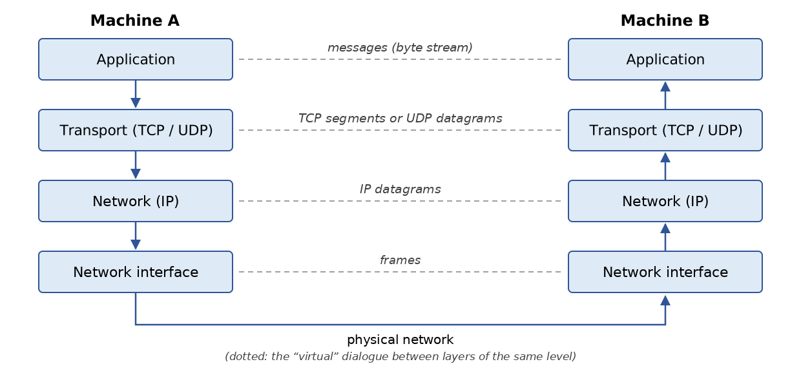
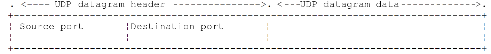
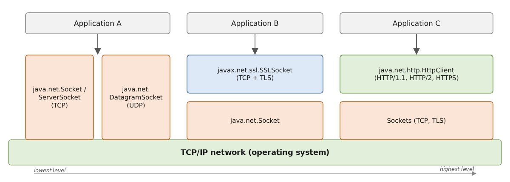

12. Webprogrammeren
12.1. Overzicht
12.1.1. Internetprotocollen
Hier volgt een inleiding op de communicatieprotocollen van het internet, ook wel de TCP/IP-protocolfamilie genoemd (Transmission Control Protocol / Internet Protocol), genoemd naar de twee belangrijkste protocollen. Het is nuttig dat de lezer een algemeen beeld heeft van de werking van netwerken, en in het bijzonder van de TCP/IP-protocollen, voordat hij de ontwikkeling van gedistribueerde applicaties aanpakt. Deze presentatie is gebaseerd op een tekst uit de beheerdershandleiding „Lan Workplace for DOS” van Novell (begin jaren negentig), waarvan de structuur en de geest behouden blijven terwijl de inhoud is bijgewerkt: het internet van 2026 is niet meer helemaal dat van 1990.
Het algemene idee van een netwerk van heterogene computers komt voort uit onderzoek van DARPA (Defense Advanced Research Projects Agency) in de Verenigde Staten. DARPA ontwikkelde de familie van protocollen die bekendstaat als TCP/IP, waarmee heterogene machines met elkaar kunnen communiceren. Deze protocollen werden getest op een netwerk met de naam ARPAnet, dat later het internet werd (ARPAnet nam TCP/IP op 1 januari 1983 over). De TCP/IP-protocollen leggen formaten en regels voor verzending en ontvangst vast die onafhankelijk zijn van de netwerkarchitectuur en de gebruikte hardware.
Het door DARPA ontworpen en door de TCP/IP-protocollen beheerde netwerk is een pakketgeschakeld netwerk. Zo'n netwerk verzendt informatie in kleine stukken, pakketten genoemd. Als een computer dus een groot bestand verzendt, wordt dit opgedeeld in kleine stukken die over het netwerk worden verstuurd en op de bestemming weer worden samengevoegd. TCP/IP definieert het formaat van deze pakketten, met name:
- de bron van het pakket;
- de bestemming;
- de lengte;
- het type.
De internetprotocollen worden beschreven in openbare documenten die RFC (Request for Comments) heten, gepubliceerd door de IETF (Internet Engineering Task Force) en beschikbaar op www.rfc-editor.org. We zullen in dit hoofdstuk enkele van deze documenten aanhalen.
12.1.2. Het OSI-model
De TCP/IP-protocollen volgen in grote lijnen het open netwerkmodel dat bekendstaat als OSI (Open Systems Interconnection Reference Model), gedefinieerd door de ISO (International Organization for Standardization). Dit model beschrijft een ideaal netwerk waarin de communicatie tussen machines kan worden weergegeven door een model met zeven lagen:

Elke laag ontvangt diensten van de laag eronder en levert haar eigen diensten aan de laag erboven. Stel dat twee applicaties op verschillende machines, A en B, willen communiceren: ze doen dat op de toepassingslaag. Ze hoeven niet alle details te kennen van de werking van het netwerk: elke applicatie geeft de informatie die ze wil verzenden door aan de laag eronder, de presentatielaag. De applicatie hoeft dus alleen de regels voor de koppeling met de presentatielaag te kennen. Zodra de informatie zich in de presentatielaag bevindt, wordt ze volgens andere regels doorgegeven aan de sessielaag, enzovoort, totdat de informatie het fysieke medium bereikt en fysiek naar de bestemmingsmachine wordt verzonden. Daar ondergaat ze het omgekeerde proces van wat ze op de verzendende machine heeft ondergaan.
Op elke laag stuurt het verzendende proces dat de informatie verstuurt deze naar een ontvangend proces op de andere machine dat tot dezelfde laag behoort. Dat gebeurt volgens bepaalde regels die het protocol van de laag worden genoemd. De werkelijke communicatie loopt neerwaarts door de lagen van machine A, steekt het fysieke netwerk over en loopt vervolgens opwaarts door de lagen van machine B; elke laag heeft echter de indruk dat ze rechtstreeks communiceert met de overeenkomstige laag op de andere machine.
De rollen van de verschillende lagen zijn als volgt:
Laag | Rol |
Fysieke laag | Zorgt voor de overdracht van bits over een fysiek medium (koperkabel, glasvezelkabel, radiogolven). Belangrijke aandachtspunten op dit niveau zijn de codering van informatie in signalen en de overdrachtsmethode. |
Datalinklaag | Abstraheert de fysieke kenmerken van de fysieke laag. Verdeelt informatie in frames, detecteert (en corrigeert soms) overdrachtsfouten en beheert de toegang tot het gedeelde medium. |
Netwerklaag | Beheert het pad dat de via het netwerk verzonden informatie moet volgen. Dit heet routering: het bepalen van de route die informatie moet nemen om haar bestemming te bereiken. |
Transportlaag | Maakt communicatie tussen twee applicaties mogelijk, terwijl de voorgaande lagen alleen communicatie tussen machines toestonden. Een dienst van deze laag is multiplexing: de transportlaag gebruikt één netwerkverbinding (van machine tot machine) om gegevens van meerdere applicaties te verzenden. |
Sessielaag | Levert diensten waarmee een applicatie een werksessie op een externe machine kan openen en onderhouden. |
Presentatielaag | Standaardiseert de weergave van gegevens op verschillende machines. De gegevens van machine A worden door de presentatielaag van machine A „opgemaakt” volgens een standaardformaat voordat ze via het netwerk worden verzonden. Zodra ze de presentatielaag van de bestemmingsmachine B bereiken, die ze herkent aan hun standaardformaat, worden de gegevens opnieuw opgemaakt zodat de applicatie op machine B ze kan herkennen. |
Toepassingslaag | Op dit niveau bevinden zich applicaties die doorgaans dicht bij de gebruiker staan, zoals e-mail, het web of bestandsoverdracht. |
12.1.3. Het TCP/IP-model
Het OSI-model is een referentiemodel dat nooit als zodanig is geïmplementeerd. De TCP/IP-protocolfamilie, die de standaard is geworden, is georganiseerd in slechts vier lagen:

De sessie- en presentatielaag bestaan als zodanig niet in TCP/IP: hun functies worden, waar nodig, vervuld door de applicaties zelf of door tussenliggende protocollen zoals TLS (versleuteling van gegevensuitwisselingen), dat tussen TCP en de applicatie wordt geplaatst.
De netwerktoegangslaag
In lokale netwerken is de dominante technologie tegenwoordig Ethernet voor bekabelde verbindingen en wifi (IEEE 802.11-standaarden) voor draadloze verbindingen. Andere technologieën, zoals Token Ring, zijn inmiddels verdwenen.
Ethernet is de naam van een pakketgeschakelde technologie voor lokale netwerken, begin jaren zeventig uitgevonden bij Xerox en in 1980 gestandaardiseerd door Xerox, Intel en Digital Equipment, en later door de IEEE (standaard 802.3). Het oorspronkelijke Ethernet bestond uit een coaxkabel waarop alle machines waren aangesloten (bustopologie), met een datasnelheid van 10 megabit per seconde:

Dit was een broadcastnetwerk: een zendende machine stuurde informatie over de kabel die het adres van de bestemmingsmachine bevatte; alle aangesloten machines ontvingen haar en alleen de bedoelde ontvanger hield haar vast. Omdat meerdere machines tegelijk konden besluiten te zenden, moesten botsingen worden gedetecteerd: dit was de toegangsmethode CSMA/CD (Carrier Sense Multiple Access / Collision Detect). Elke zender luisterde naar de kabel voordat hij zond (CSMA) en controleerde tijdens het zenden of wat er over de kabel ging inderdaad was wat hij had verzonden; zo niet, dan was er een botsing (CD): elke zender stopte en probeerde het na een willekeurige wachttijd opnieuw.
Het moderne Ethernet is sterk geëvolueerd: apparaten worden via twisted-pairkabels of glasvezelkabels aangesloten op een switch, die elk frame naar de specifieke poort van de ontvanger leidt. Verbindingen zijn full-duplex (gelijktijdig zenden en ontvangen): er zijn geen botsingen meer en CSMA/CD is verouderd. Gebruikelijke datasnelheden liggen tussen 1 en 10 gigabit per seconde, en in datacenters veel hoger.
Wat niet is veranderd, is de adressering met 48 bits: elke netwerkkaart heeft een adres, het fysieke adres of MAC-adres (Media Access Control) genoemd, doorgaans geschreven als zes hexadecimale bytes (bijvoorbeeld [00:1A:2B:3C:4D:5E]). Het wordt door de fabrikant in de kaart geprogrammeerd, maar kan, in tegenstelling tot wat lang is beweerd, via software worden gewijzigd: moderne besturingssystemen gebruiken op wifinetwerken zelfs willekeurige MAC-adressen om te voorkomen dat een apparaat van netwerk tot netwerk kan worden gevolgd.
De internetlaag (netwerklaag)
Op deze laag vindt u de volgende protocollen:
Protocol | Rol |
IP (Internet Protocol) | levert pakketten af tussen twee netwerkknooppunten, in versie 4 (IPv4) of 6 (IPv6) |
ICMP (Internet Control Message Protocol) | vergemakkelijkt de communicatie tussen het programma van het IP-protocol op de ene machine en dat op een andere machine. Het is dus een protocol voor het uitwisselen van controleberichten binnen het IP-protocol zelf |
ARP (Address Resolution Protocol) | koppelt het IP-adres van een machine aan het fysieke adres van de machine (in IPv6 wordt deze rol vervuld door het NDP-protocol, het Neighbor Discovery Protocol) |
Soms wordt ook RARP (Reverse Address Resolution Protocol) genoemd, dat de omgekeerde koppeling uitvoerde. Het is allang verouderd ten gunste van DHCP, waar we later op terugkomen.
De transportlaag
Deze laag omvat de volgende protocollen:
Protocol | Rol |
TCP (Transmission Control Protocol) | zorgt voor betrouwbare en geordende aflevering van informatie tussen twee applicaties |
UDP (User Datagram Protocol) | zorgt voor onbetrouwbare aflevering van informatie tussen twee applicaties |
Het protocol QUIC (2021), waarop HTTP/3 is gebaseerd, is een betrouwbaar, versleuteld transportprotocol dat bovenop UDP is gebouwd.
De toepassingslaag
Hier vinden we diverse protocollen, die we iets verderop nader toelichten:
Protocol | Rol |
HTTP, HTTPS (HyperText Transfer Protocol) | Het webprotocol: een client (browser, applicatie) vraagt bronnen op bij een webserver. HTTPS is HTTP versleuteld met TLS |
DNS (Domain Name System) | zet een hostnaam om in een IP-adres |
SMTP (Simple Mail Transfer Protocol) | maakt het verzenden van e-mail mogelijk |
POP3, IMAP | maken het lezen van op een server opgeslagen e-mail mogelijk |
SSH (Secure Shell) | maakt het mogelijk verbinding te maken met een externe machine en daarop commando's uit te voeren, met versleuteling. Het verving TELNET, dat dezelfde functie zonder versleuteling vervulde |
FTP (File Transfer Protocol), SFTP | maken bestandsoverdracht mogelijk |
DHCP (Dynamic Host Configuration Protocol) | stelt een machine in staat automatisch haar IP-adres en netwerkconfiguratie te verkrijgen |
12.1.4. Hoe internetprotocollen werken
Applicaties die in de TCP/IP-omgeving worden ontwikkeld, gebruiken doorgaans meerdere protocollen uit deze omgeving. Een applicatieprogramma communiceert met de hoogste laag van de protocollen. Deze laag geeft de informatie door aan de laag eronder, enzovoort, totdat het fysieke medium wordt bereikt. Daar wordt de informatie fysiek overgebracht naar de ontvangende machine, waar ze dezelfde lagen opnieuw doorloopt, ditmaal in omgekeerde volgorde, totdat ze de applicatie bereikt voor wie de verzonden informatie bedoeld is. Het volgende diagram toont het pad van de informatie:

Laten we een voorbeeld nemen: een applicatie die met TCP een bestand naar een andere machine verzendt.
- De applicatie levert een reeks te verzenden bytes af bij de transportlaag;
- de transportlaag verdeelt deze reeks bytes in TCP-segmenten en voegt aan het begin van elk segment een header toe die onder meer de poortnummers van bron en bestemming bevat, evenals een volgnummer. De segmenten worden doorgegeven aan de netwerklaag, die door het IP-protocol wordt beheerd;
- de IP-laag maakt een pakket waarin het ontvangen TCP-segment is ingekapseld. In de header van dit pakket plaatst ze de IP-adressen van de bron- en bestemmingsmachine. Ze bepaalt ook het fysieke adres van de machine waaraan het pakket moet worden afgeleverd (de bestemmingsmachine zelf of een router). Het hele pakket wordt doorgegeven aan de netwerktoegangslaag, dat wil zeggen aan de netwerkkaart die de machine met het fysieke netwerk verbindt;
- daar wordt het IP-pakket op zijn beurt ingekapseld in een fysiek frame en via het medium naar zijn ontvanger verzonden;
- op de bestemmingsmachine voert de netwerktoegangslaag het omgekeerde proces uit: ze haalt het IP-pakket uit het fysieke frame en geeft het door aan de IP-laag;
- de IP-laag controleert of het pakket geldig is: ze berekent een controlesom van de header, die ze in de header van het pakket moet terugvinden. Is dat niet het geval, dan wordt het pakket verworpen;
- als het pakket geldig wordt geacht, haalt de IP-laag het erin vervatte TCP-segment eruit en geeft het omhoog door aan de transportlaag;
- ook de TCP-laag controleert een controlesom van het segment. Als die klopt, stuurt ze een bevestiging naar de bronmachine; anders wordt het segment genegeerd (en door de bron opnieuw verzonden);
- aan de hand van de volgnummers zet de TCP-laag de segmenten weer in de juiste volgorde;
- het enige wat de TCP-laag dan nog hoeft te doen, is het gegevensdeel van de segmenten doorgeven aan de bestemmingsapplicatie, die wordt geïdentificeerd door het poortnummer van de bestemming.
12.1.5. Adresseringsvraagstukken op het internet
Een netwerkknooppunt kan een computer, een printer, een telefoon of een verbonden apparaat zijn: in feite alles wat kan communiceren met de TCP/IP-protocollen. Elk knooppunt heeft een fysiek adres waarvan het formaat afhangt van het type netwerk. Op een Ethernet- of wifinetwerk wordt het fysieke adres gecodeerd met 6 bytes.
Het internetadres (IP) van een knooppunt is een logisch adres: het is onafhankelijk van de gebruikte hardware en het gebruikte netwerk. In IPv4 is het een adres van 4 bytes dat zowel een netwerk als een knooppunt in dat netwerk identificeert. Het wordt gewoonlijk weergegeven als vier getallen, de waarden van de vier bytes, gescheiden door een punt. Het adres van de machine „Lagaffe” van de Faculteit Wetenschappen in Angers was bijvoorbeeld lange tijd 193.49.144.1 en dat van de machine „Liny” 193.49.144.9. Hieruit kon worden afgeleid dat het adres van het lokale netwerk 193.49.144.0 was en dat dat netwerk maximaal 254 knooppunten kon bevatten.
Omdat IP-adressen onafhankelijk zijn van het fysieke netwerk, kan een machine in netwerk A communiceren met een machine in netwerk B zonder zich zorgen te maken over het type netwerk waarin die zich bevindt: ze hoeft alleen het IP-adres te kennen. Het IP-protocol van elk netwerk zorgt voor de omzetting tussen IP-adressen en fysieke adressen, in beide richtingen.
Alle openbare IP-adressen moeten uniek zijn. Hun toewijzing volgt een hiërarchische structuur: de IANA (Internet Assigned Numbers Authority) verdeelt adresblokken over vijf regionale registers, waaronder RIPE NCC voor Europa, die ze herverdelen aan providers en grote organisaties. Deze wijzen ze vervolgens toe aan hun klanten. De beheerder van een netwerk dat het blok 193.49.144.0 tot en met 193.49.144.255 heeft ontvangen, kan de adressen 193.49.144.1 tot en met 193.49.144.254 naar eigen inzicht toewijzen. In Frankrijk was INRIA lange tijd verantwoordelijk voor de toewijzing van adressen; dat is al geruime tijd niet meer het geval.
12.1.5.1. De IP-adresklassen en de CIDR-notatie
Een IPv4-adres is een reeks van 4 bytes, geschreven als I1.I2.I3.I4, die in feite twee gegevens bevat:
- het adres van het netwerk (de meest significante bits);
- het adres van een knooppunt binnen dat netwerk (de minst significante bits).
Oorspronkelijk werd de grootte van deze twee velden bepaald door de waarde van de eerste byte. IP-adressen werden verdeeld in drie hoofdklassen:
Klasse | Eerste byte | Netwerk / knooppunt | Aantal netwerken en knooppunten |
A | 1 tot en met 126 (meest significante bit 0) | R1.N1.N2.N3: netwerk van 1 byte (7 significante bits), knooppunt van 3 bytes | 126 netwerken van 2²⁴ - 2 knooppunten (ongeveer 16 miljoen) |
B | 128 tot en met 191 (meest significante 10 bits) | R1.R2.N1.N2: netwerk van 2 bytes (14 significante bits), knooppunt van 2 bytes | 2¹⁴ = 16.384 netwerken van 2¹⁶ - 2 = 65.534 knooppunten |
C | 192 tot en met 223 (110 meest significante bits) | R1.R2.R3.N1: netwerk van 3 bytes (21 significante bits), knooppunt van 1 byte | 2²¹ netwerken (ongeveer 2 miljoen) met 254 knooppunten |
Omdat het adres van de machine Lagaffe 193.49.144.1 is, is de meest significante byte 193, wat binair 11000001 is: het netwerk was een klasse C-netwerk.
Deze indeling bleek veel te rigide: een organisatie met 300 machines moest een klasse B-netwerk gebruiken, waarbij meer dan 65.000 adressen werden verspild. Sinds 1993 (RFC 1518 en 1519) zijn de klassen verlaten ten gunste van classless routing (CIDR, Classless Inter-Domain Routing). De grens tussen het netwerkgedeelte en het hostgedeelte kan bij elke bit worden gelegd; ze wordt aangegeven door de lengte van het netwerkprefix, na een schuine streep:
- 193.49.144.0/24: de eerste 24 bits geven het netwerk aan en de laatste 8 bits het knooppunt. Dit netwerk bevat de adressen 193.49.144.0 tot en met 193.49.144.255;
- 10.0.0.0/8: een netwerk met 2²⁴ adressen;
- 192.168.1.0/26: een netwerk van 2⁶ = 64 adressen, van 192.168.1.0 tot en met 192.168.1.63.
De oude notatie voor het subnetmasker wordt nog steeds gebruikt en drukt hetzelfde uit: het prefix /24 komt overeen met het masker 255.255.255.0. De termen „klasse A, B, C” blijven gangbaar, maar komen niet meer overeen met een werkelijk mechanisme.
12.1.5.2. Gereserveerde adressen, privéadressen en NAT
Bepaalde adressen hebben een specifieke functie:
- een adres waarvan het hostgedeelte uitsluitend uit nullen bestaat, verwijst naar het netwerk zelf: 193.49.144.0 is het adres van het netwerk 193.49.144.0/24;
- een adres waarvan het hostgedeelte uitsluitend uit enen bestaat, is een broadcastadres: 193.49.144.255 verwijst naar alle hosts van het netwerk 193.49.144.0/24. Deze twee adressen kunnen dus niet aan een knooppunt worden toegewezen: een /24-netwerk met 256 adressen biedt slechts 254 bruikbare adressen;
- de adressen 127.0.0.0/8, en in de praktijk 127.0.0.1, zijn loopback-adressen: een machine gebruikt ze om naar zichzelf te verwijzen zonder via het netwerk te gaan. De naam [localhost] is eraan gekoppeld;
- de blokken 10.0.0.0/8, 172.16.0.0/12 en 192.168.0.0/16 (RFC 1918) zijn gereserveerd voor privénetwerken: ze kunnen vrij worden gebruikt binnen een bedrijf of een woning, maar worden niet op het internet gerouteerd;
- de blokken 192.0.2.0/24, 198.51.100.0/24 en 203.0.113.0/24 (RFC 5737) zijn gereserveerd voor documentatie en voorbeelden.
Het aantal IPv4-adressen (2³², ruim 4 miljard) is onvoldoende voor alle verbonden machines. De centrale adresvoorraad van de IANA was in 2011 uitgeput, en die van RIPE NCC in 2019. Het tekort is omzeild met Network Address Translation (NAT): apparaten in een woning hebben privéadressen (zoals 192.168.1.x) en de router die hen met het internet verbindt, „vertaalt” deze naar zijn eigen unieke openbare adres. De oplossing op lange termijn is IPv6.
12.1.5.3. De IPv6-adressen
IPv6 (RFC 2460 in 1998, nu RFC 8200) codeert adressen met 128 bits, wat 2¹²⁸ mogelijke adressen oplevert, ongeveer 3,4 × 10³⁸, zodat een tekort niet meer te vrezen is. Een IPv6-adres wordt geschreven als acht groepen van vier hexadecimale cijfers, gescheiden door dubbele punten:
Voorloopnullen in elke groep mogen worden weggelaten en één reeks nulgroepen mag worden vervangen door [::]. Het voorgaande adres wordt dus geschreven als [2001:db8::8a2e:0:370:7334]. Het loopback-adres, het equivalent van 127.0.0.1, is [::1]. In een URL wordt het IPv6-adres tussen blokhaken geplaatst om te voorkomen dat de dubbele punten ervan worden verward met die vóór het poortnummer: [http://[::1]:8080/].
IPv6 voert nog meer vereenvoudigingen in: de pakketheader heeft een vaste lengte, automatische adresconfiguratie is standaard ingebouwd en NAT-adresvertaling is niet meer nodig. De invoering ging langzaam, maar een aanzienlijk en groeiend deel van het internetverkeer loopt nu via IPv6 (Google publiceert bijvoorbeeld het aandeel van zijn gebruikers dat via IPv6 verbinding maakt) en de grote Franse providers bieden het aan hun abonnees aan. Beide versies bestaan naast elkaar: de meeste machines hebben zowel IPv4- als IPv6-adressen (dit heet „dual stack”) en programma's moeten met beide overweg kunnen.
12.1.5.4. Protocollen voor de omzetting tussen IP-adressen en fysieke adressen
We hebben gezien dat gegevens die van de ene machine naar de andere worden verzonden, bij het passeren van de IP-laag worden ingekapseld in pakketten. Deze pakketten hebben de volgende vorm:

Het IP-pakket bevat dus de IP-adressen van de bron- en bestemmingsmachine. Wanneer dit pakket wordt doorgegeven aan de laag die het over het fysieke netwerk moet verzenden, wordt extra informatie toegevoegd om het fysieke frame te vormen dat uiteindelijk over het netwerk wordt verstuurd. Het formaat van een frame op een Ethernet-netwerk is bijvoorbeeld als volgt:

De eerste 8 bytes (de preambule) dienen voor synchronisatie; het veld van 2 bytes vóór de gegevens geeft, in de meest gebruikelijke vorm van het Ethernet-frame, het type van het getransporteerde protocol aan (IPv4, IPv6, ARP…) in plaats van de lengte van het pakket. In het uiteindelijke frame staan de fysieke adressen van de bron- en bestemmingsmachine (in het werkelijke frame gaat het bestemmingsadres vooraf aan het bronadres, anders dan de volgorde in het diagram). Hoe worden ze verkregen?
De zendende machine, die het IP-adres kent van de machine waarmee ze wil communiceren, verkrijgt het fysieke adres van die machine met het ARP-protocol (Address Resolution Protocol):
- ze verzendt een speciaal type pakket, een ARP-pakket genoemd, dat het IP-adres bevat van de machine waarvan het fysieke adres wordt gezocht. Het bevat ook haar eigen IP-adres en haar fysieke adres;
- dit pakket wordt naar alle knooppunten van het lokale netwerk gestuurd (broadcast);
- deze knooppunten herkennen het bijzondere karakter van het pakket. Het knooppunt dat zijn IP-adres in het pakket herkent, antwoordt door zijn fysieke adres naar de afzender te sturen. Het kan dat doen omdat het in het pakket het IP-adres en het fysieke adres van de afzender heeft gevonden;
- de afzender ontvangt dus het fysieke adres dat ze zocht. Ze bewaart het in een cache om het later te kunnen gebruiken als er opnieuw pakketten naar dezelfde ontvanger moeten worden gestuurd.
In IPv6 wordt dezelfde dienst geleverd door het NDP-protocol (Neighbor Discovery Protocol), dat gebruikmaakt van ICMPv6-berichten.
Blijft de vraag: hoe kent een machine haar eigen IP-adres? Het kan worden opgegeven in een configuratiebestand op de machine; bij servers is dat nog steeds de praktijk. Wanneer een beheerder het netwerk echter moet reorganiseren, is het één voor één aanpassen van de configuratiebestanden van alle machines vervelend en foutgevoelig. Het RARP-protocol stond een machine toe haar IP-adres bij een server op te vragen op basis van haar fysieke adres. Het is vervangen door DHCP (Dynamic Host Configuration Protocol, RFC 2131): bij het opstarten zendt de machine een verzoek uit over het netwerk; een server (zoals een router thuis of een speciale server in een bedrijf) wijst haar voor een beperkte tijd een adres toe (een lease), samen met de rest van haar configuratie: netwerkprefix, adres van de router en adressen van de DNS-servers. De beheerder hoeft dan alleen de DHCP-server te configureren. In IPv6 kan een machine ook zelf haar adres opbouwen op basis van het door de router aangekondigde prefix (automatische configuratie met SLAAC).
12.1.6. De netwerklaag van het internet, de IP-laag
Het IP-protocol definieert het formaat dat pakketten moeten hebben en hoe ze moeten worden afgehandeld bij verzending en ontvangst. Dit specifieke type pakket heet een IP-datagram. We hebben het al besproken:
Het belangrijkste is dat het IP-datagram, naast de te verzenden gegevens, de IP-adressen van de bron- en bestemmingsmachine bevat. Zo weet de bestemmingsmachine wie haar een bericht stuurt.
In tegenstelling tot een netwerkframe, waarvan de lengte wordt bepaald door de fysieke kenmerken van het netwerk waarover het reist, wordt de lengte van het IP-datagram door de software vastgelegd en is ze dus gelijk op verschillende fysieke netwerken. We hebben gezien dat het IP-datagram, wanneer we van de netwerklaag naar de fysieke laag afdalen, wordt ingekapseld in een fysiek frame.
Fysieke frames reizen van knooppunt naar knooppunt richting hun bestemming, die zich mogelijk niet in hetzelfde fysieke netwerk bevindt als de zendende machine. Het IP-pakket kan dus achtereenvolgens in verschillende fysieke frames worden ingekapseld op de knooppunten die twee netwerken van verschillend type met elkaar verbinden. Het is ook mogelijk dat het IP-pakket te groot is om in een fysiek frame te worden ingekapseld (de payload van een Ethernet-frame is beperkt tot 1500 bytes). In IPv4 splitst het knooppunt waar dit probleem zich voordoet het IP-pakket dan in fragmenten, die pas op hun eindbestemming weer worden samengevoegd. In IPv6 fragmenteren routers pakketten niet meer: het is aan de zender om de maximale grootte te bepalen die langs het pad wordt geaccepteerd en de grootte van zijn pakketten daarop af te stemmen.
12.1.6.1. Routering
Routering is de methode waarmee IP-pakketten naar hun bestemming worden geleid. Er zijn twee methoden: directe routering en indirecte routering.
Directe routering
Directe routering verwijst naar de verzending van een IP-pakket rechtstreeks van de zender naar de ontvanger binnen hetzelfde netwerk:
- de machine die een IP-datagram verzendt, beschikt over het IP-adres van de ontvanger;
- ze verkrijgt het fysieke adres van de ontvanger via het ARP-protocol, of uit haar cache als dat adres al eerder is verkregen;
- ze verzendt het pakket via het netwerk naar dat fysieke adres.
Indirecte routering
Indirecte routering verwijst naar de verzending van een IP-pakket naar een bestemming die zich bevindt in een ander netwerk dan dat van de zender. In dat geval verschillen de „netwerk”-gedeelten van de IP-adressen van de bron- en bestemmingsmachine; de bronmachine stelt dit vast door het bestemmingsadres te vergelijken met haar eigen netwerkprefix. Ze stuurt het pakket dan naar een speciaal knooppunt, een router genoemd, dat het lokale netwerk met andere netwerken verbindt en waarvan het IP-adres bij de bronmachine bekend is (dit heet de standaardgateway; die wordt meestal door DHCP geleverd). Een router is verbonden met minstens twee netwerken en heeft in elk daarvan een IP-adres:

In ons voorbeeld hierboven:
- netwerk nr. 1 heeft het adres 193.49.144.0/24 en netwerk nr. 2 heeft het adres 193.49.145.0/24;
- binnen netwerk nr. 1 heeft de router het adres 193.49.144.6 en binnen netwerk nr. 2 het adres 193.49.145.3.
De taak van de router is om het IP-pakket dat hij ontvangt, verpakt in een fysiek frame van netwerk nr. 1, over te zetten in een fysiek frame dat over netwerk nr. 2 kan reizen. Als het IP-adres van de bestemming van het pakket zich op netwerk nr. 2 bevindt, stuurt de router het pakket er rechtstreeks naartoe; zo niet, dan stuurt hij het door naar een andere router die netwerk nr. 2 met netwerk nr. 3 verbindt, enzovoort. Internetrouters wisselen voortdurend informatie uit over de netwerken die ze kunnen bereiken (routeringsprotocollen zoals BGP tussen providers) om hun routeringstabellen op te bouwen.
12.1.6.2. Fout- en controleberichten
Ook in de netwerklaag, en dus op hetzelfde niveau als het IP-protocol, bevindt zich het ICMP-protocol (Internet Control Message Protocol). Dit protocol dient om berichten te versturen over de interne werking van het netwerk: onbereikbare node, pakket dat te veel routers heeft doorlopen, enzovoort. ICMP-berichten worden ingekapseld in IP-pakketten en over het netwerk verstuurd. De IP-lagen van de verschillende nodes ondernemen de gepaste actie op basis van de ICMP-berichten die ze ontvangen. Een applicatie krijgt deze netwerkspecifieke problemen dus zelf nooit te zien. De opdrachten [ping] (die ICMP-berichten „Echo Request” versturen en wachten op berichten „Echo Reply”) en [traceroute] / [tracert] (die de doorlopen routers weergeeft) zijn gebaseerd op ICMP.
12.1.7. De transportlaag: de protocollen UDP en TCP
12.1.7.1. Het UDP-protocol: User Datagram Protocol
Het UDP-protocol maakt een onbetrouwbare gegevensuitwisseling tussen twee punten mogelijk: het is dus niet gegarandeerd dat een pakket zijn bestemming bereikt, noch in welke volgorde de pakketten aankomen. De applicatie kan dit zo gewenst zelf afhandelen, bijvoorbeeld door na het versturen van een bericht op een ontvangstbevestiging te wachten voordat ze het volgende bericht verstuurt.
Tot nu toe hebben we het op netwerkniveau gehad over machineadressen zoals IP. Op één machine kunnen echter verschillende processen tegelijkertijd bestaan, die allemaal met elkaar kunnen communiceren. Bij het versturen van een bericht moet u daarom niet alleen het IP-adres van de bestemmingsmachine opgeven, maar ook de „naam” van het bestemmingsproces. Deze naam is in werkelijkheid een getal van 16 bits (van 1 tot en met 65.535), een poortnummer genoemd. Bepaalde nummers zijn gereserveerd voor standaardapplicaties: poort 53 voor DNS, 80 voor HTTP, 443 voor HTTPS, 25 voor SMTP, enzovoort. Poorten onder 1024 heten „well-known”; onder Linux zijn speciale rechten nodig om een service op een van deze poorten te starten. De voorbeelden in dit hoofdstuk gebruiken poorten uit de reeksen 27100–27199 en 27200–27299.
Pakketten die door het UDP-protocol worden verwerkt, heten datagrammen. Ze hebben de volgende vorm:

Deze datagrammen worden ingekapseld in IP-pakketten en vervolgens in fysieke frames. UDP wordt gebruikt wanneer snelheid belangrijker is dan betrouwbaarheid, of wanneer de applicatie zelf met verliezen omgaat: DNS (één vraag, één antwoord), live audio- en videostreaming, onlinegames en het QUIC-protocol van HTTP/3.
12.1.7.2. Het TCP-protocol: Transmission Control Protocol
Voor betrouwbare communicatie is het UDP-protocol ontoereikend: de ontwikkelaar van de applicatie moet zelf een protocol bouwen om te controleren of de pakketten correct worden afgeleverd. Het TCP-protocol voorkomt deze problemen. De kenmerken ervan zijn de volgende:
- Het proces dat gegevens wil versturen, legt eerst een verbinding met het proces dat de te versturen informatie zal ontvangen. Deze verbinding wordt tot stand gebracht tussen een poort op de verzendende machine en een poort op de ontvangende machine door een uitwisseling van drie segmenten (SYN, SYN-ACK, ACK: de „driestappenhandshake”). Zo ontstaat een virtuele verbinding tussen de twee poorten, die uitsluitend gereserveerd is voor de twee processen die de verbinding hebben opgezet;
- alle bytes die het bronproces verstuurt, komen in dezelfde volgorde aan op hun bestemming, wat het UDP-protocol niet garandeert omdat pakketten verschillende routes kunnen volgen;
- De verzonden informatie is continu: het is een stroom van bytes. Het verzendende proces verstuurt informatie in zijn eigen tempo. Die informatie wordt niet noodzakelijk meteen verstuurd: het TCP-protocol kan wachten tot er voldoende gegevens zijn om te versturen. De gegevens worden in een structuur geplaatst die een TCP-segment heet. Zodra dit segment vol is, wordt het doorgegeven aan de IP-laag, waar het wordt ingekapseld in een IP-pakket. Een belangrijk gevolg voor de programmeur: een „regel” die in één keer is verstuurd, kan in meerdere stukken aankomen, en meerdere regels kunnen samen aankomen. De applicatie moet zelf de grenzen van haar berichten bepalen (wij gebruiken daarvoor het regeleindeteken);
- Elk segment dat het TCP-protocol verstuurt, is genummerd. Het ontvangende TCP-protocol controleert of het de segmenten in de juiste volgorde ontvangt. Voor elk correct ontvangen segment stuurt het een ontvangstbevestiging naar de afzender;
- als het TCP-protocol dat een segment heeft verstuurd na een bepaalde tijd geen ontvangstbevestiging krijgt, verstuurt het het betreffende segment opnieuw, waarmee de kwaliteit van de gegevensoverdracht wordt gewaarborgd;
- De virtuele verbinding tussen de twee communicerende processen is full-duplex: informatie kan tegelijkertijd in beide richtingen reizen. Zo kan het bestemmingsproces ontvangstbevestigingen versturen terwijl het bronproces gewoon informatie blijft versturen. Hierdoor kan het TCP-protocol van de bron bijvoorbeeld meerdere segmenten versturen zonder op bevestigingen te wachten. Als het na een bepaalde tijd merkt dat het voor een bepaald segment nr. n geen bevestiging heeft ontvangen, hervat het de verzending van segmenten vanaf dat punt;
- TCP regelt ook zijn gegevenssnelheid om overbelasting van de ontvanger (flow control) of van het netwerk (congestion control) te voorkomen.
12.1.8. De applicatielaag
Boven de protocollen UDP en TCP bevinden zich diverse standaardprotocollen:
TELNET en SSH
TELNET stelt een gebruiker op machine A in staat verbinding te maken met machine B (vaak de hostmachine genoemd) alsof hij een terminal had die op die machine was aangesloten. TELNET is gebaseerd op TCP. De gegevensuitwisseling, wachtwoorden inbegrepen, gebeurt in leesbare tekst: het is vervangen door SSH (Secure Shell), dat dezelfde dienst versleuteld levert en ook wordt gebruikt voor beveiligde bestandsoverdracht (SFTP, SCP) en voor het aanmaken van tunnels. Het clientprogramma [telnet] is lange tijd een handig hulpmiddel geweest om „handmatig” met een TCP-server te communiceren: we zullen zien hoe u het kunt vervangen.
FTP (File Transfer Protocol)
Dit protocol maakt de uitwisseling van bestanden tussen twee externe machines mogelijk, evenals bestandsbewerkingen zoals het aanmaken van mappen. Het is gebaseerd op het TCP-protocol. Net als TELNET verstuurt het wachtwoorden in leesbare tekst; het wordt langzaam uitgefaseerd ten gunste van SFTP en HTTPS.
TFTP (Trivial File Transfer Protocol)
Dit protocol is een vereenvoudigde variant van FTP. Het is gebaseerd op het UDP-protocol. Het wordt nog steeds gebruikt om machines via het netwerk op te starten.
DNS (Domain Name System)
Wanneer een gebruiker informatie wil uitwisselen met een externe machine, moet hij het IP-adres van die machine kennen. Het is veel handiger om naar een machine te verwijzen met een naam dan met een IP-adres. Dit roept de kwestie van de uniciteit van namen op: er zijn miljarden onderling verbonden machines. Men zou zich een centrale instantie kunnen voorstellen die de namen toekent, maar dat zou erg omslachtig zijn. De controle over de namen is daarom verdeeld over domeinen. Elk domein wordt beheerd door een organisatie die volledig vrij is in de keuze van namen binnen haar domein. Zo behoren machines in Frankrijk vaak tot het domein [fr], dat wordt beheerd door AFNIC (INRIA beheerde het tot de oprichting van AFNIC in 1997). Om het nog eenvoudiger te maken is de controle verder gedecentraliseerd: binnen het domein [fr] worden domeinen aangemaakt. Zo bezit de Universiteit van Angers het domein [univ-angers.fr]; de dienst die het beheert, is volledig vrij om de computers op het netwerk van de universiteit een naam te geven en subdomeinen aan te maken.
De volledige naam van een machine (FQDN, Fully Qualified Domain Name) geeft de hiërarchie weer van de domeinen waartoe de machine behoort, van het meest specifieke naar het meest algemene: [www.univ-angers.fr]. Binnen een domein kunnen vaak relatieve namen worden gebruikt, die door het systeem automatisch worden aangevuld.
Een applicatie kan dus met een naam naar een machine verwijzen. Uiteindelijk moet u echter nog steeds het IP-adres van die machine achterhalen. Stel dat u vanaf machine A met machine B wilt communiceren:
- Machine A raadpleegt eerst een lokaal toewijzingsbestand ([/etc/hosts] onder Linux en macOS, [C:\Windows\System32\drivers\etc\hosts] onder Windows) en vervolgens zijn cache;
- zo niet, dan raadpleegt ze de DNS-server waarvan het adres in haar configuratie staat (meestal verstrekt via DHCP). Ze stuurt een DNS-verzoek met de naam van de gezochte machine. Als de ondervraagde server het antwoord kent of in zijn cache heeft, geeft hij het bijbehorende IP-adres terug aan machine A. Zo niet, dan raadpleegt hij op zijn beurt, te beginnen bij de rootservers, de servers die verantwoordelijk zijn voor het domein [fr], daarna [univ-angers.fr], enzovoort, totdat hij het antwoord krijgt, dat vervolgens wordt teruggegeven aan machine A.
Het DNS-domein koppelt verschillende typen records aan een naam: A (IPv4-adres), AAAA (IPv6-adres), CNAME (alias naar een andere naam), MX (mailservers van het domein), enzovoort.
HTTP en HTTPS (HyperText Transfer Protocol)
Dit is het protocol van het web en veruit het meest gebruikte protocol van dit moment: niet alleen door browsers, maar ook door applicaties die gegevens uitwisselen (de webservices die in het volgende hoofdstuk aan bod komen). We zullen het in detail bestuderen. HTTPS is HTTP verstuurd over een met TLS (Transport Layer Security) versleutelde verbinding; dit is tegenwoordig de standaardvorm van het web.
SMTP, POP3 en IMAP
SMTP dient om e-mails te versturen, terwijl POP3 en IMAP dienen om op een server opgeslagen e-mails te lezen. Ook deze komen nog aan bod.
XDR, RPC, NFS
Tot slot noemen we drie protocollen die zijn gedefinieerd door Sun Microsystems, het bedrijf dat Java heeft gemaakt: XDR (eXternal Data Representation), dat een standaard, machineonafhankelijke gegevensrepresentatie specificeert; RPC (Remote Procedure Call), een protocol voor het aanroepen van procedures op afstand, gebaseerd op XDR; NFS (Network File System), waarmee de ene machine het bestandssysteem van een andere machine kan „zien” en dat is gebaseerd op RPC. NFS wordt nog steeds gebruikt in de Unix-wereld. Het concept van procedureaanroepen op afstand is door talrijke opvolgers overgenomen; tegenwoordig zijn dat onder meer de REST-webservices (gebaseerd op HTTP) en gRPC (gebaseerd op HTTP/2).
12.1.9. Conclusie
In deze inleiding hebben we enkele van de belangrijkste kenmerken van internetprotocollen gepresenteerd. Om dit gebied dieper te verkennen, kan de lezer het standaardwerk van Douglas Comer raadplegen, *Internetworking with TCP/IP, Volume 1 ” (Pearson, 6e editie), waarvan eerdere edities in het Frans zijn vertaald, evenals de RFC's die in dit hoofdstuk worden genoemd. Voor HTTP is de documentatie van Mozilla op developer.mozilla.org/en-US/docs/Web/HTTP een uitstekende inleiding.
12.2. Klassen voor het beheer van IP-adressen
Een machine op internet wordt geïdentificeerd door een IP-adres, dat twee vormen kan aannemen:
- IPv4: gecodeerd in 32 bits en weergegeven als een tekenreeks van de vorm "I1.I2.I3.I4," waarbij In een getal tussen 0 en 255 is;
- IPv6: gecodeerd in 128 bits en weergegeven als een tekenreeks van acht groepen hexadecimale cijfers, gescheiden door dubbele punten, zoals "2001:db8::8a2e:370:7334." Tegenwoordig kunnen we deze adressen niet meer negeren: onze programma's accepteren ze.
Een machine kan ook worden geïdentificeerd met een naam. Deze naam is niet verplicht, aangezien applicaties uiteindelijk altijd de IP-adressen van de machines gebruiken. Namen zijn er om het leven van gebruikers makkelijker te maken: het is eenvoudiger een browser te vragen naar de URL [https://kotlinlang.org] dan naar de URL die is opgebouwd uit een van de IP-adressen van deze site, die overigens verandert afhankelijk van de plaats waarvandaan het verzoek wordt gedaan.
Een machine kan meerdere IP-adressen hebben: een loopbackadres, één adres per netwerk waarmee ze is verbonden, en IPv4- en IPv6-adressen.
De standaardbibliotheek van Kotlin biedt geen eigen netwerkklassen: op de JVM gebruikt een Kotlin-programma rechtstreeks die van de JDK, in het pakket [java.net]. Dit hele hoofdstuk is dus gebaseerd op dezelfde klassen als de Java-cursus; wat verandert, is de manier waarop ze worden gebruikt: eigenschappen in plaats van [getXxx]-accessors, extensiefuncties uit de standaardbibliotheek, [use] om resources te sluiten, en het ontbreken van gecontroleerde excepties.
Een IP-adres kan op twee manieren worden weergegeven:
- als een tekenreeks zoals "I1.I2.I3.I4" of "2001:db8::1";
- als een object van het type [InetAddress] (pakket [java.net], dat geïmporteerd moet worden: anders dan een compact Java-bronbestand importeert een Kotlin-bestand automatisch alleen de pakketten [kotlin.*], [kotlin.collections.*], [kotlin.io.*], [kotlin.text.*]… en [java.lang.*]).
De klasse InetAddress
De klasse [InetAddress] heeft geen publieke constructor: de instanties ervan worden aangemaakt met statische constructormethoden. De klasse heeft twee afgeleide klassen, [Inet4Address] en [Inet6Address], één voor elke versie van IP. Tot de methoden behoren de volgende (Kotlin behandelt de parameterloze methoden [getXxx()] en [isXxx()] als eigenschappen: we schrijven [address.hostAddress] in plaats van [address.getHostAddress()] en [address.isLoopbackAddress]):
Methode | Rol |
static InetAddress ofLiteral(String string) | (Java 22) zet een IPv4- of IPv6-adres dat in cijfers is geschreven om in een object [InetAddress], zonder ooit de DNS te raadplegen; werpt een [IllegalArgumentException] als de tekenreeks geen IP-adres is. [Inet4Address.ofLiteral] en [Inet6Address.ofLiteral] accepteren slechts een van de twee versies |
static InetAddress getByName(String nameOrAddress) | geeft het adres terug van een machine die wordt aangeduid met zijn naam of met zijn IP-adres. Als de tekenreeks geen IP-adres is, wordt de naam opgezocht in de DNS; werpt een [UnknownHostException] als de machine niet kan worden gevonden |
static InetAddress[] getAllByName(String nameOrAddress) | Idem, maar geeft alle IP-adressen van de machine terug (in Kotlin een [Array<InetAddress>] ) |
static InetAddress getLocalHost() | het adres van de machine waarop het programma draait, samen met de naam ervan |
static InetAddress getLoopbackAddress() | het loopbackadres (127.0.0.1 of ::1). Een service die aan dit adres is gekoppeld, accepteert alleen clients die zich op dezelfde machine bevinden |
byte[] getAddress() | geeft de bytes van het adres terug (4 bij IPv4, 16 bij IPv6): eigenschap [address] van het type [ByteArray] in Kotlin |
String getHostAddress() | geeft het adres in tekstvorm terug: eigenschap [hostAddress] |
String getHostName(), String getCanonicalHostName() | de naam van de machine (eigenschappen [hostName], [canonicalHostName]); als het object is aangemaakt op basis van een IP-adres, wordt deze naam verkregen via een „omgekeerde” opzoeking in de DNS (als die opzoeking mislukt, wordt het adres zelf teruggegeven) |
boolean isLoopbackAddress(), isSiteLocalAddress(), isAnyLocalAddress()… | geven [true] terug als het adres een loopbackadres is, een privéadres (10.x.y.z, 172.16.x.y tot en met 172.31.x.y, 192.168.x.y), het „wildcard”-adres 0.0.0.0 of :: … (eigenschappen [isLoopbackAddress], [isSiteLocalAddress]…) |
Statische methoden van een Java-klasse worden in Kotlin op dezelfde manier aangeroepen als in Java, voorafgegaan door de klassenaam: [InetAddress.getByName("localhost")]. Ze worden geen eigenschappen: u schrijft [InetAddress.getLoopbackAddress()].
Twee andere klassen vullen [InetAddress] aan:
- [InetSocketAddress] vertegenwoordigt een verbindingspunt: een IP-adres en een poortnummer. De eigenschappen [address] en [port] leveren deze twee gegevens. De constructor [InetSocketAddress(port)] koppelt de poort aan het wildcard-adres 0.0.0.0, dat verwijst naar alle adressen van de machine;
- [NetworkInterface] vertegenwoordigt een netwerkinterface van de machine (een ethernetkaart, een wifikaart, de loopbackinterface enzovoort), samen met de bijbehorende IP-adressen.
De JDK heeft daarentegen geen klasse die een netwerk in CIDR-notatie vertegenwoordigt, zoals 193.49.144.0/24: die schrijven we zelf, in de vorm van een data class die de operator [in] overlaadt. Het programma [Internet01.kt] illustreert deze klassen:
Resultaten:
Opmerkingen:
- regels 3–6: de klassen uit [java.net] moeten worden geïmporteerd;
- regels 12–13: de te parseren tekenreeksen, in een alleen-lezenlijst;
- regel 17: [InetAddress.ofLiteral] (Java 22) zet de tekenreeks om in een object [InetAddress] als het een IPv4- of IPv6-adres is, en werpt anders een [IllegalArgumentException] (regel 23). Omdat het exceptieobject niet wordt gebruikt, heeft het de naam [_]: de compiler weet dan dat het bewust wordt genegeerd;
- regel 18: de operator [is] (het equivalent van [instanceof] in Java) maakt onderscheid tussen de twee versies van IP: het teruggegeven object is een instantie van [Inet4Address] of van [Inet6Address]. Aangezien [if] in Kotlin een expressie is, vervangt het de ternaire operator van Java;
- regels 19–20: de eigenschap [address] (de Java-methode [getAddress]) geeft de bytes van het adres terug in een [ByteArray], die de extensiefunctie [toHexString] uit de standaardbibliotheek van Kotlin hexadecimaal weergeeft; de parameter [HexFormat.UpperCase] eist hoofdletters. Het gaat hier om [HexFormat] van Kotlin (pakket [kotlin.text], automatisch geïmporteerd), niet te verwarren met de klasse [java.util.HexFormat] die in de Java-cursus wordt gebruikt. We zien (regel 2 van de resultaten) dat 193.49.144.1 bestaat uit de vier bytes C1, 31, 90, 01, en (regel 5) dat ::1 bestaat uit 15 nulbytes gevolgd door een byte met de waarde 1;
- regels 21–22: het bericht wordt opgebouwd met stringtemplates; [isLoopbackAddress] en [isSiteLocalAddress] (de Java-methoden [isXxx()], behandeld als Boolean-eigenschappen) herkennen de loopbackadressen en de privéadressen van RFC 1918;
- regel 4 van de resultaten: een verrassing. De tekenreeks "192.168.1" werd geaccepteerd en omgezet in 192.168.0.1. [ofLiteral] accepteert inderdaad de historische verkorte vormen van IPv4-adressen (waarbij het laatste getal alle resterende bytes beslaat). Om te controleren dat een invoer een volledig IPv4-adres is, moet u dus ook nagaan of het vier getallen bevat;
- regels 5–6 van de resultaten: de IPv6-adressen worden door [hostAddress] in volledige vorm weergegeven, zonder de afkorting [::] of de voorloopnullen: [0:0:0:0:0:0:0:1] voor [::1]. Het prefix 2001:db8::/32 is, net als 192.0.2.0/24 in IPv4, gereserveerd voor documentatie;
- regels 29–32: de oudere methode [getByName] accepteert zowel een IP-adres als een machinenaam. Aangezien de tekenreeks "256.1.1.1" geen geldig IP-adres is (256 past niet in één byte), interpreteert [getByName] haar als een hostnaam en raadpleegt de DNS, die haar niet kent: dit resulteert in een [UnknownHostException] (regel 9 van de resultaten). [ofLiteral] is in Java 22 toegevoegd om deze onverwachte DNS-raadpleging te voorkomen. Het exceptiebericht komt hier uit de systeembibliotheek van Linux. De expressie [e::class.simpleName] is de klasseverwijzing van Kotlin ([KClass]); ze vervangt [e.getClass().getSimpleName()]. Merk op dat u, aangezien Kotlin geen gecontroleerde excepties kent, niet verplicht bent de [UnknownHostException] af te vangen: we doen dat omdat we haar willen weergeven, niet omdat de compiler het eist;
- regel 36: het loopbackadres. De weergave van een object [InetAddress] door [toString], impliciet aangeroepen door de template [${…}], heeft de vorm [name/address], waarbij de naam leeg is als die onbekend is;
- regel 37: het wildcard-adres 0.0.0.0, hier verkregen door een [InetSocketAddress] zonder adres. Net als in C# wordt een object aangemaakt zonder het sleutelwoord [new];
- regels 40–43: objecten [InetSocketAddress] die een adres aan een poort koppelen. Ze worden weergegeven (regels 12–13 van de resultaten) in de vorm [name/address:port]; bij IPv6 staat het adres tussen vierkante haken;
- regels 55–77: een data class (hoofdstuk 4) die een netwerk in CIDR-notatie vertegenwoordigt. Ze is gedeclareerd in hetzelfde bestand als de functie [main], direct erna;
- regels 57–61: de functie [parse], die in het companion object staat, wordt aangeroepen als een statische Java-methode: [Network.parse("193.49.144.0/24")]. Ze parset een tekenreeks van de vorm [address/prefix]; de destructurerende toewijzing [val (ip, length) = cidr.split("/")] wijst de twee elementen van de lijst die [split] teruggeeft toe aan twee variabelen;
- regels 66–73: een adres behoort tot het netwerk als de [prefix] meest significante bits overeenkomen met die van het netwerkadres. Bit nummer [bit] bevindt zich in byte nummer [bit / 8]; het masker [0x80 shr (bit % 8)] isoleert het binnen die byte. Kotlin kent de operatoren [>>] en [&] niet: het gebruikt de infixfuncties [shr] en [and], gedefinieerd op [Int] (vandaar de conversie [toInt()] van de bytes). De Java-lus met zijn [return false] wordt vervangen door de functie [all] , toegepast op het interval [0 until prefix]: ze geeft [true] terug als de lambda voor alle bits waar is, en stopt bij het eerste afwijkende bit;
- regel 66: omdat de functie [contains] heet en de modifier [operator] heeft, kunnen we [address in network] schrijven (regel 49), zoals bij een collectie. Dit is het overladen van operatoren uit hoofdstuk 4, dat ook C# ondersteunt maar Java niet. Regels 14–15 van de resultaten laten zien dat 193.49.144.1 tot het netwerk 193.49.144.0/24 behoort en dat 193.49.145.3 (het adres van de router in ons schema, op zijn tweede netwerk) er niet toe behoort. Dit is precies de test die een machine uitvoert om te kiezen tussen directe en indirecte routering;
- regel 77: de data class genereert een [toString] in de vorm [Network(address=…, prefix=…)]; we definiëren die opnieuw om de CIDR-notatie weer te geven.
DNS en netwerkinterfaces
De koppeling tussen IP en de naam van de machine wordt afgehandeld door DNS. Die wordt bevraagd met de statische methoden [getByName] en [getAllByName] van [InetAddress], die al zijn beschreven; in de omgekeerde richting voeren de eigenschappen [hostName] en [canonicalHostName] een omgekeerde opzoeking uit. Deze methoden zijn blokkerend: een DNS-verzoek kan enkele tientallen milliseconden duren, of zelfs enkele seconden als een server niet reageert, en gedurende die tijd is de aanroepende thread geblokkeerd. De JDK biedt geen asynchrone versie van deze methoden; de oplossing is ze aan te roepen in een virtuele thread (hoofdstuk 8), die tijdens het wachten vrijwel geen overhead veroorzaakt, of ze in een coroutine te omhullen met [withContext(Dispatchers.IO) { … }] (hoofdstuk 9). Sinds Java 18 kunt u ook het naamresolutiemechanisme dat door [InetAddress] wordt gebruikt, vervangen door uw eigen implementatie van de interface [InetAddressResolver] te leveren, wat handig is bij tests.
De klasse [NetworkInterface] geeft met haar statische methode [networkInterfaces] een stream ([Stream]) terug van de netwerkinterfaces van de machine; voor elk ervan geeft de eigenschap [name] de naam, geeft [isUp] aan of de interface actief is, en geeft de methode [inetAddresses] een stream van de (IP-)adressen terug. In Kotlin worden deze Java-streams met de extensiefunctie [asSequence] (pakket [kotlin.streams]) omgezet in Kotlin-sequences, zodat de gebruikelijke bewerkingen erop kunnen worden toegepast ([filter], [joinToString]…).
Het programma [Internet02.kt] toont de naam en de netwerkinterfaces van de machine waarop het draait en geeft vervolgens interactief de koppelingen weer tussen de machinenaam en IP-adressen:
Resultaten (de invoer is omgeleid; we hebben de invoer na elke prompt opnieuw ingevoegd):
Opmerkingen:
- regels 14–15: de naam en het adres van de lokale machine. Onze testmachine is een virtuele Linux-machine met de naam [vm]; voor de lezer zal dit uiteraard de naam van de eigen computer zijn;
- regels 17–21: de actieve netwerkinterfaces en hun adressen. De Java-stream wordt door [asSequence] omgezet in een Kotlin-sequence; we behouden de actieve interfaces met [filter { it.isUp \}] en geven er vervolgens elk van weer met [forEach]. De Java-versie moest een hulpmethode gebruiken, [active]: [isUp] werpt een gecontroleerde exceptie ([SocketException]), die de functionele interface [Predicate] niet toestaat. In Kotlin, dat geen gecontroleerde excepties kent, wordt [isUp] rechtstreeks in de lambda geschreven (als het een [SocketException] zou werpen, zou die gewoon doorgegeven worden);
- regel 20: de IP-adressen van de interface worden door [joinToString] samengevoegd tot één tekenreeks, met als standaardscheidingsteken [", "]; de lambda levert de tekenreeks die voor elk element moet worden gebruikt. Dit is gelijkwaardig aan [map(InetAddress::getHostAddress).collect(Collectors.joining(", "))];
- regels 27–28: de prompt wordt weergegeven met [print], waarna [readlnOrNull] een regel van het toetsenbord leest; het geeft [null] terug als de standaardinvoer gesloten is. De operator [?.] roept [trim] en [lowercase] alleen aan als de regel niet [null] is, en de Elvis-operator [?:] vervangt [null] door de lege tekenreeks;
- regel 33: de DNS-query. Als de naam (of het adres) onbekend is, wordt een [UnknownHostException] gegenereerd (regel 38);
- regel 35: de naam van de machine. Als een IP-adres is opgegeven, voert [hostName] een omgekeerde opzoeking uit;
- regel 37: de adressen van de machine worden samengevoegd tot één tekenreeks; [joinToString] is evengoed van toepassing op de array die door [getAllByName] wordt teruggegeven als op collecties en sequences.
De resultaten vragen om enige toelichting. Ze hangen af van de configuratie van de machine: verwacht op uw eigen machine niet precies dezelfde resultaten.
- Regels 2–4: de testmachine heeft twee actieve interfaces: [eth0], verbonden met het netwerk, en [lo], de loopbackinterface. De machinenaam is via het bestand [/etc/hosts] gekoppeld aan het adres 127.0.0.1;
- regels 5–7: de naam [localhost] komt overeen met het loopbackadres 127.0.0.1. Op een machine waarop IPv6 actief is, zou ook ::1 worden teruggegeven;
- regel 12: bij het IP-adres voerde [hostName] een omgekeerde opzoeking uit en gaf het de naam terug die aan het adres is gekoppeld;
- regel 15: de omgekeerde opzoeking voor ::1 is mislukt omdat het bestand [/etc/hosts] op onze testmachine geen enkele naam aan dit adres koppelt: [hostName] gaf het adres zelf terug. Onder Windows zou de naam van de machine worden teruggegeven;
- regel 18: de naam [xx] is onbekend. Het exceptiebericht komt uit de systeembibliotheek van Linux; onder Windows zou het anders zijn.
Op een machine die met internet is verbonden, kunt u ook een openbare naam opzoeken, zoals [kotlinlang.org]. Dit levert adressen op die variëren afhankelijk van de plaats en het tijdstip van het verzoek. We geven dit resultaat niet weer, omdat onze testmachine geen internettoegang heeft.
12.3. De basisprincipes van webprogrammeren
12.3.1. Algemene informatie
Beschouw de communicatie tussen twee externe machines, A en B:

Wanneer een applicatie AppA op machine A wil communiceren met een applicatie AppB op machine B op internet, moet ze een aantal dingen weten:
- het IP-adres of de naam van machine B;
- het poortnummer dat door de applicatie AppB wordt gebruikt. Op machine B kunnen namelijk veel applicaties draaien die op internet werken. Wanneer machine B informatie van het netwerk ontvangt, moet ze weten voor welke applicatie die informatie bestemd is. De applicaties op machine B hebben via interfaces, communicatiepoorten genoemd, toegang tot het netwerk. Het nummer van de bestemmingspoort staat in het segment dat machine B ontvangt, zodat het aan de juiste applicatie kan worden afgeleverd;
- de communicatieprotocollen die machine B begrijpt. In onze studie gebruiken we alleen de TCP/IP-protocollen;
- het communicatieprotocol dat de applicatie AppB ondersteunt. Machines A en B zullen immers met elkaar „praten”. Wat ze zeggen, wordt ingekapseld in de TCP/IP-protocollen. Wanneer de applicatie AppB aan de andere kant van de keten de informatie ontvangt die de applicatie AppA heeft verstuurd, moet ze deze echter kunnen interpreteren. Dit is vergelijkbaar met twee personen, A en B, die telefonisch met elkaar praten: hun gesprek wordt via de telefoon overgebracht, maar als A Frans spreekt en B die taal niet verstaat, kunnen A en B geen zinvol gesprek voeren. De twee communicerende applicaties moeten het dus eens zijn over het type communicatie dat ze gebruiken. Communicatie met een webserver is bijvoorbeeld niet hetzelfde als communicatie met een mailserver: deze twee services accepteren niet dezelfde opdrachten. Ze hebben verschillende communicatieprotocollen.
12.3.2. Kenmerken van het TCP-protocol
Hier richten we ons uitsluitend op netwerkcommunicatie met het transportprotocol TCP. Laten we de belangrijkste kenmerken ervan voor programmeurs nog eens op een rij zetten:
- Eerst wordt een verbinding tot stand gebracht tussen een poort op de clientmachine en een poort op de servermachine. Ze wordt geïdentificeerd door vier gegevens: het IP-adres en de poort van de client, en het IP-adres en de poort van de server;
- de verbinding voert twee bytestromen, één in elke richting (full-duplex). De bytes komen aan in de volgorde waarin ze zijn verstuurd, zonder verlies of duplicatie;
- TCP kent het begrip bericht niet: het communicatieprotocol van de applicatie moet verzoeken en antwoorden afbakenen (via een regeleinde, een vastgestelde lengte, het sluiten van de verbinding enzovoort);
- Een van de twee partijen sluit de verbinding; de andere merkt dit op wanneer ze het einde van de leesstroom bereikt.
12.3.3. De client-serverrelatie
Communicatie via internet is vaak asymmetrisch: machine A start een verbinding om een service van machine B aan te vragen. Ze geeft aan dat ze een verbinding wil opzetten met de service SB1 van machine B. Machine B accepteert of weigert het verzoek. Als ze het accepteert, kan machine A haar verzoeken naar service SB1 sturen. Deze verzoeken moeten voldoen aan het communicatieprotocol dat service SB1 begrijpt. Zo ontstaat een dialoog van verzoeken en antwoorden tussen machine A, de clientmachine genoemd, en machine B, de servermachine genoemd. Een van de twee partners sluit de verbinding.
12.3.4. Clientarchitectuur
De architectuur van een netwerkprogramma dat de services van een serverapplicatie aanvraagt, is als volgt:
12.3.5. Serverarchitectuur
De architectuur van een programma dat services aanbiedt, is als volgt:
Het serverprogramma behandelt het eerste verbindingsverzoek van een client anders dan de daaropvolgende verzoeken om service. Het programma dat luistert, levert de service niet zelf: als het dat deed, zou het tijdens het leveren van de service niet meer luisteren naar verbindingsverzoeken en zouden andere clients niet worden bediend. Het gaat daarom anders te werk: zodra een verbindingsverzoek op de luisterpoort is ontvangen en vervolgens is geaccepteerd, draagt de server de taak om de door de client gevraagde service te leveren over aan een andere thread, via de service-verbinding die zojuist is opgezet. Zo kunnen meerdere clients tegelijkertijd worden bediend:

Soms wordt beweerd dat aan de serverkant de service-verbinding een andere, willekeurig gekozen poort gebruikt. Dat is onjuist: alle service-verbindingen gebruiken de luisterpoort van de server; ze worden van elkaar onderscheiden door het adres en de poort van de client, die verschillend zijn. We zullen dit zien in de uitvoer van onze echoserver.
Een service-thread heeft de volgende structuur:
12.4. Internetcommunicatieprotocollen verkennen
12.4.1. Inleiding
Wanneer een client verbinding maakt met een server, ontstaat er een dialoog tussen beide. De aard van deze dialoog vormt wat het communicatieprotocol van de server wordt genoemd. Tot de meest gangbare internetprotocollen behoren de volgende:
- HTTP: HyperText Transfer Protocol, het protocol voor communicatie met een webserver (HTTP-server);
- SMTP: Simple Mail Transfer Protocol, het protocol voor communicatie met een server die e-mail verstuurt (SMTP-server);
- POP: Post Office Protocol, het protocol voor communicatie met een server die e-mail opslaat (POP-server). Het dient om ontvangen e-mails op te halen, niet om ze te versturen. IMAP dient hetzelfde doel;
- FTP: File Transfer Protocol, het protocol voor communicatie met een server die bestanden opslaat (FTP-server).
Deze protocollen zijn in hun historische versies tekstgebaseerd: de client en de server wisselen regels tekst uit die worden afgesloten met de twee tekens \r\n (carriage return, line feed). Als u een client hebt die in staat is om:
- een verbinding met een TCP-server tot stand te brengen;
- de regels tekst die de server verstuurt op de console weer te geven;
- de regels tekst die een gebruiker op het toetsenbord typt naar de server te sturen,
dan kunnen we communiceren met een TCP-server die een tekstgebaseerd protocol gebruikt, mits we de regels van dat protocol kennen.
Het programma [telnet], dat vroeger beschikbaar was op Unix- en Windows-machines, is zo'n client; de tool PuTTY, geconfigureerd in de modus voor ruwe verbindingen, is een andere. De client [telnet] wordt onder Windows niet meer standaard geïnstalleerd en de meeste openbare servers accepteren geen onversleutelde communicatie meer. We gaan daarom anders te werk:
- voor HTTP gebruiken we de tool [curl], die standaard beschikbaar is op Windows 10 en 11, macOS en Linux en de details van de uitwisselingen weergeeft, gevolgd door de generieke TCP-client die we later in dit hoofdstuk schrijven. Onder Windows zijn PowerShell en [curl] aliassen voor de opdracht [Invoke-WebRequest]: u moet [curl.exe] typen;
- aangezien we geen toegang hebben tot echte servers, bevragen we een kleine webserver die we zelf schrijven en die op de lokale machine draait;
- Voor SMTP, POP en FTP presenteren we voorbeelddialogen die voldoen aan de RFC's waarin deze protocollen zijn gedefinieerd.
12.4.2. Een testwebserver
Onze testwebserver gebruikt de kleine HTTP-server die bij de JDK wordt geleverd, in de module [jdk.httpserver] (pakket [com.sun.net.httpserver]). Ondanks de pakketnaam is het een publieke, goed gedocumenteerde API-klasse die sinds Java 6 beschikbaar is; ze volstaat om een testserver in één bestand te schrijven, zonder bibliotheken, en een Kotlin-programma gebruikt haar net als elke andere klasse uit het JDK-pakket. Echte webservices gebruiken doorgaans een volwaardige server zoals Tomcat, die we in het volgende hoofdstuk met Spring Boot zullen verkennen. U hoeft dit programma nog niet in detail te begrijpen: het volstaat te weten wat het teruggeeft. Het programma [Internet03.kt] ziet er als volgt uit:
Opmerkingen:
- regels 3–7: de klassen van de HTTP-server, de JDK en [java.net] worden geïmporteerd. De module [jdk.httpserver] maakt deel uit van de JDK: er hoeven geen afhankelijkheden te worden gedeclareerd in [build.gradle.kts];
- regels 15–21: de startpagina, een klein HTML-document dat is geschreven met een raw string [""" ... """], waardoor de aanhalingstekens niet geëscapet hoeven te worden. De functie [trimIndent] verwijdert de gemeenschappelijke inspringing van de regels, evenals de eerste en de laatste regel als die leeg zijn; het laatste regeleinde van het document wordt daarna toegevoegd. De constante is [private]: ze is alleen zichtbaar in dit bestand;
- regel 24: de luisterpoort, standaard 27110. [firstOrNull] geeft het eerste argument terug, of [null] als er geen is; de Elvis-operator [?:] levert dan de standaardwaarde;
- regel 26: de server luistert op het loopbackadres 127.0.0.1: hij is alleen toegankelijk vanaf de machine zelf. De tweede parameter van [create] is de grootte van de verbindingswachtrij (0: standaardwaarde van het systeem);
- regel 28: alle URL-functies die met [/] beginnen, en dus alle URL-functies, worden gedelegeerd aan de functie [process]. De tweede parameter van [createContext] is een [HttpHandler], een Java-interface met één enkele abstracte methode, [handle(HttpExchange)], die de huidige uitwisseling ontvangt: het verzoek van de client en het te construeren antwoord. Dankzij de SAM-conversie (hoofdstuk 7) wordt een lambda, die na de haakjes is geschreven, eraan doorgegeven; deze lambda roept [process] aan en geeft daarbij ook de poort door, een lokale variabele van [main] die door de lambda wordt vastgelegd;
- regel 29: de server begint te draaien in zijn eigen threads; de functie [main] eindigt, maar het programma blijft draaien totdat het met Ctrl-C wordt gestopt;
- regel 35: een [HttpExchange] moet worden gesloten zodra het antwoord is verstuurd. Ze implementeert [AutoCloseable]: de functie [use] sluit haar aan het einde van het blok, wat er ook gebeurt;
- regels 36–37: de Java-methoden [getRequestMethod()] en [getRequestURI().getPath()] worden als eigenschappen behandeld. Tekenreeksen worden vergeleken met [==] en [!=], die de inhoud vergelijken (waar Java [equals] vereist);
- regels 38–40: alleen de methoden [GET] en [HEAD] worden geaccepteerd; de andere krijgen een 405-antwoord (methode niet toegestaan);
- regels 42–55: het antwoord kiezen op basis van de URL, met een [when]-statement (de [switch] van Java). De benoemde argumenten in [withSize = true] maken aanroepen van [send] leesbaarder dan een anonieme boolean;
- regel 44: URL [/] geeft de startpagina terug;
- regel 46: URL [/hello?name=xx] geeft de tekst [Hello xx!] terug;
- regel 49: URL [/old] veroorzaakt een tijdelijke omleiding (statuscode 302) naar het relatieve adres [/hello?name=visitor];
- regel 51: URL [/moved] veroorzaakt een permanente omleiding (statuscode 301) naar het absolute adres [http://localhost:27110/];
- regel 53: URL leidt om naar [/loop], die weer naar zichzelf omleidt: een client die de omleidingen klakkeloos volgde, zou nooit stoppen;
- regel 55: elk ander URL-verzoek krijgt een 404-antwoord (pagina niet gevonden). De methode [sendResponseHeaders(code, size)] verstuurt de statusregel en de headers; een grootte van -1 betekent dat er geen document volgt;
- regel 59: elk verwerkt verzoek wordt samen met de statuscode van het antwoord op de console weergegeven;
- regels 64–75: een tekstdocument versturen. [toByteArray] codeert de tekenreeks in UTF-8, de standaardtekenset van deze Kotlin-functie. De headers van het antwoord worden ingesteld met [exchange.responseHeaders["Content-Type"] = type] (regel 66): het object [Headers] heeft een Java-methode [set(String, String)], en Kotlin staat toe die methode aan te roepen met de syntaxis met vierkante haken, vergelijkbaar met een indexer in C#. [sendResponseHeaders] verstuurt vervolgens de headers samen met de grootte van het document, een [Long]: de conversie [toLong()] is expliciet, omdat Kotlin een [Int] nooit impliciet omzet naar een [Long]; het document wordt ten slotte naar de stroom [responseBody] geschreven (regel 75). Een grootte van 0 (regel 74) betekent „onbekende grootte”: het document wordt dan in delen verstuurd, zoals we later zullen zien. Bij een verzoek [HEAD] wordt geen document verstuurd, maar wordt wel de grootte opgegeven die het zou hebben gehad (regels 67–71);
- regels 79–81: een omleiding, bestaande uit een statuscode en een header [Location] die het nieuwe adres opgeeft;
- regels 85–91: de waarde van een parameter in de URL. [rawQuery] geeft het deel van de URL terug dat na [?] komt, nog steeds gecodeerd, of [null] als er geen is. De Java-programmalus wordt vervangen door een reeks „veilige” aanroepen met [?.]: als [rawQuery] gelijk is aan [null], wordt de hele keten geëvalueerd tot [null] en geeft de Elvis-operator de standaardwaarde terug. Anders wordt de query gesplitst in paren [name=value] ([split]), elk paar in twee delen bij het eerste voorkomen van [=] ([limit = 2]), zoekt [firstOrNull] het eerste paar waarvan de naam overeenkomt met de gevraagde naam (of geeft [null] terug) en decodeert [let] de waarde ervan met [URLDecoder.decode] (we zullen later zien waarom de waarden gecodeerd zijn). De functie, teruggebracht tot één enkele expressie, wordt geschreven met [=].
De server wordt gestart in een eerste opdrachtvenster. Hij toont:
Regels 3–4 zijn verschenen tijdens de tests die in de volgende paragraaf worden beschreven. De server wordt gestopt met Ctrl-C.
12.4.3. Het HTTP-protocol (HyperText Transfer Protocol)
Terwijl de server draait, vragen we in een tweede opdrachtvenster de hoofdmap ([/]) van de site [http://localhost:27110] op met de tool [curl]. De optie [-v] (verbose) toont de volledige HTTP-dialoog; de optie [-s] (silent) onderdrukt de weergave van de voortgang van de overdracht:
Opmerkingen:
- Regels die met [*] beginnen, bevatten informatie van [curl]; regels die met [>] beginnen, zijn naar de server gestuurd; regels die met [<] beginnen, zijn van de server ontvangen; de regel [{ [173 bytes data]] geeft aan dat de 173 bytes van het document binnenkomen, dat aan het einde wordt weergegeven;
- regels 2–6: [curl] heeft de adressen van [localhost] opgehaald (::1 voor IPv6 en 127.0.0.1 voor IPv4) en verbinding gemaakt met poort 27110 op het adres 127.0.0.1;
- regels 7–11: het verzoek van de client. Het bestaat uit een eerste regel met de syntaxis [method URL version] (hier wordt de methode [GET] gebruikt om het document [/] op te vragen, dat wil zeggen de hoofdmap van de site, via HTTP/1.1), gevolgd door HTTP-headers in de vorm [Name: value], en eindigt met een lege regel;
- regel 8: de header [Host] geeft de bevraagde machine en poort op; hij is verplicht in HTTP/1.1 omdat één server meerdere sites kan hosten;
- regel 9: de identificatie van de clientsoftware;
- regel 10: de documenttypen die de client accepteert, in dit geval alle;
- regels 12–16: het antwoord van de server: een statusregel en headers, eveneens gevolgd door een lege regel;
- regel 12: de statusregel, met de syntaxis [version code message]. De code 200 geeft aan dat het gevraagde document is gevonden;
- regel 13: de datum en tijd van de server, altijd in gecoördineerde wereldtijd (GMT);
- regel 14: het documenttype (een HTML-document) en de codering ervan (UTF-8);
- regel 15: de grootte van het document in bytes. Zo weet de client waar het document eindigt. Merk op dat de JDK-server headernamen met slechts één hoofdletter schrijft ([Content-type], [Content-length]): dit is niet van belang, aangezien HTTP-headernamen niet hoofdlettergevoelig zijn. Hij verstuurt ook de optionele header [Server] niet, waarmee de meeste servers zichzelf identificeren ([Server: Apache], [Server: nginx]…);
- regel 18: in HTTP/1.1 blijft de verbinding na het antwoord standaard open (de „keep-alive”-modus) zodat er andere verzoeken kunnen worden bediend; [curl] laat haar open staan en sluit haar bij het beëindigen;
- regels 19–23: het document dat de server heeft verstuurd.
Laten we nu een document opvragen dat niet bestaat:
- regel 7: we hebben een niet-bestaand document opgevraagd;
- regel 12: de server antwoordde met statuscode 404, wat betekent dat het gevraagde document niet is gevonden;
- regel 14: het verstuurde document is leeg. Onze server voegt, zoals veel andere, geen document toe aan een 404-antwoord; andere servers sturen een korte toelichtende pagina. Een browser die een 404-antwoord zonder document ontvangt, toont zijn eigen foutpagina.
Statuscodes zijn onderverdeeld in vijf categorieën: 1xx (informatie), 2xx (succes, 200 OK), 3xx (omleiding, 301 en 302, die we later bespreken), 4xx (fout aan de clientzijde: 404 Not Found, 401 Unauthorized, 403 Forbidden…), 5xx (fout aan de serverzijde: 500 Internal Server Error…).
De browser doet hetzelfde als [curl]: hij verstuurt een HTTP-verzoek, ontvangt de headers en het document en toont het document vervolgens. Met de ontwikkelaarstools van de browser (toets F12, tabblad Netwerk) kunt u de uitgewisselde headers bekijken.
Enkele opmerkingen over de huidige stand van HTTP:
- HTTPS is tegenwoordig de standaard: browsers markeren een site die gewoon HTTP gebruikt als „niet beveiligd”. Bij HTTPS gaat een TLS-onderhandeling vooraf aan de HTTP-dialoog en is alles wat daarna volgt versleuteld. Het is dus niet meer mogelijk om „handmatig” met een HTTPS-server te communiceren met een eenvoudige TCP-client. U kunt de dialoog echter nog steeds observeren met [curl], dat de TLS-handshake uitvoert en vervolgens de headers in leesbare tekst toont. Louter ter illustratie (we geven het resultaat niet weer, omdat onze testmachine geen internettoegang heeft) zou de opdracht [curl -v https://kotlinlang.org/] zijn;
- HTTP/1.1 (tegenwoordig RFC 9112) is een tekstgebaseerd protocol, het protocol dat we bestuderen. HTTP/2 (2015, nu RFC 9113) behoudt dezelfde methoden, headers en statuscodes, maar verstuurt ze in een gecomprimeerd binair formaat en verstuurt meerdere verzoeken tegelijkertijd over één enkele TCP-verbinding. HTTP/3 (2022, RFC 9114) doet hetzelfde met QUIC, en dus met UDP. Browsers en servers kiezen automatisch de meest recente versie die ze gemeen hebben; [curl]gebruikt, zonder specifieke opties, HTTP/1.1 voor een URL [http://].
12.4.4. Het SMTP-protocol (Simple Mail Transfer Protocol)
SMTP-servers wisselen onderling e-mail uit via poort 25. Een e-mailclient die een bericht verstuurt, dient het na authenticatie in bij de SMTP-server van zijn provider op poort 587 (submission, met overschakeling naar versleutelde modus via de opdracht [STARTTLS]) of 465 (vanaf het begin versleutelde verbinding). Internetproviders blokkeren doorgaans uitgaande verbindingen naar poort 25 vanaf de routers van hun abonnees, om spam van besmette machines te beperken: een onversleutelde verbinding met een SMTP-server is vanaf een persoonlijke computer tegenwoordig vrijwel onmogelijk.
Hier volgt, ter illustratie, een typische SMTP-dialoog conform RFC 5321. Dit is geen uitvoering: regels met het voorvoegsel [C:] worden door de client verstuurd, regels met het voorvoegsel [S:] door de server, en de domeinen [example.org] en [example.com] zijn gereserveerd voor voorbeelden:
- Regel 1: welkomstbericht van de server. Elk antwoord van de server begint met een code van drie cijfers: 2xx geeft succes aan, 3xx betekent „probeer het opnieuw” en 4xx en 5xx geven een fout aan;
- regel 2: de client identificeert zich. De opdracht [EHLO] heeft de oude opdracht [HELO] vervangen: ze vraagt de server om een lijst van de extensies die hij ondersteunt;
- Regels 3–6: het antwoord van de server, verspreid over meerdere regels. Het koppelteken na de code geeft aan dat het antwoord doorloopt; de laatste regel heeft in plaats daarvan een spatie. Hier geeft de server aan dat hij berichten tot 10 MB accepteert, de versleutelde modus ondersteunt en 8-bittekens accepteert;
- regel 7: het adres van de afzender;
- regel 9: het adres van de ontvanger (de opdracht kan voor meerdere ontvangers worden herhaald);
- regel 11: de client kondigt het bericht aan;
- regel 12: de server verzoekt de client het bericht te versturen en herinnert eraan hoe het moet worden afgesloten;
- regels 13–19: het bericht, bestaande uit headers ([From], [To], [Subject]…), een lege regel en de berichttekst, en eindigend met een regel die alleen een punt bevat;
- regel 20: de server heeft het bericht geaccepteerd en in zijn wachtrij geplaatst;
- Regels 21–22: de client geeft aan dat hij klaar is; de server sluit de verbinding.
12.4.5. Het POP-protocol (Post Office Protocol)
POP3-servers werken op poort 110, of op poort 995 voor een met TLS versleutelde verbinding, de enige optie die de meeste providers tegenwoordig nog aanbieden, aangezien het wachtwoord tijdens de dialoog wordt verstuurd. Hier volgt een typische POP3-dialoog, conform RFC 1939, gepresenteerd met dezelfde conventies als de vorige:
- regel 1: welkomstbericht van de server. POP3-antwoorden beginnen met [+OK] (succes) of [-ERR] (fout);
- regel 2: de client geeft zijn gebruikersnaam op, dat wil zeggen de naam waarmee hij zijn e-mail leest;
- regel 4: het wachtwoord van de client (hier verborgen);
- regel 6: de client vraagt een lijst van zijn e-mails op;
- regels 7–10: de lijst van de berichten in de mailbox van de client, in het formaat [message number, size in bytes], eindigend met een regel die alleen een punt bevat;
- regel 11: bericht nr. 2 wordt opgevraagd;
- regels 12–23: bericht nr. 2, met zijn headers, een lege regel en zijn berichttekst, eveneens eindigend met een punt;
- regels 24–25: de client geeft aan dat hij klaar is; de server sluit de verbinding.
POP3 is ontworpen om e-mail naar de computer van de gebruiker te downloaden. Het krijgt tegenwoordig stevige concurrentie van IMAP (poort 143, of 993 met TLS; RFC 9051), dat berichten op de server laat staan en het mogelijk maakt ze vanaf meerdere apparaten te bekijken en te ordenen, evenals via webgebaseerde e-mailclients.
12.4.6. Het FTP-protocol (File Transfer Protocol)
Het FTP-protocol (RFC 959) is complexer dan de hiervoor beschreven protocollen: de dialoog (opdrachten en de antwoorden erop) verloopt via een controleverbinding die openstaat naar poort 21 van de server, en elke overdracht van een bestand of bestandslijst gebruikt een tweede verbinding, die speciaal daarvoor wordt geopend. Hier volgt een typische dialoog via de controleverbinding:
- regel 2: anonieme verbinding, zoals aangeboden door openbare downloadservers;
- regel 8: de client vraagt de server een poort te openen voor de gegevensverbinding. De server antwoordt (regel 9) dat hij op poort 40312 op deze verbinding wacht;
- regel 10: de client vraagt het bestand [readme.txt] op. Het bestand komt binnen via de gegevensverbinding en de controleverbinding ontvangt de antwoorden 150 (begin van de overdracht) en 226 (einde van de overdracht).
Deze opdrachten zijn te zien in het logboek van een client zoals FTP of FileZilla. FTP raakt echter in onbruik: het verstuurt wachtwoorden in leesbare tekst, werkt door zijn tweede verbinding moeilijk samen met firewalls, en browsers ondersteunen het sinds 2021 niet meer (Chrome 88, Firefox 90). Het verdient de voorkeur SFTP te gebruiken, bestandsoverdracht via SSH, en eenvoudig downloaden via HTTPS.
12.5. Klassen voor internetprogrammeren
12.5.1. De juiste klasse kiezen
De JDK biedt verschillende klassen om met het netwerk te werken. Dit zijn de klassen die een Kotlin-programma gebruikt: de standaardbibliotheek van Kotlin biedt er geen andere, en het onderstaande diagram, dat voor de Java-cursus is gemaakt, blijft dus juist:

- De klasse [Socket] (pakket [java.net]) vertegenwoordigt het uiteinde van een TCP-verbinding. De Engelse term „socket” verwijst naar een stopcontact; de betekenis ervan is uitgebreid tot een softwarematige netwerkaansluiting. Bij een TCP/IP-communicatie tussen twee machines, A en B, zijn het twee sockets die met elkaar communiceren. Een client maakt een [Socket] aan om verbinding te maken met een server; een server maakt een [ServerSocket]aan, die wacht op verbindingsverzoeken en voor elke geaccepteerde client een [Socket] levert die aan die client is gekoppeld. Zodra de verbinding tot stand is gebracht, biedt een [Socket] twee bytestromen, een om te lezen en een om te schrijven, die worden gebruikt als bestandsstromen. Dit is het geval voor applicatie A hierboven;
- met de klasse [DatagramSocket] kunt u UDP-datagrammen versturen en ontvangen. We gebruiken haar niet in deze cursus;
- de klassen [SSLSocket] en [SSLServerSocket] (pakket [javax.net.ssl]) voegen TLS-versleuteling toe aan [Socket]: zodra de TLS-onderhandeling is voltooid, worden ze precies zo gebruikt als gewone sockets (applicatie B hierboven);
- de JDK biedt ook een klasse die voor een protocol is gespecialiseerd: [HttpClient] (pakket [java.net.http], Java 11), die het HTTP-protocol in versie 1.1 en 2 afhandelt, inclusief de TLS-versleuteling van HTTPS (applicatie C hierboven). Ze vervangt de klasse [HttpURLConnection] uit Java 1.1; we komen hierop terug in het tweede deel van dit hoofdstuk. De JDK heeft geen klasse voor e-mail; hiervoor wordt de bibliotheek Jakarta Mail gebruikt.
De klassen [Socket] en [ServerSocket] bestaan sinds Java 1.0. Hun bewerkingen zijn blokkerend: [accept] blokkeert de aanroepende thread totdat er een client komt; een leesbewerking blokkeert de thread totdat er gegevens binnenkomen. Java 1.4 voegde het pakket [java.nio.channels] toe ([SocketChannel], [ServerSocketChannel], [Selector]), dat niet-blokkerende bewerkingen mogelijk maakt, en Java 7 introduceerde asynchrone kanalen ([AsynchronousSocketChannel]). Hier komen we aan het einde van dit hoofdstuk op terug, vóór de voorbeeldapplicatie: sinds de introductie van virtuele threads (Java 21) volstaan de eenvoudigere klassen [Socket] en [ServerSocket] in de meeste gevallen. Dit zijn de klassen die we zullen gebruiken.
Het is de moeite waard op te merken dat het Kotlin-ecosysteem ook zijn eigen netwerkbibliotheken heeft, gebouwd op coroutines (hoofdstuk 9): Ktor van JetBrains biedt een HTTP-client en -server, evenals „suspended” sockets, en werkt ook buiten de JVM (Kotlin Multiplatform). We richten ons op de JDK-klassen, die voor onze doeleinden volstaan en die de lezer in elk JVM-programma zal aantreffen.
12.5.2. De klasse Socket
De klasse [Socket] is in de meeste gevallen de geschikte keuze om een client voor een TCP-service te maken. Tot haar C constructors en M methoden behoren de volgende (Java-signaturen; in Kotlin worden parameterloze accessors als eigenschappen gebruikt: [inputStream], [outputStream], [remoteSocketAddress], [soTimeout], [isClosed]…):
Lid | Type | Rol |
Socket(String machine, int port) | C | Brengt een TCP-verbinding tot stand met de service die op poort [port] van machine [machine]draait. Bijvoorbeeld [Socket("localhost", 27100)]. Werpt een [UnknownHostException] als de machine onbekend is en een [ConnectException] als de verbinding wordt geweigerd (dit zijn twee [IOException]-typen) |
Socket(), void connect(SocketAddress address, int timeout) | C, M | maakt een niet-verbonden socket aan en verbindt die vervolgens, waarbij hij maximaal [timeout] milliseconden wacht: zonder timeout kan het verbinden met een machine die niet reageert enkele tientallen seconden duren |
InputStream getInputStream(), OutputStream getOutputStream() | M | de lees- en schrijfbytestromen van de verbinding. Hiermee verloopt de client-servercommunicatie |
SocketAddress getLocalSocketAddress(), getRemoteSocketAddress() | M | de twee uiteinden van de verbinding (adres en poort) |
void setSoTimeout(int delay) | M | Maximale wachttijd voor een leesbewerking, in milliseconden: bij overschrijding werpt de leesbewerking een [SocketTimeoutException] (0, de standaardwaarde, betekent „geen limiet”); in Kotlin: [client.soTimeout = 5000] |
void shutdownOutput() | M | sluit alleen de schrijfstroom: de partner ziet het einde van de stroom, maar u kunt nog steeds zijn antwoord lezen |
void close(), boolean isClosed() | M | sluit de verbinding en de twee bijbehorende stromen; [Socket] implementeert [Closeable] en dus ook [AutoCloseable]: in Kotlin wordt ze gebruikt met de functie [use]. Een lopende leesbewerking in een andere thread eindigt dan met een [SocketException] |
De stromen [getInputStream] en [getOutputStream] lezen en schrijven bytes. Veel client-server-applicaties wisselen regels tekst uit. Daarom is het nuttig ze te omhullen in objecten [BufferedReader], [PrintWriter] of [BufferedWriter] , die in hoofdstuk 5 zijn geïntroduceerd, om die regels te lezen en te schrijven. De standaardbibliotheek van Kotlin biedt hiervoor extensiefuncties voor bytestromen: [stream.bufferedReader()] maakt in één stap zowel de [InputStreamReader] als de [BufferedReader] aan die hem omhult, [stream.bufferedWriter()] doet hetzelfde voor schrijven, en [stream.reader()] en [stream.writer()] maken ongebufferde tekenstromen aan. Ze hebben allemaal een optionele parameter voor de tekenset; de standaardwaarde is UTF-8. Zo maakt de echoclient die we later schrijven ([Internet05.kt]) verbinding en maakt hij zijn stromen aan:
- regel 2: de verbinding met de server. De functie [use] sluit de verbinding, en daarmee beide stromen, wanneer het blok wordt verlaten, wat er ook gebeurt: dit is de tegenhanger van de [try]-constructie met Java-resources. Het sluiten van de socket volstaat; de stromen hoeven niet apart te worden gesloten;
- regel 4: de netwerkstroom wordt door de extensie [bufferedReader] omgezet in een gebufferde tekenstroom, waarmee een regel kan worden gelezen. De tekenset is niet opgegeven: het is UTF-8, de standaardwaarde voor de Kotlin-extensies (en voor de JDK sinds Java 18), ongeacht de configuratie van de machine. Beide partijen moeten het eens zijn over de tekencodering die ze voor hun uitwisselingen gebruiken;
- regel 6: de tweede parameter ([true]) van de constructor [PrintWriter] schakelt automatisch doorspoelen in („autoFlush”): elke aanroep van [println] verstuurt de regel onmiddellijk over het netwerk, zonder te wachten tot de interne buffer vol is. Dit punt is belangrijk. Wanneer een client een regel tekst naar zijn partner stuurt, verwacht hij doorgaans een antwoord. Dat antwoord komt nooit als de regel in de buffer van de verzendende machine blijft zitten zonder te worden verstuurd. Zonder autoFlush moet u na het schrijven van een volledig verzoek expliciet [flush] aanroepen. De tekenset wordt hier expliciet opgegeven ([Charsets.UTF_8]); de constructor [PrintWriter(stream, true)] zou de standaardtekenset van de JDK gebruiken, die, net als UTF-8, sinds Java 18 ook beschikbaar is.
Om een regel tekst naar de server te sturen, schrijven we [writer.println("some text")], en om het antwoord van de server te lezen [val response = reader.readLine()]. [readLine] wordt [null] wanneer de partner de verbinding heeft gesloten en alles wat hij heeft verstuurd is gelezen: dit markeert het einde van de stroom. Kotlin interpreteert het resultaat daarom als een [String?], waardoor het geval [null] moet worden afgehandeld; het meest gangbare patroon is [val line = reader.readLine() ?: break] binnen een [while (true)]-lus. Wanneer alle regels tot het einde van de stroom verwerkt moeten worden, is de extensie [lineSequence] nog eenvoudiger: [reader.lineSequence().forEach { line -> … \}] verwerkt de regels een voor een zodra ze binnenkomen (de sequence is lazy) en stopt aan het einde van de stroom. Vermijd echter [readLines] of [readText], die wachten tot de partner de verbinding sluit voordat ze iets teruggeven.
Drie punten verdienen aandacht:
- Het regeleinde. [println] sluit de regel af met het regelscheidingsteken van het systeem ([System.lineSeparator()]), dat onder Windows \r\n is maar onder Linux en macOS alleen \n. Internetprotocollen (HTTP, SMTP, POP, FTP) eisen \r\n. Sommige servers tolereren een enkele \n, andere niet; een draagbaar programma dat een van deze protocollen gebruikt, moet de regeleinden dus zelf schrijven: [writer.write("$line\r\n")]. Bij het lezen accepteren [readLine] en [lineSequence] \r\n, \n en \r door elkaar;
- Schrijffouten. De methoden van [PrintWriter] werpen nooit een [IOException]: een fout wordt eenvoudigweg vastgelegd en de methode [checkError] geeft aan of er een is opgetreden. Voor een dialoog van het type „één verzoek, één antwoord” is dit geen probleem: een verbroken verbinding wordt opgemerkt bij het lezen van het antwoord. Wanneer schrijffouten gemeld moeten worden, gebruiken we [BufferedWriter] (extensie [bufferedWriter()]), waarvan de methoden [write] en [flush] een [IOException] werpen; [flush] moet dan na elk verzoek worden aangeroepen. Bedenk dat in Kotlin geen enkele exceptie gecontroleerd wordt: de compiler eist nooit dat we een [IOException] afvangen. Dit maakt de code lichter om te schrijven, maar de programmeur moet zelf onthouden dat een netwerkbewerking op elk moment kan mislukken;
- blokkerende bewerkingen. Het aanmaken van een [Socket], [readLine], en [println] blokkeert de thread die ze uitvoert totdat de bewerking is voltooid. Voor een client die niets anders te doen heeft dan wachten op een antwoord van de server, is dit precies wat nodig is. Wanneer hij twee dingen tegelijk moet doen (bijvoorbeeld van het toetsenbord en van het netwerk lezen), wordt een van deze taken gedelegeerd aan een andere thread, zoals we zullen doen in de generieke TCP-client. In een programma op basis van coroutines (hoofdstuk 9) zouden deze blokkerende bewerkingen worden uitgevoerd in [withContext(Dispatchers.IO) { … \}].
De basisarchitectuur van een TCP-client met het volgende eenvoudige communicatieprotocol met de server:
- de client verstuurt een verzoek dat uit één regel bestaat;
- de server verstuurt een antwoord dat uit één regel bestaat;
is dus als volgt: open de socket met [use] en maak de twee stromen aan, en herhaal dan „een verzoek versturen via [println], het antwoord lezen via [readLine]” tot het einde van de dialoog, waarbij de [IOException]-berichten worden onderschept: een [UnknownHostException] of een [ConnectException] wijst op een mislukte verbinding (onbekende machine, geen service op de gevraagde poort enzovoort), terwijl een [IOException] wijst op een fout tijdens de communicatie (verbroken verbinding enzovoort). Dit is de structuur van de echoclient die we beschrijven in de paragraaf over [A Client for the Echo Server].
12.5.3. De klasse ServerSocket
De klasse [ServerSocket] is in de meeste gevallen de geschikte klasse om een TCP-service te maken. Tot haar C constructors en M methoden behoren de volgende:
Lid | Type | Rol |
ServerSocket(int port) | C | maakt een TCP-service die op poort [port] naar clientverzoeken luistert (de zogenoemde luisterpoort), op alle adressen van de machine (IPv4 en IPv6). Genereert een [BindException] als de poort al in gebruik is |
ServerSocket(int port, int backlog, InetAddress address) | C | Idem, maar er wordt alleen geluisterd op het adres [address] (bijvoorbeeld het loopback-adres, om alleen clients van de lokale machine te accepteren). [backlog] is het maximumaantal verbindingsverzoeken dat op acceptatie wacht (standaard 50) |
Socket accept() | M | wacht op een clientverzoek en accepteert het. Geeft de [Socket] terug die aan de serverzijde hoort bij de geopende servicerverbinding met die client |
void close() | M | stopt met luisteren naar clientverzoeken; een [accept] die op dat moment in een andere thread wordt uitgevoerd, wordt beëindigd door een [SocketException] |
SocketAddress getLocalSocketAddress() | M | het luisteradres en de luisterpoort ([localSocketAddress]-property in Kotlin) |
Hier volgt de basisstructuur van een TCP-server, overgenomen uit de echoserver die we straks beschrijven ([Internet04.kt]):
- Regel 2: de luisterservice wordt voor een bepaalde poort aangemaakt. Een machine heeft minstens twee IP-adressen: het loopback-adres 127.0.0.1 en het adres dat ze heeft op het netwerk waarmee ze is verbonden. Is de machine met meerdere netwerken verbonden, dan kan ze er nog meer hebben. Tenzij een adres wordt opgegeven, luistert de service op al deze adressen. Zodra de service is aangemaakt, begint ze te luisteren, dat wil zeggen te wachten op verbindingsverzoeken van clients. [ServerSocket] is ook [AutoCloseable]: [use] sluit de socket aan het einde van het blok;
- Regel 4: een
*[ExecutorService]*(hoofdstuk 8) die voor elke taak die eraan wordt aangeboden een virtuele thread aanmaakt. Sinds Java 19 is [ExecutorService] een [AutoCloseable]: de functie [use] is dus ook hierop van toepassing, en de methode [close] ervan wacht tot alle aangeboden taken zijn voltooid. Waar Java meerdere resources in één [try] declareert, nest Kotlin de [use]-blokken; - regels 10–17: de lus wacht op een client en start de bediening ervan, en dit wordt voor elke nieuwe client herhaald;
- regel 13: het verzoek van een client wordt geaccepteerd. [accept] geeft een zogenoemde service-[Socket] terug:
- de client heeft zijn verzoek gedaan met zijn eigen [Socket], die we [RequestSocket] zullen noemen;
- de server accepteert dit verzoek met [accept], wat een [Socket] aan de serverzijde aanmaakt, die we [ServiceSocket] zullen noemen. Er is nu een geopende TCP-verbinding, met de sockets [RequestSocket] ↔ [ServiceSocket] aan weerszijden;
- de client-servercommunicatie die daarna plaatsvindt, verloopt via deze verbinding. De luisterservice speelt daarbij geen rol meer;
- Regel 17: zodat de server meerdere clients tegelijk kan bedienen, wordt de service door een virtuele thread afgehandeld. De server wacht daar niet op, maar keert onmiddellijk terug om op de volgende client te wachten. De lambda die aan
*[submit]wordt doorgegeven, legt de variabele[number]*vast, een kopie van het clientnummer die op regel 16 is gemaakt. In Kotlin kan een lambda een [var] vastleggen (wat Java verbiedt), maar dat zou hier een fout zijn: de lambda wordt later uitgevoerd, in een andere thread, terwijl de lus [clientNum] misschien al heeft opgehoogd. Daarom geven we elke lambda een eigen kopie, een*[val]* die niet meer verandert.
Zonder [ExecutorService] kunnen we de virtuele thread ook rechtstreeks starten: [Thread.ofVirtual().start { serve(client, number) \}]. [ExecutorService] heeft als voordeel dat hij bij het afsluiten van de server wacht tot alle lopende services zijn beëindigd.
De functie [serve], die door de virtuele thread wordt uitgevoerd, ontvangt de [Socket] die al is verbonden met de te bedienen client. Ze bevat code die lijkt op die van de TCP-client: [client.use { … \}], het aanmaken van streams, gevolgd door een lus „een verzoek lezen met [readLine], het antwoord schrijven met [println]” totdat [readLine] de waarde [null] teruggeeft, dat wil zeggen totdat de client de verbinding sluit. Uitzonderingen moeten in deze functie worden afgevangen: niemand wacht op het resultaat van de servicethread, en een niet-afgevangen uitzondering zou onopgemerkt blijven (ze zou alleen op de foutuitvoer verschijnen). De Kotlin-compiler herinnert u hier niet aan, omdat er geen checked exceptions bestaan: de programmeur moet er zelf aan denken.
12.5.4. Eén thread per client: platformthreads of virtuele threads?
Vóór Java 21 wees een server elke client toe aan een platformthread, dat wil zeggen een thread van het besturingssysteem, of aan een thread uit een pool van vaste grootte ([Executors.newFixedThreadPool]). Deze thread voerde blokkerende lees- en schrijfbewerkingen uit: zolang de client een verzoek verwerkte, bleef zijn thread geblokkeerd in [readLine]. Elke platformthread verbruikt geheugen (een gereserveerde stack van ongeveer 1 MB) en processortijd, omdat het systeem tussen threads moet schakelen. Bij enkele tientallen clients is dat geen probleem; bij duizenden gelijktijdige verbindingen, een veelvoorkomend scenario voor een echte server, loopt de server vast. Bij een threadpool die tot 10 threads is beperkt, moet de elfde client wachten tot een van de eerste tien de verbinding verbreekt.
Om deze beperking te omzeilen moesten we lange tijd blokkerende bewerkingen vermijden: de niet-blokkerende kanalen van [java.nio] en hun [Selector], waarmee één thread meerdere verbindingen kan bewaken, of de asynchrone kanalen van Java 7, die aan het einde van elke bewerking een callbackfunctie aanroepen. Deze technieken zijn doeltreffend maar lastig te programmeren: de logica van de interactie is verspreid over meerdere functies. Ze vormen de basis van bibliotheken zoals Netty, die door veel servers worden gebruikt. Kotlin biedt een andere oplossing met coroutines (hoofdstuk 9): sequentiële code, geschreven met [suspend]-functies, die de compiler omzet in een toestandsmachine; dit is de aanpak van Ktor.
Virtuele threads (Java 21, hoofdstuk 8) hebben alles veranderd. Een virtuele thread wordt beheerd door de Java Virtual Machine (JVM) in plaats van door het besturingssysteem. Wanneer hij een blokkerende netwerkbewerking uitvoert, wordt hij „losgekoppeld” van zijn carrier-thread, die dan een andere virtuele thread kan uitvoeren; zodra de gegevens binnenkomen, wordt hij weer aan een carrier-thread gekoppeld. Een paar carrier-threads, zoveel als er processorkernen zijn, volstaan dus om duizenden clients te bedienen, en een client die niets verstuurt, verbruikt vrijwel niets: slechts enkele honderden bytes stack. De code zelf blijft de eenvoudige, sequentiële code van het model „één thread per client”, zonder dat de functies zelfs maar als [suspend] hoeven te worden gemarkeerd: de blokkerende klassen [Socket] en [ServerSocket] worden ongewijzigd gebruikt. Dit is het model dat we in alle servers van dit hoofdstuk gebruiken: [ServerSocket.accept] in de hoofdthread, met één virtuele thread per client.
12.6. Voorbeelden van TCP-clients en -servers
De programma’s in deze paragraaf zijn [InternetNN.kt]-bestanden van het Gradle-project [12-internet], elk in een eigen package ([internet04], [internet05]…). Ze worden uitgevoerd met [gradlew -q run -Pmain=internet04.Internet04Kt --args="..."] (of door in IntelliJ of IDEA op de groene driehoek te klikken; de argumenten voert u dan in bij de uitvoeringsconfiguratie). De servers en clients worden gestart in afzonderlijke opdrachtvensters op dezelfde machine; de gebruikte poorten hebben de vorm 271xx.
12.6.1. Een echoserver
We stellen voor een echoserver te schrijven, die vanuit een opdrachtvenster wordt gestart met:
De server draait op de poort die als argument is doorgegeven. Hij stuurt elke regel die de client hem toestuurt, tussen vierkante haken, eenvoudigweg terug naar de client. Het programma [Internet04.kt] ziet er als volgt uit:
1 2 3 4 5 6 7 8 9 10 11 12 13 14 15 16 17 18 19 20 21 22 23 24 25 26 27 28 29 30 31 32 33 34 35 36 37 38 39 40 41 42 43 44 45 46 47 48 49 50 51 52 53 54 55 56 57 58 59 60 61 62 63 64 65 66 67 68 69 70 71 72 73 74 75 76 77 78 79 80 81 82 83 84 85 86 87 88 89 90 91 92 93 94 95 96 97 98 99 100 101 102 103 104 105 106 107 | |
De structuur van de echoserver komt overeen met de eerder beschreven basisarchitectuur van TCP-servers, met enkele aanvullingen:
- regels 19–23: twee private eigenschappen op hoog niveau, op bestandsniveau ([private]: alleen zichtbaar voor het bestand zelf). De verzameling [connections] bevat de huidige serviceverbindingen; meerdere threads voegen er tegelijkertijd elementen aan toe en verwijderen er elementen uit, dus het is een verzameling die voor gelijktijdige toegang is ontworpen, verkregen via [ConcurrentHashMap.newKeySet()] (hoofdstuk 8). Het type ervan wordt expliciet gedeclareerd als [MutableSet<Socket>], omdat het type van het element niet kan worden afgeleid uit een aanroep zonder argumenten. De boolean [stopping] geeft aan of is gevraagd de server af te sluiten; hij is geannoteerd met [@Volatile] omdat hij door één thread wordt gewijzigd en door andere wordt gelezen (dit is het Java-sleutelwoord [volatile]);
- regels 27–30: de poort moet een geheel getal tussen 1 en 65.535 zijn. [args.singleOrNull()] geeft het enige argument terug, of [null] als er niet precies één is, en [toIntOrNull] geeft [null] terug als de tekenreeks geen geheel getal is: de hulpmethode [integer] uit het Java-programma is daardoor overbodig. Na de controle weet de compiler dat [port] niet [null] is (smart cast);
- regels 34–36: de luisterservice en de [ExecutorService]-methode, die voor elke client één virtuele thread aanmaakt, elk omsloten door een eigen [use]-blok;
- regel 38: de server wordt afgesloten. Met Ctrl-C kan het programma niet, zoals met een gebeurtenishandler, een functie naar keuze uitvoeren; in plaats daarvan wordt de virtuele machine afgesloten. Voordat de virtuele machine stopt, voert ze echter de „shutdown hooks” uit die met [Runtime.getRuntime().addShutdownHook] zijn geregistreerd. Onze hook (regels 66–73) is een thread die door de functie [thread(start = false) { … \}] van [kotlin.concurrent] (hoofdstuk 8) is aangemaakt maar niet gestart: de virtuele machine start hem bij het afsluiten. Hij noteert dat het afsluiten is gevraagd (regel 70), sluit de luisterservice (regel 71) en wacht vervolgens tot de hoofdthread klaar is (regel 73): de virtuele machine stopt zodra de blokken zijn voltooid. Waar het Java-programma de checked exceptions van [close] en [join] moest afvangen om ze te negeren, stelt Kotlin die eis niet;
- regel 45: het sluiten van de luisterservice zorgt ervoor dat het wachten op een client mislukt, waardoor een [SocketException] wordt gegenereerd, die op regel 51 wordt afgevangen. Als het afsluiten niet was gevraagd, is dit een echte fout: ze wordt opnieuw gegenereerd (regel 53) zodat ze door het [catch]-blok op regel 60 kan worden afgehandeld;
- regel 56: alle actieve serviceverbindingen worden gesloten; de servicethreads, die in een leesbewerking geblokkeerd zijn, ontvangen een [SocketException] en eindigen. Bij het verlaten van het [use]-blok van de [ExecutorService] wacht de methode [close] ervan tot alle services zijn beëindigd voordat de functie [main] eindigt.
Het gedeelte „klantenservice”:
- Regel 79: het adres en de poort van de client, property [remoteSocketAddress] (de Java-methode [getRemoteSocketAddress()], die Kotlin als property behandelt);
- regel 82: de socket van de client wordt gesloten wanneer het blok wordt verlaten, en zijn streams worden samen met de socket gesloten. De leesstream wordt aangemaakt door de extensie [bufferedReader] (standaard UTF-8); de schrijfstream is een [PrintWriter] met automatische flush, net als in de echoclient;
- Regel 90: het verzoek van de client wordt gelezen. [readLine] geeft [null] terug wanneer de client de verbinding sluit: de elvisoperator voert dan [break] uit, en de lus en de service stoppen. Na deze regel is [request] van het type [String] en niet van het type [String?];
- regel 93: het verzoek wordt, tussen vierkante haken, naar de client teruggestuurd;
- regels 97–101: een [IOException] geeft aan dat de server is afgesloten, waarbij de verbinding tijdens het lezen is gesloten, of dat de client de verbinding heeft verbroken;
- regels 103–105: de [finally]-clausule verwijdert de verbinding uit de lijst van alle actieve verbindingen en meldt het einde van de service, ongeacht de oorzaak.
Om de server in actie te zien, hebben we een client nodig. Die schrijven we in de volgende paragraaf; de resultaten presenteren we daarna.
12.6.2. Een client voor de echoserver
We schrijven nu een client voor de vorige server. Hij wordt als volgt aangeroepen:
Hij maakt verbinding met de machine [machine] op poort [port] en stuurt vervolgens de via het toetsenbord getypte tekstregels naar de server, die ze terugstuurt. Het programma [Internet05.kt] ziet er als volgt uit:
De structuur van deze client komt overeen met de voorgestelde basisarchitectuur voor TCP-clients:
- regels 14–19: [args.getOrNull(1)] geeft het tweede argument terug, of [null] als dat niet bestaat; er zijn geen uitzonderingen mogelijk;
- regels 23–27: verbinding maken met de server en streams aanmaken; deze regels staan al in commentaar;
- regel 28: de twee uiteinden van de verbinding worden weergegeven: [remoteSocketAddress] (de server) en [localSocketAddress] (de client). De poort van de client is door het systeem gekozen;
- regels 32–33: het verzoek wordt via het toetsenbord getypt. [readlnOrNull] geeft [null] terug als de standaardinvoer is gesloten (Ctrl-D op Linux, Ctrl-Z gevolgd door Enter op Windows);
- regel 35: de vergelijking met [bye] is niet hoofdlettergevoelig ([equals(..., ignoreCase = true)], het Kotlin-equivalent van [equalsIgnoreCase] in Java). In het tweede deel van de test weet de compiler dat [request] niet [null] is: de operator [||] evalueert zijn tweede operand alleen als de eerste onwaar is;
- regel 37: het verzoek wordt naar de server gestuurd;
- regels 39–42: er wordt op het antwoord gewacht; [null] geeft aan dat de server de verbinding heeft gesloten;
- regels 47–48: verbindings- en uitwisselingsfouten. [e::class.simpleName] is de korte naam van de uitzonderingsklasse (in Java [e.getClass().getSimpleName()]).
Dit zijn de resultaten bij de volgende configuratie:
- de server draait in een opdrachtvenster op poort 27100;
- op dezelfde machine worden in twee andere vensters twee clients, A en B, gestart; client B is gestart terwijl client A nog met de server communiceerde.
Om deze resultaten te verkrijgen is de invoer van de clients via omleiding van de standaardinvoer verstuurd; ze is na de vragen waarop ze antwoordde weer ingevoegd, zoals ze bij typen op het toetsenbord op het scherm zou verschijnen. In het venster van client A:
Client A heeft drie regels verstuurd, die zijn teruggestuurd, en typte daarna [bye]: hij sloot de verbinding zonder iets naar de server te sturen.
In het venster van client B:
Client B heeft twee regels verstuurd; daarna, vóór het typen van de derde, is de server met Ctrl-C beëindigd. De regel [line3B] is verstuurd via een verbinding die de server al had gesloten: het lezen van het antwoord (regel 8 van de resultaten) gaf [null] terug.
In het venster van de server:
- regel 2: de server luistert op poort 27100 op alle adressen van de machine, voorgesteld door het jokeradres 0.0.0.0;
- regels 3 en 6: beide clients kwamen van dezelfde machine (127.0.0.1), via verschillende poorten die door het systeem zijn toegewezen. Deze poorten onderscheiden de twee verbindingen, die allebei bij poort 27100 van de server eindigen;
- regel 6: client 1 (B) wordt bediend terwijl client 0 (A) nog wordt bediend, en regels 7–14 laten zien dat hun verzoeken worden verwerkt zodra ze binnenkomen: de server bedient inderdaad meerdere clients tegelijk;
- regel 15: de server heeft gedetecteerd dat client A de verbinding heeft gesloten;
- regels 16–18: in het venster van de server is op Ctrl-C gedrukt. De poging om op een nieuwe client te wachten mislukte, en daarna werd de bediening van client 1, die op een regel wachtte, onderbroken doordat hun verbinding werd gesloten. De server is correct afgesloten.
Een opmerking over Ctrl-C. Wanneer de server met [gradlew run] is gestart, is hij niet het programma dat Ctrl-C ontvangt: dat is Gradle, dat op zijn beurt het serverproces op zijn eigen manier afsluit. Afhankelijk van het systeem en de versie van Gradle worden de afsluitblokken van het programma niet noodzakelijkerwijs uitgevoerd, en zouden de laatste drie regels niet zichtbaar zijn. De bovenstaande resultaten zijn verkregen door het beëindigingssignaal (het signaal dat Ctrl-C veroorzaakt) rechtstreeks naar het Java-proces van de server te sturen, en dat is wat Ctrl-C doet in het venster van een programma dat met de opdracht [java] is gestart. In IntelliJ en IDEA probeert ook de stopknop (het rode vierkant) het programma eerst op normale wijze af te sluiten.
Dit gebeurt er als u verbinding probeert te maken met een poort waarop geen service luistert:
De constructor van [Socket] genereerde een [ConnectException]: de machine antwoordde, maar er luistert geen programma op poort 27199. Het bericht komt van het besturingssysteem; onder Windows is het anders.
Tot slot: als u de server start op een poort die al in gebruik is, bijvoorbeeld in een tweede venster terwijl de eerste server nog draait, mislukt het aanmaken van de [ServerSocket] :
12.6.3. Een generieke TCP-client
We schrijven een generieke TCP-client, die als volgt wordt gestart:
Hij werkt op dezelfde manier als de clients [telnet] en PuTTY: hij maakt communicatie mogelijk met elke op tekst gebaseerde TCP-server.
In de vorige toepassing was het communicatieprotocol bekend: de client stuurde één regel en de server antwoordde met één regel. Elke service heeft een eigen protocol, en ook de volgende situaties kunnen zich voordoen:
- de client moet meerdere tekstregels versturen voordat hij een antwoord ontvangt (een HTTP-verzoek);
- het antwoord van een server kan uit meerdere tekstregels bestaan (het antwoord [EHLO] van een SMTP-server, een HTML-document);
- de server kan als eerste spreken (het welkomstbericht van SMTP- en POP-servers).
De cyclus „één regel naar de server sturen / één door de server verstuurde regel ontvangen” is dus niet altijd geschikt. Om protocollen aan te kunnen die complexer zijn dan het echoprotocol, voert de generieke TCP-client twee activiteiten parallel uit, in twee threads:
- een virtuele thread leest de via het toetsenbord getypte tekstregels en stuurt ze naar de server;
- de hoofdthread leest de tekstregels die de server verstuurt. Zodra hij er een ontvangt, geeft hij die weer op de console. Hij stopt pas als de verbinding wordt gesloten.
Het programma [Internet06.kt] ziet er als volgt uit:
- Regels 28–32: de client maakt verbinding met de server. [try] is een expressie: de waarde ervan is die van de aangemaakte [Socket]; als de bewerking mislukt, geeft het [catch]-blok de fout weer en verlaat het de functie [main] via [return]. De variabele [client] is dus een [val] die eenmalig en definitief wordt geïnitialiseerd (in Java moest ze vóór de [try] worden gedeclareerd);
- regels 35–37: de socket, die bij het verlaten van het [use]-blok wordt gesloten, en zijn streams. De schrijfstream is een eenvoudige [OutputStreamWriter], aangemaakt door de extensie [writer()], waarvan de methoden bij een fout een [IOException] genereren;
- regel 40: de toetsenbordinvoer wordt afgehandeld door een virtuele thread, die is aangemaakt en gestart door [Thread.ofVirtual().start] (Java 21) en de functie [input] uitvoert (regels 55–70). De Kotlin-lambda wordt omgezet naar [Runnable], de interface die [start] verwacht (SAM-conversie, hoofdstuk 7);
- regel 42: ondertussen geeft de hoofdthread elke door de server verstuurde regel weer, voorafgegaan door [<--]. De extensie [lineSequence] maakt van de regels van de stream een luie reeks: elke regel wordt gelezen wanneer [forEach] erom vraagt, dat wil zeggen zodra hij via het netwerk binnenkomt, en de reeks eindigt aan het einde van de stream, wanneer de server de verbinding sluit (regel 43);
- regels 45–48: wanneer de gebruiker [bye] typt, sluit de invoerthread de verbinding (regel 70); de lopende leesbewerking in de hoofdthread eindigt dan met een [SocketException]. Dit is geen fout: de property [end], die de invoerthread instelt (regel 69), bevestigt dat;
- Regel 51: wanneer de server de verbinding sluit, eindigt de hoofdthread, ook al wacht de invoerthread misschien nog op een invoerregel van het toetsenbord. Dat is geen probleem: een virtuele thread is altijd een „daemonthread”, en de virtuele machine stopt wanneer alle niet-daemonthreads zijn beëindigd, in dit geval alleen de hoofdthread. Anders dan bij een gewone thread hoeft de invoerthread niet te worden gestopt;
- regels 58–63: de invoerthread leest de via het toetsenbord getypte regels en stuurt ze naar de server. [generateSequence { readlnOrNull() \}] is de reeks getypte regels, die eindigt wanneer de functie [null] teruggeeft (einde van de standaardinvoer); [takeWhile] stopt de reeks bij de eerste regel, [bye], die niet wordt verstuurd. De [while]-lus uit het Java-programma is dus vervangen door een reeks bewerkingen op een reeks, die lui wordt geëvalueerd, regel voor regel, naarmate de gebruiker typt. De verstuurde regels eindigen op \r\n, zoals vereist door de protocollen die we willen onderzoeken, en worden door [flush] onmiddellijk naar het netwerk verzonden.
We kunnen nu handmatig een HTTP-verzoek naar onze testwebserver ([Internet03.kt]) sturen, die in een ander venster draait. De regels die met [<--] beginnen, zijn die van de server; de andere zijn via het toetsenbord getypt (opnieuw verstuurd via omleiding en daarna op de juiste plaats weer ingevoegd):
- regels 3–5: het verzoek, getypt via het toetsenbord: we vragen het document [/hello?name=Serge] op. De header [Connection: close] geeft de server de opdracht de verbinding te sluiten zodra zijn antwoord is verstuurd;
- Regel 6: de lege regel beëindigt het verzoek. Ze lokt het antwoord van de server uit;
- regel 7: het document is gevonden;
- regel 9: de server heeft de grootte van het document niet opgegeven ([Content-length]); hij verstuurt het in chunks, elk voorafgegaan door zijn grootte in hexadecimale notatie;
- regel 10: het document is deze keer platte tekst;
- regels 12–14: één chunk van 0xc = 12 bytes, de tekst [Hello Serge!], gevolgd door een chunk met grootte nul die het einde van het document markeert;
- regel 16: zoals gevraagd heeft de server de verbinding gesloten. De client heeft dit gedetecteerd en is uit zichzelf gestopt, zonder te wachten tot de gebruiker [bye] typte.
We proberen het opnieuw zonder de header [Connection: close], en vragen de root van de site op:
- regel 9: het document wordt aangekondigd met zijn grootte, 173 bytes. De client weet dus waar het eindigt;
- Regels 15–16: het document is volledig ontvangen, maar de server heeft de verbinding niet gesloten: in HTTP/1.1 blijft ze standaard open voor verdere verzoeken. De server wacht op een nieuw verzoek; de gebruiker voert dan [bye] in om de verbinding te sluiten.
Wanneer de server niet beschikbaar is, mislukt de verbinding:
De lezer kan deze generieke TCP-client gebruiken met de echoserver of, als hij een SMTP- of POP3-server heeft die onversleutelde verbindingen accepteert (zoals een lokaal geïnstalleerde testserver), om de hierboven getoonde voorbeelddialogen na te bootsen.
12.6.4. Een generieke TCP-server
We richten ons nu op een server:
- die de door zijn clients verstuurde regels op het scherm weergeeft;
- die als antwoord de tekstregels terugstuurt die een gebruiker via het toetsenbord typt. De gebruiker treedt dus op als server.
Het programma wordt in een opdrachtvenster gestart met [gradlew -q run -Pmain=internet07.Internet07Kt --args="port"], waarbij [port] de poort is waarmee clients verbinding moeten maken. Clients worden na elkaar bediend, niet parallel: de console kan niet voor twee clients tegelijk worden gebruikt. Clients die zich in de tussentijd aanmelden, krijgen hun verbinding door het systeem tot stand gebracht, maar moeten wachten tot het programma ze accepteert. Er vinden drie activiteiten parallel plaats:
- een virtuele thread leest gedurende de hele looptijd van het programma de via het toetsenbord getypte regels;
- voor elke client leest een virtuele thread de door de client verstuurde regels en geeft ze weer;
- de hoofdthread accepteert clients en stuurt de via het toetsenbord getypte regels naar de huidige client. Met de opdracht [bye] geeft de gebruiker aan dat hij de verbinding met de client sluit.
De hoofdthread moet dus op twee soorten gebeurtenissen wachten: een via het toetsenbord getypte regel, of het vertrek van de client. De andere twee threads melden deze gebeurtenissen aan de hoofdthread door ze in een blokkerende wachtrij te plaatsen ([BlockingQueue], hoofdstuk 8), waaruit de hoofdthread ze een voor een haalt. De server stopt alleen wanneer de gebruiker op Ctrl-C drukt of wanneer de standaardinvoer wordt gesloten. Het programma [Internet07.kt] ziet er als volgt uit:
1 2 3 4 5 6 7 8 9 10 11 12 13 14 15 16 17 18 19 20 21 22 23 24 25 26 27 28 29 30 31 32 33 34 35 36 37 38 39 40 41 42 43 44 45 46 47 48 49 50 51 52 53 54 55 56 57 58 59 60 61 62 63 64 65 66 67 68 69 70 71 72 73 74 75 76 77 78 79 80 81 82 83 84 85 86 87 88 89 90 91 92 93 94 95 96 97 98 99 100 101 102 103 104 105 106 107 108 109 110 111 112 113 114 115 116 117 | |
- regels 19–28: de drie soorten gebeurtenissen, die een sealed interface implementeren ([sealed], hoofdstuk 4): alle implementaties ervan zijn bij de compiler bekend, omdat ze in hetzelfde package en dezelfde module moeten staan. [Input] en [ClientLeft] zijn dataklassen (de records van het Java-programma). [EndOfInput], die geen gegevens bevat, is een data-object ([data object]): er bestaat slechts één instantie van, waarvan de methode [toString] eenvoudigweg [EndOfInput] teruggeeft;
- regel 31: de gebeurtenissenwachtrij. [LinkedBlockingQueue] kan zonder bijzondere voorzorgsmaatregelen gelijktijdig door meerdere threads worden gebruikt;
- Regel 41: de luisterservice, op alle netwerkinterfaces van de machine;
- Regel 44: de virtuele thread die het toetsenbord leest en de functie [readKeyboard] (regels 103–105) uitvoert, die via de referentie [::readKeyboard] (hoofdstuk 7) wordt doorgegeven. Hij plaatst elke gelezen regel in de wachtrij en lokt vervolgens de gebeurtenis [EndOfInput] uit wanneer de standaardinvoer wordt gesloten. Hij wordt maar één keer gestart: wanneer een client de verbinding sluit, wordt de lopende toetsenbordleesbewerking door de volgende client gebruikt. Als we voor elke client een nieuwe leesbewerking zouden starten, zouden twee leesbewerkingen om dezelfde toetsaanslagen concurreren;
- regel 47: oneindige lus die op clients wacht. De gebruiker stopt de server met Ctrl-C;
- regel 50: wachten op een client. Wanneer een client zich aanmeldt, vertegenwoordigt de [Socket] die door [accept] wordt teruggegeven de serverzijde van de geopende verbinding met die client;
- regel 54: het lezen van de door de client verstuurde regels wordt afgehandeld door een virtuele thread, die de functie [receive] (regels 109–116) uitvoert. Wanneer de verbinding wordt gesloten, plaatst deze functie een [ClientLeft]-gebeurtenis met het nummer van de client in de wachtrij;
- Regels 57–64: de communicatie met de client wordt afgehandeld door de functie [serve]. De verbinding wordt gesloten bij het verlaten van het [use]-blok. [try] en [use] zijn expressies: [goOn] ontvangt de booleaanse waarde die door [serve] wordt teruggegeven of, bij een schrijffout, de waarde van de laatste expressie in het [catch]-blok of [true] ;
- regel 67: wachten op het einde van de receive-thread met [join];
- regel 69: als de standaardinvoer is gesloten, wordt de server afgesloten;
- regels 78–96: de functie [serve] haalt gebeurtenissen uit de wachtrij (regel 81) en verwerkt ze met een [when]-expressie. Het subject van [when] wordt tussen de haakjes ervan gedeclareerd ([val event = ...]), waardoor de scope beperkt blijft tot [when]. Omdat de interface sealed is, controleert de compiler of alle gevallen worden afgehandeld: als de laatste tak, [is Input], wordt verwijderd, mislukt de compilatie met de melding „'when' expression must be exhaustive. Add the 'is Input' branch or an 'else' branch.” De voorgaande tak, die een guard bevat, telt niet mee: hij dekt niet alle mogelijke invoer. De takken:
- regel 82: [is ClientLeft] controleert het type van de gebeurtenis; binnen de tak wordt [event] als [ClientLeft] behandeld (smart cast), waarvan de property [clientNum] kan worden gelezen. De guard [if event.clientNum == clientNum] (Kotlin 2.2) controleert of het om de huidige client gaat: ze heeft dezelfde functie als de [when]-clausule in Java-patronen;
- regel 87: een [ClientLeft]-gebeurtenis voor een andere client komt voort uit een verbinding die de server zelf heeft gesloten (opdracht [bye]): ze wordt genegeerd (leeg blok);
- regel 88: einde van de standaardinvoer. Omdat [EndOfInput] een uniek object is, wordt het rechtstreeks vergeleken, zonder [is];
- regels 89–91: de opdracht [bye] sluit de verbinding met de huidige client;
- regels 93–96: elke andere getypte regel wordt naar de client gestuurd, afgesloten met \r\n.
Kotlin heeft geen equivalent van de recordpatronen van Java ([case ClientLeft(int number)]), die het object binnen het patroon deconstrueren: we controleren het type met [is] en lezen vervolgens de properties van het object, dat automatisch is gecast. Een destructuring declaration ([val (number) = event]) zou met een dataklasse mogelijk zijn, maar is hier niet nodig.
Laten we deze server gebruiken om een webserver te simuleren die door een HTTP-client wordt bevraagd, in dit geval [curl]. De generieke server draait op poort 27101. In een ander venster vragen we [curl] om de URL [http://localhost:27101/example.html]. [curl] maakt dan verbinding met poort 27101 van de machine [localhost] en vraagt het document [/example.html] op. Hier volgt het venster van de server, waarin het door de gebruiker getypte antwoord (verstuurd via omleiding) op de juiste plaats weer is ingevoegd:
- regel 4: er is een client aangekomen;
- Regels 6–10: we zien het HTTP-verzoek dat door [curl] is verstuurd, afgesloten met een lege regel. Een browser zou veel meer headers versturen (ondersteunde talen en indelingen, compressie, cookies enzovoort): de lezer kan dit testen door dezelfde URL in zijn browser op te vragen;
- Regels 11–17: de gebruiker achter het toetsenbord is hier de eigenlijke server en stelt het antwoord handmatig samen. Hij beperkt zich tot het absolute minimum: een statusregel, drie headers, een lege regel en het HTML-document. Hij geeft de grootte van het document niet op ([Content-Length]) maar geeft aan dat hij de verbinding zal sluiten nadat hij het heeft verstuurd ([Connection: close]). Dat volstaat: wanneer de client ziet dat de verbinding wordt gesloten, weet hij dat het antwoord compleet is;
- regels 18–19: de gebruiker typte [bye]: de server sluit de verbinding met de client;
- regel 20: de server wacht op een nieuwe client. We stoppen hem met Ctrl-C.
En dit is wat [curl] weergaf:
[curl] heeft precies ontvangen wat in het venster van de server is getypt (regels 12–16 en 19–20) en heeft gedetecteerd dat de verbinding is gesloten (regel 18). Een browser zou de ontvangen HTML-pagina hebben weergegeven, met de titel [Generic server] op het tabblad.
12.6.5. Een webclient
In het vorige voorbeeld hebben we de HTTP-headers gezien die door [curl] worden verstuurd. We gaan een webclient schrijven die een URL als parameter neemt en alles wat de server terugstuurt op het scherm weergeeft. We gaan ervan uit dat de server het protocol HTTP/1.1 ondersteunt. Onze client stuurt het volgende verzoek:
- de eerste regel geeft het gewenste document aan;
- de header [Host] identificeert de bevraagde server;
- de header [User-Agent] identificeert onze client;
- de header [Connection] geeft aan dat we willen dat de server de verbinding sluit nadat hij ons heeft geantwoord: we lezen zijn antwoord tot het einde van de stream;
- de lege regel beëindigt het verzoek.
Als we in de eerste regel [GET] vervangen door [HEAD], stuurt de server ons alleen de HTTP-headers van zijn antwoord, en niet het document.
Onze webclient wordt als volgt aangeroepen: [gradlew -q run -Pmain=internet08.Internet08Kt --args="URL command"], waarbij [URL] de gewenste URL is en [command] een van de twee sleutelwoorden [GET] of [HEAD]. Het programma [Internet08.kt] ziet er als volgt uit:
Nieuw in dit programma is het gebruik van de klasse [URI] (package [java.net]). Het programma ontvangt een URL (Uniform Resource Locator), een specifieke vorm van een URI (Uniform Resource Identifier), in de vorm [http://server:port/path?param1=val1¶m2=val2]. De klasse [URI] ontleedt deze tekenreeks in haar verschillende onderdelen:
- regels 57–63: de constructor [URI(String)] ontleedt de tekenreeks en genereert een [URISyntaxException] als het geen geldige URI is; de statische methode [URI.create] doet hetzelfde door een [IllegalArgumentException] te genereren. [try] is een expressie waarvan de waarde de aangemaakte URI is; bij een fout verlaat het [catch]-blok de functie door [null] terug te geven. De ongebruikte uitzonderingsparameter heet [_]. Vervolgens controleren we of de URI absoluut is (ze begint met een schema), of het schema [http] is (onze client kan de TLS-onderhandeling van [https] niet uitvoeren) en of ze naar een machine verwijst: [uri.takeIf { condition \}] geeft [uri] terug als aan de voorwaarde is voldaan, en anders [null] . Het retourtype, [URI?], geeft duidelijk aan dat de functie kan mislukken. Zodra het object [URI] is aangemaakt, hebben we toegang tot de verschillende elementen van de URI, die Kotlin als properties aanbiedt (in Java de methoden [getXxx]). Als het object [uri] is aangemaakt uit de tekenreeks [http://localhost:27110/hello?name=Serge], hebben we dus:
- [uri.scheme]: http;
- [uri.host]: localhost;
- [uri.port]: 27110 (-1 als de poort niet in de URL is opgegeven; in dat geval is het de standaardpoort van het schema: 80 voor HTTP, 443 voor HTTPS);
- [uri.rawAuthority]: localhost:27110;
- [uri.rawPath]: /hello;
- [uri.rawQuery]: name=Serge;
- De properties [path], [query]… geven dezelfde elementen terug, maar gedecodeerd (verderop zien we wat de codering van een URL inhoudt): om een query samen te stellen moet u de „raw”-versies gebruiken ([rawXxx]);
- properties die de waarde [null] kunnen aannemen ([host], [rawQuery]…) worden door Kotlin behandeld als properties met een platformtype ([String!]): de compiler weet niet of de Java-methode [null] kan teruggeven, en het is aan de programmeur om dit te testen, zoals hier is gedaan;
- regels 67–69: het pad en de parameters, zoals ze in het verzoek moeten voorkomen; een leeg pad verwijst naar de root [/] van de site: [ifEmpty { "/" \}] geeft de tekenreeks terug als ze niet leeg is, en anders ["/"] ;
- regel 26: de opdracht, in hoofdletters, moet [GET] of [HEAD] zijn;
- regels 33–35: verbinding maken met de server die in de URL is opgegeven, op poort 80 als de URL er geen opgeeft;
- regel 37: de schrijfstream is een [BufferedWriter] zonder automatische flush, aangemaakt door de extensie [bufferedWriter()];
- regels 39–44: het HTTP-verzoek, opgebouwd als een lijst van zijn regels, samengevoegd met [joinToString]: elke regel wordt gevolgd door \r\n (het scheidingsteken), en de laatste door \r\n\r\n (het achtervoegsel), waardoor de afsluitende lege regel wordt toegevoegd. HTTP vereist dat deze regeleinden \r\n expliciet worden geschreven. Let op de komma na het laatste element van de lijst, die Kotlin toestaat en die het toevoegen van een regel vergemakkelijkt;
- regel 47: het verzoek wordt in één keer verstuurd, nadat het volledig is geschreven;
- regel 49: het antwoord wordt weergegeven totdat de server de verbinding sluit. De functiereferentie [::println] wordt aan [forEach] doorgegeven in plaats van de lambda [{ println(it) \}].
We halen alleen de headers van de root van onze testserver op:
We ontvangen de statusregel en de headers, gevolgd door een lege regel, maar niet het document. De header [Content-length] geeft de grootte aan die het document met de opdracht [GET] zou hebben gehad. Met de opdracht [GET] en een document dat in chunks wordt verstuurd:
De aanhalingstekens rond de argumenten van [--args] beschermen ook het teken [?] van de URL, waaraan bepaalde opdrachtinterpreters een speciale betekenis toekennen. Het document ([Hello Serge!]) wordt bepaald door de groottes van zijn chunks, zoals we al hebben gezien. Onze client geeft het onbewerkte antwoord weer; een echte HTTP-client moet het document daarentegen uit de chunks samenstellen.
Een niet-bestaand document:
Een URL die wordt omgeleid:
- Regel 2: de code 302 geeft een omleiding aan: het gevraagde document bevindt zich tijdelijk op een ander adres. Het bericht na de code is willekeurig: de server van het JDK schrijft [Temporary Redirect]; andere servers schrijven misschien [Found] (het bericht uit de RFC) of [Moved Temporarily];
- Regel 5: dit adres wordt opgegeven door de header [Location]. Het is hier relatief: het volledige adres is [http://localhost:27110/hello?name=visitor].
Onze client stopte daar. Een webbrowser zou daarentegen automatisch het nieuwe adres hebben opgevraagd. Dat is wat onze volgende client gaat doen.
Tot slot wordt een verzoek om een [https]-URL geweigerd (de server wordt zelfs niet benaderd, waardoor testen zonder internettoegang mogelijk is):
12.6.6. Een webclient die omleidingen afhandelt
De vorige webclient handelt een eventuele omleiding van de opgevraagde URL niet af. De statuscodes voor omleidingen zijn de volgende:
Code | Betekenis |
301 Moved Permanently | Het document heeft definitief een ander adres gekregen; een browser kan het nieuwe adres opslaan |
302 Found | Het document bevindt zich tijdelijk op een ander adres |
303 See Other | Het antwoord moet met de methode [GET] van een ander adres worden opgevraagd (wordt gebruikt na het verzenden van een formulier) |
307 Temporary Redirect, 308 Permanent Redirect | Zoals 302 en 301, maar de client moet het verzoek met dezelfde methode opnieuw versturen ([POST] blijft [POST]) |
In alle gevallen wordt het nieuwe adres, in absolute of relatieve vorm, opgegeven door de header [Location]. Een omleiding herkennen aan de aanwezigheid van een woord als [moved] in de statusregel zou onbetrouwbaar zijn: het bericht na de code is willekeurig, en we hebben net gezien dat de server van het JDK antwoordt met [302 Temporary Redirect]. We baseren ons op de statuscode zelf.
Het programma [Internet09.kt] ziet er als volgt uit:
1 2 3 4 5 6 7 8 9 10 11 12 13 14 15 16 17 18 19 20 21 22 23 24 25 26 27 28 29 30 31 32 33 34 35 36 37 38 39 40 41 42 43 44 45 46 47 48 49 50 51 52 53 54 55 56 57 58 59 60 61 62 63 64 65 66 67 68 69 70 71 72 73 74 75 76 77 78 79 80 81 82 83 84 85 86 87 88 89 90 91 92 93 94 95 96 97 98 99 100 101 102 103 104 105 106 107 108 109 110 111 112 113 | |
Ten opzichte van de vorige versie zijn de wijzigingen als volgt:
- regel 14: de statuscodes die een omleiding aangeven, in een alleen-lezenverzameling die door [setOf] (hoofdstuk 5) is aangemaakt;
- regel 17: het maximaal toegestane aantal omleidingen. Zonder limiet zou een verkeerd geconfigureerde server onze client in een oneindige lus kunnen laten belanden (browsers geven na ongeveer twintig omleidingen op);
- regels 25–27: de URI verandert bij elke omleiding; het is een [var]. Als ze net als in het vorige programma was gedeclareerd, zou haar type [URI?] zijn geweest, en zou de smart cast na de test [uri == null] niet gelden binnen de lus, waarin de variabele wordt gewijzigd: de compiler zou [fetch(uri, command)] weigeren („argument type mismatch: actual type is 'URI?', but 'URI' was expected.”). Daarom declareren we het type [URI], dat niet-nullable is, en voert de elvisoperator [?:] het blok [run { … \}] uit, dat de fout weergeeft en de functie verlaat, wanneer [parse] de waarde [null] oplevert;
- regel 38: de code die eerder voor één URL werd uitgevoerd, kan nu achtereenvolgens voor meerdere URL's worden uitgevoerd;
- regel 40: de functie [fetch] haalt de huidige URL op, geeft het antwoord weer en geeft de URL van de omleiding terug, of [null] als er geen omleiding is, waarop de elvisoperator de lus verlaat. Waar Java een
*[Optional<String>]gebruikte, gebruikt Kotlin een nullable type,*[String?]; - regels 42–44: het proces wordt afgebroken als het maximumaantal omleidingen is bereikt;
- regel 48: de methode [resolve] van de klasse [URI] berekent de nieuwe URL. Als [location] een absoluut adres is, wordt het ongewijzigd gebruikt; is het relatief, dan wordt het aangevuld op basis van de huidige URL ([uri]). [resolve] genereert een [IllegalArgumentException] als het adres onjuist is: ze wordt op regel 51 afgevangen, samen met de [IOException] van het netwerk. Kotlin kent geen meervoudige [catch] ([catch (IOException | IllegalArgumentException e)]): hier wordt hun gemeenschappelijke voorouder, [Exception], afgevangen; om onderscheid tussen de twee gevallen te maken, zou men twee [catch]-blokken schrijven, of één [when (e)] binnen het blok;
- regels 59–95: het verzoek om een URL:
- regel 75: de statusregel wordt gelezen, bijvoorbeeld [HTTP/1.1 302 Temporary Redirect]. De elvisoperator vervangt [null] (verbinding door de server gesloten vóór enig antwoord) door een lege tekenreeks;
- Regels 78–79: de code wordt eruit gehaald (het tweede veld in de regel) en er wordt gecontroleerd of het een van de omleidingscodes is. [getOrNull(1)?.toIntOrNull()] geeft [null] terug als het veld ontbreekt of geen geheel getal is, en de operator [in] (de methode [contains] van de verzameling) geeft [false] terug voor [null];
- Regels 82–89: de headers worden gelezen tot de lege regel, met inbegrip van de reeks [generateSequence { reader.readLine() \}], die aan het einde van de stream eindigt en door [takeWhile] bij de eerste lege regel wordt afgebroken (die wordt gelezen maar niet verwerkt). Bij een omleiding zoeken we de header [Location], waarbij we hoofdletters negeren omdat de headernamen in HTTP niet hoofdlettergevoelig zijn: [startsWith("Location:", ignoreCase = true)] vervangt het [regionMatches] van Java, en [substringAfter(':')] geeft terug wat na de eerste dubbele punt komt. De lambda in [forEach] wijzigt de lokale variabele [location]: Kotlin staat dit toe, Java niet;
- regels 92–95: de rest van het antwoord wordt weergegeven, waarna de gevonden URL van de omleiding wordt teruggegeven. De [return] in het [use]-blok verlaat de functie [fetch]: de lambda van [use] is „inline”, en een [return] verlaat de omsluitende functie (hoofdstuk 7) nadat de socket is gesloten.
We bekijken opnieuw de URL [/old]:
- regels 2–6: de tijdelijke omleiding naar een relatief adres;
- regel 7: de nieuwe URL, aangevuld met [uri.resolve(location)];
- regels 9–17: het antwoord op de nieuwe URL. Het document, met een grootte van 0xe = 14 bytes, is in chunks verstuurd.
De URL [/moved] wordt definitief omgeleid naar een absoluut adres:
De URL [/loop] wordt naar zichzelf omgeleid:
Onze client volgde drie omleidingen en gaf toen op (regel 24). Met de opdracht [HEAD] is er geen document verstuurd.
Het logboek van de webserver heeft alle verzoeken vastgelegd voor de onderdelen [A web client] en [A web client that handles redirects]:
Bij elke omleiding toont het logboek het verzoek dat de omleiding veroorzaakte, gevolgd door het verzoek naar het nieuwe adres (regels 7–8 en 9–10), en de vier verzoeken van de onderbroken lus (regels 11–14).
Het schrijven van een HTTP-client op basis van TCP helpt u het protocol te begrijpen, maar een echte client moet nog veel meer afhandelen: TLS-versleuteling, verzending in chunks, compressie, persistente verbindingen, HTTP/2… Het tweede deel van dit hoofdstuk introduceert de klasse [HttpClient] van het JDK, die dit alles voor ons afhandelt en rechtstreeks door Kotlin wordt gebruikt.
12.7. Voor een protocol gespecialiseerde klassen
In de vorige voorbeelden werd het HTTP-protocol afgehandeld met een TCP-client: we moesten de verzoeken zelf samenstellen, de statusregels en headers ontleden en omleidingen afhandelen. We hadden op dezelfde manier een SMTP- of POP-client kunnen bouwen. Er bestaan voor deze protocollen gespecialiseerde klassen: ze kennen het communicatieprotocol tussen client en server en besparen de ontwikkelaar de moeite het zelf af te handelen. Voor HTTP biedt het JDK de klasse [HttpClient], die Kotlin rechtstreeks gebruikt; voor e-mail gebruiken we de Java-bibliotheek Jakarta Mail. We stellen ze hierna voor.
De programma’s in dit tweede deel zijn, net als die in het eerste deel, packages van het Gradle-project [12-internet], doorlopend genummerd ([internet10] tot en met [internet19]). Het bestand [build.gradle.kts] van het project declareert al de twee bibliotheken die sommige van deze programma’s nodig hebben: Jackson voor JSON en Jakarta Mail voor e-mail. Waar de Java-cursus voor elk van deze programma’s een apart Maven-project vereiste, hebben we hier slechts één extra package nodig. De voorbeeldtoepassing aan het einde van het hoofdstuk bestaat uit twee Gradle-subprojecten, die zich in de map [TaxV8] bevinden. De gebruikte poorten hebben de vorm 272xx.
12.7.1. De klassen URL en HttpURLConnection, inmiddels deprecated
Vóór Java 11 had een programma in de JVM dat met HTTP wilde communiceren twee klassen tot zijn beschikking, die sinds de eerste Java-versies aanwezig zijn:
- de klasse [URL], waarvan de methode [openStream] in één opdracht een leesstream teruggaf voor het document dat door de URL werd aangegeven;
- de klasse [HttpURLConnection], verkregen via de methode [openConnection] van [URL], die flexibeler was: ze liet de gebruiker de HTTP-methode kiezen ([GET], [HEAD], [POST]), headers toevoegen en de statuscode en de headers van het antwoord lezen.
Deze klassen bestaan nog in Java 25, maar ze zijn niet goed verouderd: [HttpURLConnection] is volledig synchroon, ondersteunt alleen HTTP/1.1, wordt gebruikt via een reeks aanroepen in een vaste volgorde (de headers instellen vóór het schrijven van het document, de statuscode lezen vóór het document…) en meldt foutcodes via uitzonderingen. De constructors van de klasse [URL], die niet alle URL's correct ontleedden, zijn sinds Java 20 als verouderd aangemerkt: u maakt nu een [URI]-object aan en zet het zo nodig om met de methode [toURL]. De Kotlin-compiler houdt rekening met de annotatie [@Deprecated] op Java-klassen: een klein programma [Old.kt] met de instructie [val url = URL("http://localhost:27210/")] veroorzaakt de volgende compilatiewaarschuwing:
Het bericht geeft aan dat de functie in Java als deprecated is gemarkeerd ([Deprecated in Java]); het type [String!] is een „platformtype”: Kotlin weet niet of de Java-parameter [null] accepteert. Doordat de optie [allWarningsAsErrors = true] in onze projecten is ingeschakeld, zou deze waarschuwing de compilatie in feite verhinderen.
Java 11 introduceerde de klasse [HttpClient] (in het package [java.net.http]), van meet af aan ontworpen voor HTTP/1.1 en HTTP/2, voor zowel synchrone als asynchrone verzoeken, en in staat zijn verbindingen te hergebruiken en door meerdere threads tegelijk te worden gebruikt. Dit is de klasse die u tegenwoordig moet gebruiken, zowel in Kotlin als in Java. We gaan niet verder in op [URL] en [HttpURLConnection] , aangezien de lezer ze nog in legacycode kan tegenkomen. Tot slot is het goed op te merken dat het Kotlin-ecosysteem eigen HTTP-clients heeft, zoals Ktor Client (JetBrains), die met coroutines is geschreven en ook buiten de JVM kan worden gebruikt; hier richten we ons op de JDK-klasse, die geen bibliotheken vereist en, zoals we zullen zien, uitstekend met coroutines integreert.
12.7.2. De klasse HttpClient
12.7.2.1. Een testwebserver
Om de mogelijkheden van [HttpClient] te illustreren, hebben we een uitgebreidere webserver nodig dan die uit deel 1 ([Internet03.kt]): hij moet formulieren accepteren, JSON uitwisselen en met vertragingen kunnen omgaan. We schrijven dus een tweede testserver, [Internet10], die eveneens op de HTTP-server van het JDK is gebaseerd. Voor het uitwisselen van JSON gebruikt hij de bibliotheek Jackson (hoofdstuk 5), die in het bestand [build.gradle.kts] van het project is gedeclareerd. Ook hier is het niet nodig dit programma tot in detail te begrijpen: u hoeft alleen te weten waarmee elke URL antwoordt. Het package [internet10] bevat twee bestanden:
Het type [Person] is een dataklasse:
Net als in hoofdstuk 5 gebruikt Jackson de primaire constructor van de dataklasse om objecten aan te maken zonder extra modules, op basis van de namen van de parameters, die behouden blijven in de code die met de optie [javaParameters = true] van [build.gradle.kts] is gecompileerd.
Het bestand [Internet10.kt] ziet er als volgt uit:
1 2 3 4 5 6 7 8 9 10 11 12 13 14 15 16 17 18 19 20 21 22 23 24 25 26 27 28 29 30 31 32 33 34 35 36 37 38 39 40 41 42 43 44 45 46 47 48 49 50 51 52 53 54 55 56 57 58 59 60 61 62 63 64 65 66 67 68 69 70 71 72 73 74 75 76 77 78 79 80 81 82 83 84 85 86 87 88 89 90 91 92 93 94 95 96 97 98 99 100 101 102 103 104 105 106 107 108 109 110 111 112 113 114 115 116 117 118 119 120 121 122 123 124 125 126 127 128 129 130 131 132 133 134 135 136 137 138 139 140 141 142 143 144 145 146 147 148 149 150 151 152 153 154 155 156 157 158 159 | |
Toelichting:
- Regels 17–28: serverconstanten, gedeclareerd op bestandsniveau: de startpagina, een raw string waarvan de inspringing door [trimIndent] is verwijderd, de typen van de verstuurde documenten ([const val]: compilatieconstanten) en de reguliere expressie die het pad [GET /api/persons/n] herkent, geschreven als raw string om de backslash in [\d] niet te hoeven verdubbelen;
- regel 31: de poort, doorgegeven als argument of standaard 27210. [singleOrNull] geeft het enige element van de array terug, of [null] als er niet precies één is; de elvisoperator [?:] levert dan de standaardwaarde;
- Regel 33: alle URL's worden doorgegeven aan de methode [process] van een instantie van de klasse [TestServer]. De referentie [TestServer()::process] wordt door Kotlin omgezet naar [HttpHandler], de functionele Java-interface die [createContext] verwacht (SAM-conversie, hoofdstuk 7);
- Regel 35: standaard verwerkt de JDK-server alle verzoeken in één enkele thread: een traag verzoek zou alle andere blokkeren. Hij krijgt een [ExecutorService] die elk verzoek in een virtuele thread uitvoert. Het Java-paar [getExecutor]/[setExecutor] wordt door Kotlin behandeld als een property [executor], waaraan vervolgens een waarde wordt toegekend;
- Regels 40–45: servergegevens: een kleine „database” van personen (een bewerkbare lijst), de lock die haar beschermt en het Jackson-object
*[JsonMapper], dat objecten naarJSONomzet en omgekeerd. In Java maakte de statische functie [main] een instantie van de klasse [Internet10] aan; in Kotlin staat de functie [main]* op bestandsniveau en wordt de toestand van de server bewaard in een klasse met een sprekende naam; - Regels 48–58: elk verzoek wordt op de console gelogd, samen met de poort van de client en de statuscode van het antwoord. Aan de hand van de poort van de client kunnen we bepalen of twee verzoeken dezelfde TCP-verbinding hebben gebruikt. Sinds Java 14 implementeert [HttpExchange] de interface [AutoCloseable]: de Kotlin-functie [use] sluit hem aan het einde van de uitwisseling, net als de Java-[try] met resources;
- Regel 64: de „route” van het verzoek, bestaande uit de methode en het pad van de URL ([GET /hello], [POST /form]…), waarop de [when] van regel 67 wordt uitgevoerd. Een tak kan meerdere waarden opsommen, gescheiden door komma's;
- regel 69: de URL [/] genereert een klein HTML-document;
- regels 71–72: de URL [/hello?name=xx] levert de tekst [Hello xx!] op;
- regels 74–77: de URL [/headers] geeft de HTTP-headers van het verzoek in tekstvorm aan de client terug, in alfabetische volgorde met behulp van [toSortedMap], dat de headerdictionary kopieert naar een gesorteerde dictionary ([TreeMap] in Java). [joinToString] zet elk item, opgesplitst door [(name, values)], om in een tekstregel en voegt de regels samen met regeleinden. Met deze URL kunnen we zien wat [HttpClient] verstuurt;
- regels 79–81: een tijdelijke omleiding naar [/hello?name=visitor] en een omleiding die naar zichzelf terugverwijst, zoals in de server uit deel 1;
- regel 83: een 500-antwoord (interne serverfout);
- regels 85–88: de URL ([/slow?seconds=n]) antwoordt pas nadat n seconden zijn verstreken. De virtuele thread die het verzoek verwerkt, wordt gedurende die tijd opgeschort, zonder systeemthreads te blokkeren. [getValue] geeft de waarde terug die bij een sleutel hoort en genereert een [NoSuchElementException] als de sleutel ontbreekt. Omdat Kotlin geen checked exceptions kent, hoeft de [InterruptedException] die [Thread.sleep] kan genereren niet te worden gedeclareerd of afgevangen, zoals de Java-code deed;
- regels 91–95: de URL [/form] ontvangt een formulier dat met de methode [POST] is verstuurd en beschrijft wat ze heeft ontvangen;
- regels 98–100: de URL [/text] ontvangt willekeurige tekst via [POST] en geeft die in hoofdletters terug;
- regels 103–124: de „database” van personen, uitgewisseld in JSON-indeling. [GET /api/persons] geeft de lijst van personen terug, [GET /api/persons/n] geeft persoon nr. n terug (of een 404-antwoord), [POST /api/persons] voegt de door de client verstuurde persoon toe, kent hem een nummer toe en antwoordt met statuscode 201 (Created) en een header [Location] met de URL van de nieuwe persoon. Omdat meerdere verzoeken tegelijkertijd door verschillende threads kunnen worden verwerkt, wordt de lijst beschermd door een lock. In Kotlin is [synchronized(lock) { ... }] een functie die het blok uitvoert terwijl de lock wordt vastgehouden (hoofdstuk 8) en de waarde van het blok teruggeeft: regel 119 gebruikt dit om de gezochte persoon op te halen. [writeValueAsString] zet een object om in een JSON-document; [readValue] doet het omgekeerde;
- regel 110: de aangemaakte persoon is een kopie van de ontvangen persoon met een ander nummer: dit is de functie [copy] van dataklassen, met een benoemd argument. [maxOfOrNull] geeft het grootste nummer terug, of [null] als de lijst leeg is;
- regel 112: de expressie [headers[name] = value] roept de Java-methode [set(String, String)] van de klasse [Headers] aan: Kotlin staat toe dat een Java-methode als operator wordt gebruikt als ze dezelfde naam en signatuur heeft als een operator;
- Regel 118: [matchEntire] controleert of het volledige pad met de reguliere expressie overeenkomt en geeft een [MatchResult] of [null] terug; veilige aanroepen met [?.] zetten deze [null] voort, en [id] wordt dan [null]: er wordt geen persoon gevonden;
- regel 124: elke andere URL geeft een 404-antwoord terug;
- regels 131–149: het versturen van een antwoord en het lezen van het ontvangen document. [toByteArray] en [decodeToString] gebruiken standaard UTF-8;
- regels 152–157: het ontleden van de parameters van [name1=value1&name2=value2]. [associate] zet elk paar om in een item van een dictionary ([name to value]), binnen een [LinkedHashMap] die de volgorde van de parameters behoudt; [substringBefore] en [substringAfter] splitsen het paar rond het eerste teken [=], waarbij het tweede argument van [substringAfter] de waarde is die wordt teruggegeven als er geen [=]-teken is.
De server wordt in een opdrachtvenster gestart vanuit de map [12-internet] met [gradlew -q run -Pmain=internet10.Internet10Kt] en blijft daar draaien gedurende alle tests in deze paragraaf. De verzoeken die hij heeft ontvangen, worden aan het einde van de paragraaf gepresenteerd.
12.7.2.2. Een document ophalen: send en BodyHandlers
Het gebruik van [HttpClient] omvat drie typen:
- [HttpClient]: de client zelf, aangemaakt door [HttpClient.newHttpClient()] of, om hem te configureren, door [HttpClient.newBuilder()...build()];
- [HttpRequest]: een verzoek, eveneens opgebouwd door een „constructor” ([builder]): [HttpRequest.newBuilder(uri)...build()]. Tenzij anders is opgegeven, is dit een [GET]-verzoek;
- [HttpResponse<T>]: het antwoord, teruggegeven door de methode [send(request, handler)] van de client. De tweede parameter, een [BodyHandler<T>], bepaalt wat er met het ontvangen document moet gebeuren; de klasse [BodyHandlers] biedt de gangbare handlers:
Handler | Het document wordt teruggegeven als |
BodyHandlers.ofString() | tekenreeks ([HttpResponse<String>]), gedecodeerd volgens de tekenset die in de header [Content-Type] is opgegeven |
BodyHandlers.ofByteArray() | bytearray (bijvoorbeeld een afbeelding), door Kotlin gezien als een [ByteArray] |
BodyHandlers.ofInputStream(), ofLines() | bytestream, of stream (Java-[Stream<String>], die [asSequence] omzet in een Kotlin-reeks) van regels, te lezen terwijl het document binnenkomt (bijvoorbeeld een groot bestand) |
BodyHandlers.ofFile(Path) | bestand waarin het document wordt opgeslagen |
BodyHandlers.discarding() | geen: het document wordt genegeerd |
De methode [send] is synchroon: ze geeft het antwoord terug zodra de headers en, behalve bij streams, het document zijn binnengekomen. Ze genereert een [IOException] bij een communicatieprobleem, maar niet bij een foutstatuscode: een 404-antwoord wordt als elk ander antwoord behandeld. Verderop bekijken we de asynchrone versie, [sendAsync], en hoe u er in een coroutine op wacht.
Het programma [Internet11.kt] ziet er als volgt uit:
Resultaten (met de server [Internet10] draaiend in een ander venster):
Toelichting:
- Regel 12: [HttpClient] kent geen basisadres voor relatieve URL's: we gebruiken de methode [resolve] van de klasse [URI], die we in de webclient uit deel 1 hebben gezien en die een relatieve URL ([hello?name=Serge]) aanvult vanaf de basis-URI om [http://localhost:27210/hello?name=Serge] te verkrijgen. De slash aan het einde van het basisadres is belangrijk: zonder die slash zou het laatste segment van het pad door de relatieve URL worden vervangen;
- Regel 16: de client wordt aangemaakt. Sinds Java 21 implementeert [HttpClient] de interface [AutoCloseable]: de Kotlin-functie [use] roept aan het einde van het blok de methode [close] ervan aan, ook als er een uitzondering optreedt; [close] wacht tot lopende verzoeken zijn voltooid en geeft daarna de resources van de client (verbindingen, threads) vrij. De client is de parameter [client] van de lambda;
- Regels 18–20: er zijn maar drie instructies nodig om het document op te halen: het verzoek opbouwen, het versturen en het document van het antwoord lezen ([body()]). [HttpClient] heeft het HTTP-verzoek opgebouwd, een verbinding tot stand gebracht, het antwoord ontleed en het document gedecodeerd. [request] en [response] worden gedeclareerd met [var] omdat ze later opnieuw worden toegewezen; hun type ([HttpRequest], [HttpResponse<String>]) wordt afgeleid;
- Regels 24–25: regels 4–8 van de resultaten tonen wat [HttpClient] standaard verstuurt: de verplichte header [Host] en een header [User-Agent] met de Java-versie. De headers [Connection: Upgrade, HTTP2-Settings], [Upgrade: h2c], en [HTTP2-Settings] zijn verrassender: standaard geeft [HttpClient] de voorkeur aan HTTP/2 en stelt hij de server voor om op de onversleutelde verbinding over te schakelen op HTTP/2 ([h2c]). Onze server, die alleen HTTP/1.1 kent, negeerde het voorstel en antwoordde met HTTP/1.1. Bij een [https]-URL wordt de HTTP-versie onderhandeld tijdens het tot stand brengen van de TLS-verbinding. Merk ook op dat de JDK-server de ontvangen headernamen weergeeft met één enkele hoofdletter ([User-agent]);
- regels 28–32: een nauwkeuriger opgebouwd verzoek: de HTTP-versie (1.1, waardoor de headers voor de overgang naar HTTP/2 verdwijnen) en twee headers die specifiek zijn voor dit verzoek. [HttpClient] kent geen headers die voor alle verzoeken gelden: indien nodig schrijft men een functie die de verzoeken opbouwt. Regels 10–12 van de resultaten tonen dat de headers inderdaad door de server zijn ontvangen;
- regels 38–39: het document wordt als bytes verkregen; het type van de variabele, [ByteArray], dat kon worden afgeleid, is hier voor de leesbaarheid vermeld. Let op de URL [/]: een relatieve URL die met een slash begint, verwijst naar de root van de site vanaf het basisadres;
- regels 42–44: een niet-bestaand document. Er wordt geen uitzondering gegenereerd: het antwoord heeft statuscode 404 ([statusCode()]) en een leeg document. Het is aan het programma om de statuscode te controleren.
Merk op dat de methoden [body()], [statusCode()]… van [HttpResponse] met haakjes worden aangeroepen: het zijn geen [getXxx]-accessors, dus Kotlin behandelt ze niet als properties.
12.7.2.3. Verzoek en antwoord: HttpRequest en HttpResponse
We bekijken de configuratie van de client en van het verzoek, en de inhoud van het antwoord, wat nauwkeuriger:
Lid | Rol |
HttpClient.newBuilder() .followRedirects(Redirect r) .connectTimeout(Duration d) .version(Version v) .executor(Executor e) .proxy(ProxySelector p) .build() | Configuratie van de client: het volgen van omleidingen ([Redirect.NEVER] standaard, [Redirect.NORMAL] om ze te volgen, behalve van [https] naar [http], [Redirect.ALWAYS]), maximale time-out voor het tot stand brengen van een verbinding, voorkeursversie van HTTP, threads voor asynchrone bewerkingen, proxy… |
HttpRequest.newBuilder(URI uri) .GET() .POST(BodyPublisher p) .method(String method, BodyPublisher p) .header(String name, String value) .timeout(Duration d) .version(Version v) .build() | Het verzoek: methode en verzonden document (voor [POST] en [PUT]), headers, maximale antwoordtijd ([HttpTimeoutException] wordt gegenereerd bij overschrijding van deze limiet), HTTP-versie |
HttpResponse.statusCode(), version() | de statuscode en de (HTTP-)versie van het antwoord. Er is geen methode voor het bericht dat op de code volgt (dat bestaat in HTTP/2 niet meer) |
HttpResponse.headers() | de headers van het antwoord, een object [HttpHeaders]: [firstValue(name)] geeft de eerste waarde van een header terug (een Java-`[Optional<String>]`; `[firstValue(name).orElse(null)]` levert in Kotlin een natuurlijker `[String?]` op), `[map()]` geeft alle headers terug in de vorm van een dictionary: sleutel → lijst met waarden |
HttpResponse.body() | het document, in het formaat dat is gekozen via [BodyHandler] |
HttpResponse.uri(), request(), previousResponse() | de URI van het antwoord en het bijbehorende verzoek: bij een omleiding is dit het laatst verzonden verzoek; [previousResponse] geeft het vorige antwoord terug (de omleiding) |
De signaturen worden hier weergegeven volgens de notatie uit de JDK-Javadocumentatie, waarin het type voor de parameternaam staat.
We komen nu terug op de webclient uit deel 1 ([Internet08.kt], [Internet09.kt]), die werd aangeroepen met een URL en de methode [GET] of [HEAD]. Het programma [Internet12.kt] ziet er als volgt uit:
Opmerkingen:
- Regel 26: net als in [Internet08.kt] controleren we met de functie [parse] (regels 79–85) of de URL geldig is. Het schema [https] wordt ditmaal geaccepteerd: [HttpClient] kan de onderhandeling voor TLS uitvoeren. In [parse] is [try] een expressie: de waarde ervan is de geconstrueerde [URI], en het blok [catch] verlaat de functie via [return null]. [takeIf] geeft [URI] terug als de voorwaarde waar is, en anders [null]. Na de test op regel 27 weet de compiler dat [uri] niet [null] is: dit is een slimme typeconversie (smart cast), die ook geldt voor [catch] op regel 72;
- regel 40: het aantal gevolgde omleidingen is geen eigenschap van de client, maar een systeemeigenschap van de JVM, [jdk.httpclient.redirects.retrylimit], die het totale aantal verzonden verzoeken voor een gevraagde URL beperkt (standaard 5). Deze wordt eenmalig gelezen bij het eerste gebruik van [HttpClient]: hier wordt hij programmatisch ingesteld voordat de client wordt gemaakt, maar hij kan ook aan de JVM worden doorgegeven ([-Djdk.httpclient.redirects.retrylimit=4], bijvoorbeeld in de eigenschap [jvmArgs] van de Gradle-taak [run]);
- regels 43–46: de client volgt omleidingen (maar niet die van [https] naar [http], waarbij de versleuteling verloren zou gaan) en wacht maximaal 5 seconden tot er een verbinding tot stand is gebracht. De client wordt gesloten door [use];
- regels 48–52: het verzoek, met de gevraagde methode (geen te verzenden document: [noBody()]), een header [User-Agent] en een maximale antwoordtijd van 10 seconden;
- regel 54: het verzoek wordt verzonden; het antwoord is beschikbaar zodra de headers en de body zijn ontvangen;
- regel 56: de statusregel. [response.uri()] is de URL van het laatste verzoek: bij een omleiding verschilt deze van de gevraagde URL. [version()] geeft een constante terug uit de enumeratie [HttpClient.Version];
- regel 60: de headers van het antwoord, weergegeven door de functie [displayHeaders] (regels 89–90). Een headernaam kan meerdere waarden hebben: [map()] koppelt elke naam aan de lijst met bijbehorende waarden. De lambdafunctie die aan [forEach] wordt doorgegeven, splitst elk element van de dictionary op in [(name, values)];
- regels 62–64: het document wordt alleen weergegeven als de statuscode op succes wijst (de 2xx-familie), zoals bepaald door het bereik [200..299];
- regels 67–74: fouten. [HttpConnectTimeoutException] (verbinding niet binnen de tijdslimiet tot stand gebracht) is een soort [HttpTimeoutException] (antwoord niet binnen de tijdslimiet ontvangen), dat zelf een soort [IOException] is: de [catch] van de meest gespecialiseerde klasse moet vooraan staan. Een geweigerde verbinding leidt tot een [ConnectException]. De naam [_] geeft aan dat de exception in het blok niet wordt gebruikt. Houd er rekening mee dat Kotlin u niet verplicht deze exceptions af te vangen: u beslist zelf of u ze afhandelt.
Laten we de hoofdpagina van de site opvragen:
We vinden de informatie terug die we eerder verkregen door het antwoord zelf te analyseren met de TCP-client: de statusregel, de headers [Content-Length], [Content-Type] en [Date], gevolgd door het document. [HttpClient] geeft de headernamen in kleine letters weer: dit is het formaat dat HTTP/2 voorschrijft, en [HttpHeaders] zoekt hoe dan ook hoofdletterongevoelig.
Een URL waarvoor een omleiding geldt:
De omleiding is automatisch gevolgd: het ontvangen antwoord is dat van de URL [/hello?name=visitor] (regel 2). Laten we dit vergelijken met het eerste deel: de client [Internet09.kt] moest de statusregel lezen, de code extraheren, de header [Location] zoeken, de nieuwe URL berekenen en opnieuw beginnen, in een lus die tot drie omleidingen beperkt was. Hier handelt [HttpClient] dit allemaal af. Om omleidingen zelf af te handelen, hoeft u alleen [followRedirects] niet aan te roepen: het 302-antwoord wordt dan ongewijzigd teruggegeven.
Een niet-bestaand document:
De code 404 zit in het antwoord, samen met de headers; het document wordt niet weergegeven. Er is geen exception opgetreden: het is aan het programma om te beslissen wat het met een foutantwoord doet.
De URL [/loop], die naar zichzelf omleidt:
Na vier verzoeken (dus drie omleidingen) geeft [HttpClient] het op en geeft het laatste antwoord terug dat het heeft ontvangen, een 302-antwoord.
Een serverfout:
Een poort waarop geen server luistert:
De verbinding is geweigerd ([ConnectException]). Tot slot een URL met [https] gericht aan onze server, die alleen HTTP in platte tekst spreekt:
De client heeft het eerste bericht van de onderhandeling, TLS, verzonden; onze server, die een verzoekregel (HTTP) verwachtte, begreep het niet en heeft niet geantwoord. Na 5 seconden, omdat de beveiligde verbinding niet tot stand was gekomen, verliep de time-out voor het opzetten van de verbinding. Op een machine met internetverbinding zou een verzoek zoals de URL [https://kotlinlang.org/] normaal gesproken via HTTP/2 worden afgehandeld als de server dit toestaat.
Nog een laatste opmerking over proxy's: dit zijn de machines waarlangs werkstations in een bedrijfsnetwerk vaak moeten gaan om toegang tot het web te krijgen. Standaard gebruikt [HttpClient] de proxy die is opgegeven in de systeemeigenschappen van de virtuele machine [http.proxyHost], [http.proxyPort], [https.proxyHost], en [https.proxyPort] (en geen proxy als die niet zijn gedefinieerd). U kunt een andere opgeven met de methode [proxy] van de clientconstructor: [HttpClient.newBuilder().proxy(ProxySelector.of(InetSocketAddress("proxy.example.org", 3128)))].
12.7.2.4. Gegevens naar de server sturen: GET en POST
Een client kan op twee manieren informatie naar de server sturen:
- met de methode [GET] maakt de informatie deel uit van de URL: [/document?param1=value1¶m2=value2];
- met de methode [POST] vormt de informatie het document dat aan het verzoek is toegevoegd, na de lege regel die de headers afsluit. De header [Content-Type] geeft het formaat ervan aan. Voor een HTML-formulier heeft het document hetzelfde formaat als het parametergedeelte van een URL: [param1=value1¶m2=value2], met het type [application/x-www-form-urlencoded].
In beide gevallen moeten de waarden worden gecodeerd: bepaalde tekens (spaties, [&], [=], [?], letters met accenten enzovoort) mogen niet zomaar in een URL of in een formulier voorkomen. Daarvoor gebruiken we de statische Java-methode [URLEncoder.encode(value, charset)], die het formulierformaat genereert; [URLDecoder.decode], dat onze testservers gebruiken, voert de omgekeerde bewerking uit.
Het te verzenden document wordt aan het verzoek meegegeven via een [BodyPublisher]; de klasse [BodyPublishers] biedt de meest gebruikte:
Methode | Verzonden document |
BodyPublishers.ofString(String text[, Charset charset]) | tekst, standaard in UTF-8 gecodeerd. Het documenttype wordt aangegeven door een header [Content-Type] die aan het verzoek wordt toegevoegd: [text/plain], [application/json], [application/x-www-form-urlencoded]… |
BodyPublishers.ofByteArray(byte[] bytes), ofFile(Path path), ofInputStream(...) | willekeurige bytes ([ByteArray] in Kotlin), een bestand, een stream |
BodyPublishers.noBody() | geen document |
Er bestaat in de JDK geen klasse die een formulier construeert: u bouwt de string [name=value&...] zelf op, wat de collectiefuncties van Kotlin heel eenvoudig maken. Het programma [Internet13.kt] ziet er als volgt uit:
Resultaten:
Opmerkingen:
- Regel 16: een extensiefunctie (hoofdstuk 4) van het type [String], die de string in formulierformaat codeert. Hiermee kunt u [name.encode()] schrijven in plaats van [URLEncoder.encode(name, Charsets.UTF_8)]. Het Kotlin-object [Charsets] levert de standaardtekensets ([Charsets.UTF_8] is het Java-equivalent van [StandardCharsets.UTF_8]);
- regel 19: een client die HTTP/1.1 gebruikt, zodat de verzoeken er niet toe uitnodigen over te schakelen op HTTP/2;
- regels 21–22: de waarde [Jean & Marie] wordt in de URL geplaatst. Zonder codering zou het teken [&] worden geïnterpreteerd als scheidingsteken tussen twee parameters, en zou de server de parameter [name] ontvangen met de waarde [Jean]. In regel 2 van de resultaten zien we dat de spatie is vervangen door [+] en het teken [&] door [%26]: dit is de hexadecimale code van het teken, voorafgegaan door [%]. [URLEncoder] genereert de formulieropmaak, waarin de spatie als [+] wordt gecodeerd; in het pad van een URL zou [%20] nodig zijn, maar in het parametergedeelte accepteren servers beide;
- regel 28: de formuliervelden, in de vorm van een lijst met paren (naam, waarde) die met de infixfunctie [to] zijn gemaakt. Een lijst behoudt de volgorde van de velden; een dictionary ([mapOf]) zou die in Kotlin ook behouden (het is een [LinkedHashMap]), maar een formulier kan meerdere velden met dezelfde naam bevatten, wat een lijst met paren toestaat;
- regel 30: het document wordt opgebouwd door [joinToString]: elk paar, opgesplitst in [(key, value)], wordt [name=value], met gecodeerde namen en waarden, en de elementen worden samengevoegd met [&]. Waar Java een [stream()], een [map] en een [Collectors.joining] nodig had, volstaat hier één functie. In regel 4 van de resultaten vinden we het formaat [name=value&name=value];
- regels 32–37: het formulier wordt met de methode [POST] naar de URL [/form] verzonden, samen met het type. De server geeft aan (regels 5–6 van de resultaten) dat hij een document van het type [application/x-www-form-urlencoded] heeft ontvangen en dat hij de drie velden eruit heeft gehaald en gedecodeerd;
- regels 41–43: tekst in UTF-8 gecodeerd, van het type [text/plain]. De server geeft de tekst in hoofdletters terug (regel 9 van de resultaten): de letters met accenten zijn correct verzonden en ontvangen.
Denk aan het verschil tussen [GET] en [POST]: een browser toont de parameters van een [GET]-verzoek in de adresbalk, niet die van een [POST]-verzoek; bovendien mag een [GET]-verzoek alleen worden gebruikt om informatie op te halen, terwijl een [POST]-verzoek dient om informatie te verzenden of de toestand van de server te wijzigen.
12.7.2.5. Objecten uitwisselen in JSON-formaat
Applicaties wisselen tegenwoordig het grootste deel van hun gegevens uit in het JSON-formaat, dat in hoofdstuk 5 is beschreven. De JDK heeft geen JSON-bibliotheek: [HttpClient] transporteert JSON-documenten als tekenreeksen, en Jackson wordt gebruikt voor de conversie tussen objecten en JSON:
- aan de verzendende kant genereert [mapper.writeValueAsString(obj)] het JSON-document, dat [BodyPublishers.ofString] verzendt met de header [Content-Type: application/json];
- aan de ontvangende kant zet [mapper.readValue(json, Type::class.java)] het ontvangen JSON-document om in een object. Voor een generiek type zoals [List<Person>] wordt een [TypeReference] gebruikt, die de typeparameter behoudt die de JVM tijdens het compileren verwijdert. In Kotlin maakt een [inline]-functie met een reified typeparameter ([reified], hoofdstuk 4) het mogelijk deze [TypeReference] te verbergen, zoals we in hoofdstuk 5 hebben gedaan.
Het programma [Internet14] is een pakket dat uit twee bestanden bestaat: [Person.kt], dat dezelfde dataklasse [Person] bevat als de server (in het pakket [internet14]), en [Internet14.kt]:
Resultaten:
Opmerkingen:
- Regel 16: de [JsonMapper] van Jackson wordt eenmalig gemaakt; hij kan door meerdere threads tegelijk worden gebruikt;
- regels 55–64: de functie [readJson] voert het equivalent uit van een methode die „een URL opvraagt en het ontvangen JSON-document omzet in een object”: ze verzendt het [GET]-verzoek met de header [Accept: application/json], controleert de statuscode (regel 60) en zet het document om in een object van het gevraagde type (regel 64). Drie kenmerken van Kotlin:
- het is een extensiefunctie van
*[HttpClient]: ze wordt aangeroepen als een methode van de client ([client.readJson<Person>(...)]), en binnen de body ervan wordt [send] impliciet op de client toegepast ([this]*); - de parameter van het type [T] wordt geïnstantieerd: omdat de functie bij elke aanroep wordt gekopieerd ([inline]), wordt [T] vervangen door het werkelijke type. De expressie [object : TypeReference<T>() {}] maakt een instantie van een anonieme klasse die is afgeleid van [TypeReference], waarvan het oudertype het werkelijke type vastlegt ([TypeReference<List<Person>>] bij de eerste aanroep): dit is de truc waarmee Jackson dit type tijdens de uitvoering kan bepalen. In Java zou de aanroeper deze instantie bij elke aanroep zelf moeten maken ([new TypeReference<List<Person>>() {}]);
- ze is private: een publieke [inline]-functie zou de private declaraties [BASE] en [MAPPER] in het bestand niet kunnen gebruiken, omdat de code ervan naar de aanroepers wordt gekopieerd;
- het is een extensiefunctie van
- regels 21–23: de lijst met personen. Het JSON-document [[{"id":1,"name":"Dupont","age":42},...]] dat de server verzendt, wordt rechtstreeks omgezet in een lijst met objecten van het type [Person]. Het gevraagde type wordt tussen punthaken opgegeven ([readJson<List<Person>>]); elke persoon wordt weergegeven met de methode [toString] die voor de dataklasse is gegenereerd, in de vorm [Person(id=1, name=Dupont, age=42)];
- regel 26: één persoon. Hier wordt het type opgegeven door het type van de variabele, en leidt de compiler de parameter [T] af uit [readJson];
- regels 30–38: het object [martin] wordt omgezet naar JSON en via [POST] naar de server verzonden. De server antwoordt met statuscode 201 (Created) en de header [Location], die de URL van de nieuwe resource bevat (regel 7 van de resultaten). [firstValue] geeft een Java-[Optional] terug, waarvan de waarde wordt geleverd door [orElse], of [?] als de header ontbreekt;
- regels 40–41: het ontvangen JSON-document, eerst in ruwe vorm en vervolgens omgezet in een object. De eigenschapsnamen zijn die van de eigenschappen van de dataklasse ([id], [name], [age]), in de „camelCase”-notatie, conform de webconventies;
- regels 44–48: een niet-bestaande persoon: [readJson] veroorzaakt een [IOException] bij een 404-antwoord.
Merk op dat de module [jackson-module-kotlin] Jackson vertrouwd maakt met de bijzonderheden van Kotlin (standaardwaarden van parameters, nullable typen enzovoort) en zelf een reified functie [readValue<T>] levert, terwijl de bibliotheek kotlinx.serialization van JetBrains een andere oplossing biedt, zonder reflectie (hoofdstuk 5). We komen in het volgende hoofdstuk op deze technieken terug, waar de server voor de belastingberekening een JSON-webservice wordt.
12.7.2.6. Time-out, annulering en hergebruik van de client
Het programma [Internet15.kt] illustreert vier belangrijke punten voor het gebruik van [HttpClient] in een echte applicatie: hergebruik van de client, time-outs, annulering van verzoeken en asynchrone verzoeken. De methode [sendAsync] van [HttpClient] is de asynchrone versie van [send]: ze verzendt het verzoek en geeft onmiddellijk een [CompletableFuture<HttpResponse<T>>] terug, die wordt voltooid zodra het antwoord binnenkomt. Het Java-programma voerde een reeks bewerkingen uit op deze *[CompletableFuture]* ([thenApply]*, [allOf]*, *[join]*); in Kotlin wordt erop gewacht in een coroutine (hoofdstuk 9) met de suspend-functie [await] van kotlinx.coroutines: de coroutine wordt opgeschort, zonder enige thread te blokkeren, totdat het antwoord binnenkomt, en de asynchrone code wordt geschreven als sequentiële code. Het programma ziet er als volgt uit:
Resultaten:
Opmerkingen:
- Regel 33: één enkele instantie van [HttpClient] wordt door het hele programma gebruikt. Dit is de regel: een [HttpClient]-object beheert een pool van verbindingen en hergebruikt die van het ene verzoek naar het andere; het is bedoeld om langlevend te zijn en kan door meerdere threads of coroutines tegelijk worden gebruikt. Voor elk verzoek een [HttpClient] maken is een veelgemaakte fout: elke instantie opent eigen verbindingen, die het systeem na het sluiten nog enige tijd in reserve houdt (de toestand TIME_WAIT van TCP); een programma dat veel verzoeken doet, put uiteindelijk de beschikbare poorten uit. In elk van de voorgaande programma's hebben we een client gemaakt omdat ze slechts enkele verzoeken deden voordat ze eindigden;
- regels 24–25: elk verzoek moet binnen maximaal 2 seconden een antwoord krijgen;
- regels 37–38: drie opeenvolgende verzoeken. In het serverlogboek zullen we zien dat ze dezelfde TCP-verbinding hebben gebruikt;
- regels 42–47: een antwoord dat binnen 1 seconde binnenkomt, gevolgd door een antwoord dat 3 seconden zou duren: na 2 seconden wordt het verzoek afgebroken en wordt een [HttpTimeoutException] gegenereerd (regel 9 van de resultaten);
- regels 28–29: de extensiefunctie [document], een suspend-versie van [send]. [sendAsync] geeft onmiddellijk een [CompletableFuture] terug; de functie [await] (pakket [kotlinx.coroutines.future]) schort de aanroepende coroutine op totdat deze voltooid is en geeft dan het antwoord terug, waaruit [body()] het document haalt. Als [CompletableFuture] mislukt, genereert [await] de bijbehorende exception; als de coroutine tijdens het wachten wordt afgebroken, breekt [await] de [CompletableFuture] af. Een functie die met [suspend] is gemarkeerd, kan alleen worden aangeroepen vanuit een coroutine of een andere suspend-functie;
- regel 52: de rest van het programma wordt uitgevoerd in een coroutine. [runBlocking] slaat een brug tussen de blokkerende wereld van de functie [main] en die van de coroutines: het wacht tot alle coroutines die binnen het blok zijn gestart, klaar zijn (gestructureerde gelijktijdigheid, hoofdstuk 9);
- regels 55–61: een annulering die door het programma wordt gestart. Het verzoek wordt in een coroutine gestart met [async], dat onmiddellijk een [Deferred<String>] teruggeeft; na een halve seconde ([delay(500)], dat de hoofdcoroutine opschort zonder haar thread te blokkeren) annuleert het programma het verzoek met [cancel]. In een interactieve applicatie zou dit het effect zijn van een knop met het label [Cancel]. Het annuleren van de coroutine, die bij [await] is opgeschort, annuleert de [CompletableFuture] die door [sendAsync] is teruggegeven; en sinds Java 16 beëindigt het annuleren van deze [CompletableFuture] daadwerkelijk de uitwisseling met de server. Het aanroepen van [await] op een geannuleerde [Deferred] genereert een [CancellationException]; regel 11 van de resultaten laat zien dat het meer specifiek een [JobCancellationException] is, een interne klasse van kotlinx.coroutines die is afgeleid van [CancellationException]. De Java-code deed hetzelfde met een uitgestelde executor ([CompletableFuture.delayedExecutor]) die de methode [cancel] van [CompletableFuture] moest aanroepen;
- regels 66–69: vier verzoeken die tegelijk op dezelfde client worden gestart, elk in een eigen coroutine ([async]): [map] geeft de lijst met de vier [Deferred<String>]-objecten terug, en [awaitAll] wacht op de vier documenten, die in de volgorde van de verzoeken worden teruggegeven. De vier coroutines worden tijdens het wachten opgeschort: ze bezetten geen enkele thread, en de enige thread van [runBlocking] volstaat om ze allemaal uit te voeren. De functie [measureTime] uit de standaardbibliotheek ([kotlin.time]) meet de uitvoeringstijd van haar blok en geeft die terug als een Kotlin-object [Duration];
- regel 71: elk verzoek duurt op de server één seconde; het hele proces duurde één seconde (laatste regel van de resultaten): de verzoeken zijn parallel verwerkt, zowel door de client als door de server. In Java vereiste hetzelfde resultaat een stream van [CompletableFuture]-objecten, een [CompletableFuture.allOf] op een array van [CompletableFuture]-objecten en een [join]; de Kotlin-versie leest als een eenvoudige lus.
Er zijn dus drie manieren om dit parallellisme met [HttpClient] te bereiken: de [CompletableFuture] van [sendAsync], die rechtstreeks vanuit Kotlin kunnen worden gebruikt; de synchrone methode [send], uitgevoerd in virtuele threads; en coroutines, met [sendAsync(...).await()]. In Kotlin is de laatste de meest natuurlijke aanpak, met name wanneer antwoorden moeten worden gekoppeld aan andere asynchrone bewerkingen, en deze aanpak geeft toegang tot gestructureerde gelijktijdigheid en coöperatieve annulering, zoals beschreven in hoofdstuk 9 (bijvoorbeeld [withTimeout] om de duur van een reeks verzoeken te beperken).
Het logboek van de server [Internet10] toont alle verzoeken die sinds het begin van deze paragraaf zijn ontvangen:
- regels 3–7: de vijf verzoeken van [Internet11.kt] kwamen via dezelfde verbinding binnen (dezelfde clientpoort): de client heeft die tussen de verzoeken open gehouden;
- regels 9–10: het omgeleide verzoek van [Internet12.kt] en het automatisch gedane verzoek naar het nieuwe adres;
- regels 12–15: het eerste verzoek naar [/loop] en de drie omleidingen die daarna volgden voordat de verbinding werd opgegeven;
- regels 17–19: verzoeken van [Internet13.kt], via dezelfde verbinding;
- regels 20–23: verzoeken van [Internet14.kt];
- regels 24–28: de opeenvolgende verzoeken van [Internet15.kt] gebruikten allemaal dezelfde verbinding. Het te trage verzoek (regel 28) werd na 2 seconden door de client afgebroken: [HttpClient] sloot vervolgens de verbinding. De server heeft dit niet gedetecteerd: na 3 seconden schreef hij zijn antwoord naar een verbinding die de client al had gesloten, en het systeem meldt voor een dergelijke schrijfbewerking geen fout. Daarom toont het logboek statuscode 200;
- regel 29: het door het programma geannuleerde verzoek moet een nieuwe verbinding hebben geopend, aangezien de vorige was gesloten. Ook hier antwoordde de server zonder te weten dat het antwoord niet zou worden gelezen;
- de laatste vier regels: de vier gelijktijdige verzoeken gebruikten vier verschillende verbindingen, die speciaal daarvoor zijn geopend. In HTTP/1.1 verwerkt een verbinding slechts één verzoek tegelijk; met HTTP/2 zouden ze allemaal via één enkele verbinding kunnen worden verzonden.
Een programma dat lang blijft draaien (een server, een systeemservice) moet nog met een laatste punt rekening houden: een [HttpClient] houdt zijn inactieve verbindingen een bepaalde tijd open (standaard 30 seconden, aan te passen via de systeemeigenschap [jdk.httpclient.keepalive.timeout]) voordat hij ze sluit. In Spring-applicaties kunt u ook de HTTP-client van het framework gebruiken, [RestClient] (gebouwd op [HttpClient] of een andere bibliotheek), die automatische conversie van objecten naar JSON toevoegt; de clients in het volgende hoofdstuk gebruiken daarentegen gewoon [HttpClient] en Jackson, net als [Internet14].
12.7.3. Toepassing: een proxyclient voor een webvertaalservice
We laten nu zien hoe [HttpClient] het gebruik van webresources mogelijk maakt, zelfs wanneer die resources niet bedoeld waren om door een programma te worden gebruikt.
12.7.3.1. De applicatie
In de jaren 2000 waren er gratis vertaalsites op het web. Gebruikers typten een tekst in, kozen in een keuzelijst een vertaalrichting („Frans naar Engels” enzovoort), klikten op een knop en kregen een HTML-pagina met de vertaling terug. U kunt een klasse [TranslationService] schrijven die hetzelfde programmatisch doet: ze construeert de URL van het verzoek, bevraagt de site en haalt de vertaling met een reguliere expressie uit de ontvangen HTML-pagina. Een grafische interface of een ander programma kan dan op deze klasse steunen; dit heet een „proxy”-client: de klasse [TranslationService] treedt op als vervanger van de website en verbergt die voor de gebruiker.
Omdat onze testmachine geen toegang tot internet heeft, vervangen we de website door een kleine lokale site die die uit die tijd nabootst: ze heeft hetzelfde formulier (een tekstvak, een ouderwetse keuzelijst met vertaalrichtingen) en toont de vertaling op dezelfde plaats op de pagina. De „vertalingen” gebeuren woord voor woord met kleine woordenlijsten: het gaat ons om de techniek van de client, niet om de kwaliteit van de vertaling. De client wordt gebruikt door een testprogramma voor de console. De architectuur is als volgt:

12.7.3.2. De vertaalsite
Het programma [Internet16.kt] ziet er als volgt uit:
Opmerkingen:
- regel 14: een vertaalrichting is een dataklasse die bestaat uit een label en een dictionary;
- regels 17–26: de drie voorgestelde vertaalrichtingen, samen met hun codes ([fe] voor Frans → Engels, [ef] voor Engels → Frans, [fs] voor Frans → Spaans), hun labels en hun woordenlijsten. De dictionary met betekenissen is een alleen-lezen dictionary, eenmalig gemaakt met [mapOf], die de volgorde van de items behoudt (het Java-programma vulde een [LinkedHashMap] in zijn methode [main]). In tegenstelling tot de Java-methode [Map.of], die beperkt is tot tien paren, accepteert [mapOf] een willekeurig aantal paren;
- regel 34: de enige pagina van de site, [/translation], wordt verwerkt door de functie [translate], waarnaar wordt verwezen met [::translate]. Ze kan twee parameters ontvangen: de vertaalrichting [direction] en de tekst [text] (regels 42–44);
- regel 45: de pagina wordt opgebouwd door [buildString], die het blok een [StringBuilder] ([this]) levert en de opgebouwde string teruggeeft. De vaste delen van de pagina zijn raw strings waarvan de inspringing is verwijderd door [trimIndent];
- regels 57–58: de keuzelijst. Zoals op websites uit die tijd worden de tags [<option>] niet gesloten: de HTML van echte websites is niet altijd even netjes, en onze client zal dat moeten omzeilen. De lus [for] splitst elk item van de dictionary op in [(code, translator)];
- regel 67: de vertaler voor de gevraagde richting, of [null] als de richting ontbreekt ([direction] is [null]) of onbekend is;
- regels 70–71: de letterlijke vertaling. De reguliere expressie [\p{L}+'?] (regel 29) verwijst naar een woord, dat wil zeggen een reeks letters ([\p{L}]), eventueel gevolgd door een apostrof ([l'], [d']). We hebben [\w] niet gebruikt: in de JVM verwijst [\w] standaard alleen naar letters zonder accent, cijfers en het teken [_], en [été] zou niet als woord zijn herkend. De functie [replace] van [Regex] vervangt elk woord door het resultaat van een lambda: de vertaling ervan, of het woord zelf als het onbekend is (Elvis-operator). De tekst die de lambda teruggeeft, wordt ongewijzigd gebruikt: anders dan bij de functie [replaceAll] van [Matcher] in Java is het niet nodig de tekens [$] en [\] te escapen met [Matcher.quoteReplacement];
- regels 73–74: de vertaling wordt in een tag [<div class="txtTrans">] geplaatst, zoals gebruikelijk was op websites uit die tijd. Ze wordt gecodeerd met de functie [encodeHtml] (regels 91–93): tekens die in HTML een betekenis hebben ([<], [&]…) en niet-ASCII-tekens worden vervangen door numerieke entiteiten [&#nnn;]. De JDK heeft geen functie voor HTML-codering, de standaardbibliotheek van Kotlin evenmin: webapplicaties gebruiken de functies van hun framework. [codePoints()] geeft de stream ([IntStream]) van Unicode-codepoints van de tekst terug; de expressie [c.toChar() in "<>&\"'"] controleert of een teken in een string voorkomt;
- regel 76: een onbekende vertaalrichting resulteert in een pagina zonder vertaling;
- regels 98–101: analyse van de parameters van de URL. De safe calls [?.] en de Elvis-operator vangen het geval van een URL zonder parameters op (waarbij [rawQuery] gelijk is aan [null]).
Dit is de pagina die met [curl] is gegenereerd om [l'été sera chaud] naar het Spaans te vertalen, nadat de site was gestart met [gradlew -q run -Pmain=internet16.Internet16Kt]; let op de codering van de tekst in de URL:
Om de client te schrijven moeten we:
- weten wat de site verwacht: een verzoek [GET /translation?direction=code&text=encoded text]. Op een echte website kunnen we dit achterhalen aan de hand van de URL die de browser na een vertaling toont, of aan het kenmerk [action] van het formulier;
- weten waar in de ontvangen pagina's de informatie staat die we nodig hebben: de vertaalrichtingen staan in de tags [<option value='code'>label] van de keuzelijst (regels 10–12 van de bovenstaande pagina), en de vertaling staat in de tag [<div class="txtTrans">] (regel 16). Dit kunt u achterhalen door in de browser de broncode van de pagina te bekijken.
Twee reguliere expressies (hoofdstuk 5) kunnen worden gebruikt om deze informatie te extraheren:
- [<option[^>]*value='(\w+)'>([^<\r\n]+)]: een tag [<option], gevolgd door andere tekens dan [>], [value='], de code (eerste groep), [>] en vervolgens het label, dat wil zeggen de tekens die volgen tot de volgende [<] of het einde van de regel (tweede groep);
- [<div class="txtTrans">(.*?)</div>]: de vertaling is de tekst (eerste groep) tussen de openingstag en de eerstvolgende tag [</div>]. De kwantor [*?] is „lazy”: ze neemt zo weinig mogelijk tekens.
In Kotlin-code schrijven we ze als raw strings ["""..."""]: backslashes en aanhalingstekens hoeven niet te worden geëscaped, en de expressie wordt letterlijk gelezen.
12.7.3.3. De client TranslationService
Het bestand [Internet17.kt] bevat de interface [ITranslationService], de implementatie [TranslationService], de exception [TranslationException], en het testprogramma. In Kotlin kan een bestand een willekeurig aantal klassen en interfaces op het hoogste niveau bevatten, al dan niet publiek; in een echte applicatie zouden de interface en de implementatie ervan echter een afzonderlijke bibliotheek vormen (een Gradle-module, hoofdstuk 6). Het programma [Internet17.kt] ziet er als volgt uit:
1 2 3 4 5 6 7 8 9 10 11 12 13 14 15 16 17 18 19 20 21 22 23 24 25 26 27 28 29 30 31 32 33 34 35 36 37 38 39 40 41 42 43 44 45 46 47 48 49 50 51 52 53 54 55 56 57 58 59 60 61 62 63 64 65 66 67 68 69 70 71 72 73 74 75 76 77 78 79 80 81 82 83 84 85 86 87 88 89 90 91 92 93 94 95 96 97 98 99 100 101 102 103 104 105 106 107 108 109 110 111 112 113 114 115 116 117 118 119 120 121 122 123 124 125 126 127 128 129 130 131 132 133 134 135 136 137 138 139 140 141 142 143 144 145 146 | |
Laten we beginnen met de interface en de exception:
- regels 55–61: de interface die in het programma wordt gepresenteerd. De abstracte eigenschap
[translatedLanguages]is de dictionary met vertaalrichtingen die de site accepteert, met items van de vorm*[fe]→[French to English]; waar Java een methode [translatedLanguages()] declareerde, kan een Kotlin-interface een eigenschap declareren, die implementaties moeten leveren. De functie [translate] vertaalt de tekst [text] in de vertaalrichting met de code [direction]. Ze is synchroon: een programma dat meerdere vertalingen parallel wil uitvoeren, laat ze in virtuele threads uitvoeren, of in coroutines met [withContext(Dispatchers.IO)] (men kan ook een [suspend] -versie schrijven op basis van [sendAsync(...).await()], zoals in [Internet15.kt]*); - regels 65–66: de servicespecifieke exception, met een foutcode, naar het voorbeeld van [TaxException] (hoofdstuk 6). De primaire constructor declareert de eigenschap [code] ([val]) en geeft het bericht en de oorzaak (standaard [null] ) door aan de constructor van [RuntimeException]: één regel vervangt beide constructors en de accessor [getCode] uit de Java-versie. Aangezien Kotlin geen checked exceptions kent, speelt de vraag „checked of unchecked” niet; ook vereist Kotlin geen serialisatieversienummer, zoals [-Xlint:all] dat in Java doet.
De klasse [TranslationService]:
- Regels 70–74: de primaire constructor is private ([private constructor]). De service kan pas worden gemaakt nadat de site is bevraagd; in plaats van deze netwerkbewerking in een constructor uit te voeren, gebruiken we een creatiefunctie, [create]. De drie parameters van de constructor zijn eigenschappen: de HTTP-client en het siteadres, die private zijn, en de interface-eigenschap [languesTraduites] ([override val]). De service maakt zijn eigen [HttpClient] niet zelf: hij ontvangt die van het programma, dat de configuratie en de levensduur ervan bepaalt;
- regel 77: het companion object bevat wat in Java static was: de reguliere expressies, de constructiefunctie [create] en de functie [decodeHtml]. [create] wordt aangeroepen met de klassenaam: [TranslationService.create(client, siteUrl)];
- regels 79–87: de hierboven getoonde reguliere expressies, eenmalig gecompileerd, en een derde voor de HTML-entiteiten, zowel numeriek ([á]) als benoemd ([ç]), evenals de enkele benoemde entiteiten die we kunnen decoderen;
- regels 90–106: creatie van de service. De lijst met vertaalrichtingen wordt van de website zelf opgehaald, wat garandeert dat ze actueel is:
- regels 91–94: de formulierpagina wordt zonder parameters opgevraagd. [try] is een expressie: de waarde ervan, die van de laatste expressie in het blok, is de pagina;
- regels 95–96: een communicatiefout wordt ingepakt in een [TranslationException] met code 11;
- regels 99–101: [findAll] geeft de reeks treffers van de reguliere expressie op de pagina terug; [associate] zet elke treffer om in een item van de dictionary. [destructured] splitst een treffer op in zijn groepen: de code (groep 1) en het label (groep 2). De functie [decodeHtml] (regels 110–113) vervangt de HTML-entiteiten door de tekens die ze vertegenwoordigen: [Français] wordt [Français];
- regel 106: de dictionary die [associate] teruggeeft, is een [LinkedHashMap], die de volgorde van de opties behoudt; ze wordt bekeken via het type [Map], in alleen-lezenmodus. Het Java-programma moest haar verpakken in [Collections.unmodifiableMap];
- regels 118–144: de vertaling:
- regels 120–121: we controleren of de gevraagde vertaalrichting bestaat ([!in] roept [containsKey] aan);
- regel 124: de op te vragen URL, met de gecodeerde tekst;
- regel 128: de handler [BodyHandlers.ofLines()] geeft het antwoord terug zodra de headers binnen zijn; het document is een Java-stream ([Stream<String>]) van regels, die worden gelezen naarmate ze binnenkomen;
- regels 133–136: de stream, die [AutoCloseable] is, wordt gesloten door [use], waarmee de verbinding wordt vrijgegeven. [asSequence] (pakket [kotlin.streams]) presenteert de stream als een Kotlin-sequence, die eveneens lazy is. [firstNotNullOfOrNull] past de lambda toe op elke regel en stopt bij de eerste die een ander resultaat oplevert dan [null]: de eerste groep van de treffer die [find] vindt. Het doorzoeken wordt onderbroken zodra de vertaling is gevonden, en de rest van de pagina wordt nooit gelezen. Het resultaat is de gedecodeerde vertaling, of [null] als geen enkele regel een vertaling bevat: deze [String?] vervangt de [Optional<String>] uit de Java-code;
- regels 138–140: een communicatiefout leidt tot een exception met code 11. Een fout bij het lezen van de stream met regels wordt gesignaleerd door een [UncheckedIOException], aangezien de methoden van [Stream] in Java geen checked exception kunnen genereren. Kotlin kent geen meervoudige [catch] ([catch (IOException | UncheckedIOException e)] in Java): er zijn twee [catch]-blokken nodig. Merk ook op dat de [InterruptedException]-exception van [send], die Java verplichtte af te handelen, hier niet wordt onderschept: dit is geen servicefout, en ze wordt doorgegeven aan de aanroeper;
- regel 144: als de pagina volledig is gelezen zonder dat een vertaling is gevonden, is [translation] is [null], en genereert de Elvis-operator een exception met code 12 ([throw] is in Kotlin een expressie).
Het testprogramma:
- regel 22: het adres van de website kan als argument worden doorgegeven;
- regel 24: de HTTP-client van de applicatie;
- regel 26: creatie van de service. Het type van de variabele, [ITranslationService], wordt expliciet opgegeven: het programma communiceert dan alleen via de interface met de service;
- regels 30–36: enkele testuitvoeringen, waaronder twee foutgevallen: een lege tekst en een onbekende vertaalrichting. Elke test is een instantie van de dataklasse [Trial] (regel 19), die door de lus [for] wordt opgesplitst in [(text, direction)];
- regel 49: de mogelijke oorzaak van de exception wordt alleen weergegeven als die bestaat.
Resultaten, nadat de site [Internet16.kt] in een afzonderlijk venster is gestart:
- regels 3–5: de vertaalrichtingen zijn uit het formulier van de website gelezen en de HTML-entiteiten zijn gedecodeerd;
- regel 9: een onbekend woord wordt ongewijzigd teruggegeven;
- regel 10: voor een lege tekst gaf de site zijn formulier terug zonder vertaling;
- regel 11: de vertaling [fx] is door de service geweigerd zonder de website te bevragen.
Als de website niet beschikbaar is:
Aan de kant van de site vinden we het hierboven gezien verzoek van [curl] , gevolgd door de verzoeken van de client: het eerste voor het formulier, de volgende voor de vertalingen (de vertaling [fx], die de service heeft geweigerd, leidde niet tot verzoeken). [URLEncoder] codeerde de spaties met [+], terwijl de URL die aan [curl] is doorgegeven, ze codeerde met [%20]:
12.7.3.4. Conclusie
Deze applicatie heeft laten zien dat [HttpClient] ons in staat stelt webresources te benutten. De techniek is elke keer dezelfde:
- de URL bepalen die moet worden bevraagd. Deze is meestal vooraf geconfigureerd;
- de URL bevragen;
- in het antwoord van de server met reguliere expressies vinden wat we zoeken.
Deze techniek, tegenwoordig bekend als „webscraping”, is kwetsbaar: na verloop van tijd kunnen de bevraagde URL of de structuur van de pagina veranderen, waardoor de reguliere expressie die het resultaat eerder vond, niet meer werkt. Het is verstandig deze gegevens in een configuratiebestand op te slaan, maar dat is niet altijd voldoende; bovendien verbieden de gebruiksvoorwaarden van veel sites het. Een robuuste analyse van een HTML-pagina kan in feite beter worden uitgevoerd met een gespecialiseerde bibliotheek, zoals de Java-bibliotheek jsoup (die rechtstreeks vanuit Kotlin kan worden gebruikt), dan met reguliere expressies. In het volgende hoofdstuk zullen we zien dat er stabielere resources op het web bestaan, bedoeld voor gebruik door programma's: webservices. Hedendaagse vertaalservices bieden bijvoorbeeld allemaal een interface van dit type, die JSON accepteert en teruggeeft.
12.7.4. Een SMTP-client met Jakarta Mail
Een SMTP-client is een client van een SMTP-server, een server voor het verzenden van e-mail, waarvan we het protocol in deel 1 hebben geïntroduceerd. Noch de JDK, noch de standaardbibliotheek van Kotlin heeft een klasse voor e-mail. De de-factostandaardbibliotheek voor de JVM is Jakarta Mail (voorheen JavaMail), waarvan de referentie-implementatie nu Eclipse Angus Mail heet; een Kotlin-programma gebruikt die net als elke andere Java-bibliotheek. Ze kapselt de vereisten van een e-mailclient in: de ontwikkelaar hoeft de details van het SMTP-protocol of van het MIME-berichtformaat niet te kennen. De belangrijkste klassen zijn [Session] (de configuratie), [MimeMessage] (een bericht), [InternetAddress] (een e-mailadres), [MimeMultipart] en [MimeBodyPart] (een bericht uit meerdere delen, zoals tekst en bijlagen) en [Transport], dat het bericht verzendt. Ze kan ook e-mail lezen via POP3 en IMAP, en verzorgt de authenticatie en versleuteling (TLS) die echte servers vereisen.
We kunnen geen e-mail naar een echte SMTP-server sturen: onze testmachine heeft geen toegang tot internet en, zoals we al zeiden, internetproviders blokkeren poort 25. De e-mail wordt verzonden naar een kleine testserver, geschreven in Kotlin en draaiend op de lokale machine, die alles wat hij ontvangt weergeeft en niets doorstuurt. Voor praktisch gebruik bestaan er uitgebreide testservers, zoals Mailpit of GreenMail (geschreven in Java), die ook een interface bieden om ontvangen berichten te bekijken.
12.7.4.1. Een SMTP-testserver
Onze SMTP-server volgt de structuur van de echoserver uit deel 1: een lus die op clients wacht, één virtuele thread per client en een nette beëindiging via Ctrl-C. De dienst die aan elke client wordt geleverd, is de minimale SMTP-dialoog uit deel 1. Het programma [Internet18.kt] ziet er als volgt uit:
1 2 3 4 5 6 7 8 9 10 11 12 13 14 15 16 17 18 19 20 21 22 23 24 25 26 27 28 29 30 31 32 33 34 35 36 37 38 39 40 41 42 43 44 45 46 47 48 49 50 51 52 53 54 55 56 57 58 59 60 61 62 63 64 65 66 67 68 69 70 71 72 73 74 75 76 77 78 79 80 81 82 83 84 85 86 87 88 89 90 91 92 93 94 95 96 97 98 99 100 101 102 103 104 105 106 107 108 109 110 111 112 113 114 115 116 117 118 119 120 121 122 123 124 125 126 127 128 129 130 131 132 133 134 135 136 137 138 139 140 141 142 143 144 145 146 147 148 149 150 151 152 153 154 155 156 | |
We bespreken alleen wat nieuw is ten opzichte van de echoserver:
- regel 25: de server luistert alleen op het loopbackadres; alleen programma's op dezelfde machine kunnen er verbinding mee maken. De tweede parameter (50) is de grootte van de wachtrij voor verbindingen;
- regels 71–74: een lokale functie (hoofdstuk 3), gedeclareerd binnen [serve], die een antwoordregel naar de client stuurt, afgesloten met \r\n zoals SMTP vereist, en die op de console weergeeft, voorafgegaan door [S:]. Regels die van de client zijn ontvangen, worden weergegeven met [C:] ervoor, zoals in de voorbeelddialogen uit deel 1. De lokale functie heeft toegang tot de variabele [writer] van de omvattende functie. Het Java-programma gebruikte hier een lambda en moest een eigen functionele interface declareren, [Responder], omdat de functionele interfaces van de JDK ([Consumer<String>]…) de checked exception [IOException] die [write] genereert niet toestaan; in Kotlin, dat geen checked exceptions kent, is deze omweg niet nodig;
- regels 68–69: de lees- en schrijfstreams van de socket, in UTF-8 (de standaardtekenset voor [bufferedReader] en [writer]). Ze hoeven niet afzonderlijk te worden gesloten: het sluiten van de socket met [use] sluit ze mee;
- regels 77–78: de header van het huidige bericht: de afzender die met [MAIL FROM] is aangekondigd, van het type [String?] omdat die nog niet aangekondigd kan zijn, en de ontvangers die met [RCPT TO] zijn aangekondigd;
- regel 80: het welkomstbericht: in SMTP spreekt de server als eerste;
- regel 82: het lezen van een opdracht; de Elvis-operator verlaat de lus wanneer de client de verbinding heeft gesloten ([readLine] wordt dan [null]). Kotlin staat geen toewijzing binnen een voorwaarde toe ([while ((command = reader.readLine()) != null)] in Java); deze vorm vervangt dat;
- regels 85–87: het opdrachtwoord wordt gevormd uit de eerste vier tekens ([EHLO], [MAIL], [RCPT]…), in hoofdletters. [take(4)] geeft de eerste vier tekens terug, of de hele string als die korter is. De Kotlin-functie [uppercase] is onafhankelijk van de taal van de machine (ze gebruikt [Locale.ROOT]): in het Turks is de hoofdletter van [i] niet [I], en het Java-programma moest [Locale.ROOT] opgeven. [substringAfter(':')] geeft de tekst terug die volgt op het eerste teken [:] ([MAIL FROM:<address>]), of de hele string als dat teken ontbreekt;
- regels 89–93: het antwoord op
*[EHLO]bestaat uit meerdere regels. Daarin somt de server zijn mogelijkheden op: de maximale berichtgrootte ([SIZE]) en de ondersteuning van 8-bits gecodeerde tekens ([8BITMIME]*); - regels 107–109: de opdracht [DATA] wordt geweigerd als de afzender of de ontvangers niet zijn opgegeven; [continue] gaat verder met de volgende opdracht. Vanaf Kotlin 1.4 kunnen [break] en [continue] zonder label worden gebruikt binnen een [when] in een lus;
- regels 111–128: het bericht zelf. De server verzoekt de client het te verzenden (code 354), leest en toont vervolgens alle regels tot een regel die uit één enkele punt bestaat, en bevestigt de ontvangst (code 250). Als de client de verbinding sluit vóór het einde van het bericht, wordt het bericht verworpen (regels 121–123);
- regels 138–140: de client is klaar; de server antwoordt en sluit de verbinding, waarbij hij de functie verlaat: [return], gedefinieerd binnen de lambda van [use], verlaat [serve] zelf (niet-lokale return, toegestaan omdat [use] een functie van het type [inline] is), en [use] sluit de socket;
- regel 142: elke andere opdracht wordt geweigerd;
- regels 50–56: beëindiging via Ctrl-C, zoals in de echoserver: de functie [thread] van [kotlin.concurrent] maakt de thread die wordt uitgevoerd wanneer de JVM wordt beëindigd, zonder deze te starten ([start = false]), en [addShutdownHook] registreert hem.
Deze server voert niet veel controles uit en verwerkt de extensies [STARTTLS] en [AUTH] niet: u hoeft alleen te bekijken wat Jakarta Mail verzendt.
12.7.4.2. De SMTP-client
Het programma [Internet19] vraagt de gebruiker om de gegevens van de e-mail (afzender, ontvangers, onderwerp, bijlagen, tekst) en verzendt die vervolgens naar de SMTP-server die als argument is opgegeven. Het gebruikt de bibliotheek Jakarta Mail, die in het bestand [build.gradle.kts] van het project met de volgende regel wordt gedeclareerd:
De dependency [angus-mail] levert de implementatie en, via een transitieve dependency, de API-bibliotheken [jakarta.mail], en [jakarta.activation] die ze gebruikt. De code gebruikt alleen de API, die zich in de pakketten [jakarta.mail] en [jakarta.mail.internet] bevindt. Het programma [Internet19.kt] ziet er als volgt uit:
1 2 3 4 5 6 7 8 9 10 11 12 13 14 15 16 17 18 19 20 21 22 23 24 25 26 27 28 29 30 31 32 33 34 35 36 37 38 39 40 41 42 43 44 45 46 47 48 49 50 51 52 53 54 55 56 57 58 59 60 61 62 63 64 65 66 67 68 69 70 71 72 73 74 75 76 77 78 79 80 81 82 83 84 85 86 87 88 89 90 91 92 93 94 95 96 97 98 99 100 101 102 103 104 105 | |
Opmerkingen:
- regels 23–27: het programma verwacht twee argumenten: de SMTP-server en de poort ervan (één tot vijf cijfers, gevalideerd met een reguliere expressie). De destructurerende toewijzing op regel 27 wijst de eerste twee elementen van de array toe aan twee variabelen;
- regels 30–40: de inhoud van de e-mail wordt ingevoerd met de functie [input] (regels 102–104), die het label weergeeft via [print] (zonder regeleinde) en vervolgens regel voor regel leest via [readlnOrNull], dat aan het einde van de gegevens [null] teruggeeft. De berichttekst bestaat uit meerdere regels en eindigt met een lege regel: [generateSequence] produceert de reeks gelezen regels tot de eerste [null]; [takeWhile] stopt bij de eerste lege regel, en [joinToString] voegt de regels samen, elk gevolgd door een regeleinde. Omdat de reeks lazy is, worden er na de lege regel geen regels meer gelezen;
- regels 44–48: de berichtensessie. De configuratie ervan is een object [Properties]: hier de machine en de poort van de SMTP-server. De functie [apply] voert haar blok uit met het object als receiver ([this]) en geeft het object vervolgens terug; [this["key"] = value] roept de methode [put] van de dictionary aan. Voor een echte server zouden we [mail.smtp.auth=true], [mail.smtp.starttls.enable=true] (versleuteling via [STARTTLS]) toevoegen en de gebruikersnaam en het wachtwoord aan [Transport.send] meegeven;
- regels 51–56: het bericht, geconfigureerd in een blok [apply]:
- regel 52: de afzender, een object [InternetAddress]. De tweede parameter van de constructor ([true]) vereist een strikte analyse van het adres, en [validate], dat door [also] wordt aangeroepen voordat het adres aan [setFrom] wordt doorgegeven, controleert bovendien of het de vorm [name@domain] heeft; een onjuist adres veroorzaakt een [AddressException];
- regels 53–55: de ontvangers, die in het veld „Cc” (Carbon Copy) en die in het veld „Bcc” (Blind Carbon Copy). Ontvangers in het veld „Bcc” ontvangen het bericht, maar de andere ontvangers weten dat niet. De functie [addresses] (regels 95–96) ontleedt een door komma's gescheiden lijst met adressen met [InternetAddress.parse] en controleert ze stuk voor stuk met [onEach], die op elk element een actie toepast en de array zelf teruggeeft. Het retourtype ervan, [Array<out InternetAddress>], is het type dat Kotlin toekent aan de Java-array die [parse] teruggeeft: een array waaruit [InternetAddress]-objecten kunnen worden gelezen (variantie, hoofdstuk 4), en die door [setRecipients] wordt geaccepteerd;
- regel 56: het onderwerp, samen met de tekenset ervan;
- regels 59–63: het bericht bestaat uit meerdere delen ([MimeMultipart]). Het eerste is de tekst, in UTF-8. De header [Content-Transfer-Encoding: 8bit] geeft aan dat de tekst ongewijzigd, in 8-bitsmodus, moet worden verzonden (de server heeft aangegeven dat hij dit accepteert); zonder deze header zou Jakarta Mail een eigen codering kiezen (quoted-printable of base64), waardoor de tekst in de weergave van de server moeilijk leesbaar zou zijn;
- regels 65–69: bijlagen, aangeduid met hun bestandspaden. [filter] sluit lege namen uit, en [map] maakt voor elk bestand een deel, dat het aan het bericht toevoegt, en geeft de naam ervan terug: [names] is de lijst met namen van de bijlagen. Een relatief pad is relatief ten opzichte van de huidige map; in onze tests staat het bestand [attachment.txt] in de hoofdmap van het project [12-internet], de huidige map voor [gradlew run]. [attachFile] maakt een deel waarvan de inhoud op het moment van verzenden uit het bestand wordt gelezen;
- regel 74: het bericht wordt verzonden met de statische methode [Transport.send], die verbinding maakt met de server die door de sessie is opgegeven, de SMTP-dialoog uitvoert en het bericht in het MIME-formaat verzendt;
- regels 77–82: een samenvatting van de verzending. De extensiefunctie [list] van [MimeMessage] (regel 99) voegt de adressen van een categorie ontvangers samen tot een string met [InternetAddress.toString]; hiermee kunt u [message.list(RecipientType.TO)] schrijven. [message.subject] roept de methode [getSubject] aan;
- regels 83–89: een ongeldig adres veroorzaakt een [AddressException]; een verzendfout veroorzaakt een [MessagingException], en de oorzaak wordt weergegeven. Een ontbrekende bijlage wordt pas op het moment van verzenden gedetecteerd: dit veroorzaakt een [MessagingException], waarvan de oorzaak een [FileNotFoundException] is. Aangezien Kotlin geen meervoudige [catch]-blokken kent, worden hier alle exceptions opgevangen; vervolgens sorteert een [when]-expressie de twee afgehandelde categorieën ([is MessagingException, is IOException]); de overige worden opnieuw gegenereerd met [throw e]. Dit is een alternatief voor de twee [catch]-blokken in [Internet17.kt], waardoor wordt voorkomen dat de afhandeling wordt herhaald.
De SMTP-testserver wordt in een opdrachtvenster gestart op poort 27225 met [gradlew -q run -Pmain=internet18.Internet18Kt]. In een ander venster wordt, vanuit de map [12-internet], een bericht verzonden naar twee ontvangers, met één ontvanger in kopie, één in blinde kopie en een bijlage (de invoer via het toetsenbord verschijnt na elk label):
Het bestand [attachment.txt] bevat twee regels tekst. Dit is wat de server heeft weergegeven:
Opmerkingen:
- regel 5: Jakarta Mail identificeert zich met de naam van de lokale machine, in dit geval [localhost];
- regels 9–18: de envelop van het bericht: de afzender, gevolgd door alle ontvangers, inclusief de ontvanger in blinde kopie ([eve@example.com]). De envelop bepaalt aan wie het bericht wordt bezorgd;
- regels 21–29: de headers van het bericht, die bepalen wat de ontvangers te zien krijgen: de datum, de afzender, de ontvangers [To] en [Cc], een unieke berichtidentificatie ([Message-ID]), het onderwerp… De ontvanger in blinde kopie staat hier niet vermeld: zo blijft die verborgen. De onderwerpregel bevat een teken met accent; omdat headers alleen ASCII-tekens kunnen bevatten, is het gecodeerd volgens RFC 2047: [=?UTF-8?Q?...?=] betekent „tekst in UTF-8, gecodeerd in quoted-printable”, waarbij elke niet-ASCII-byte als [=XX] hexadecimaal is geschreven ([=C3=A9] voor de twee bytes van [é]) en elke spatie als [_];
- regels 28–29: het bericht heeft het MIME-formaat (Multipurpose Internet Mail Extensions, RFC 2045 en volgende): het bestaat uit meerdere delen ([multipart/mixed]), gescheiden door een scheidingsregel ([boundary]) die Jakarta Mail willekeurig kiest. Een te lange header mag op de volgende regel worden voortgezet, mits die regel met een spatie of een tab begint (hier een tab);
- regels 31–39: het eerste deel, de berichttekst, in 8-bits UTF-8: ze is zo leesbaar;
- regels 40–47: het tweede deel, de bijlage. Jakarta Mail herkende een tekstbestand ([text/plain]) dat alleen ASCII-tekens bevat ([charset=us-ascii]) en verzond het ongewijzigd ([7bit]); had het andere tekens bevat, zoals [è], dan had het dat in quoted-printable gecodeerd, waarbij de ASCII-tekens ongecodeerd blijven en de andere worden gecodeerd ([=C3=A8] voor [è]). Een binair bestand (bijvoorbeeld een afbeelding) zou in Base64 zijn gecodeerd, dat willekeurige bytes weergeeft met 64 tekens uit de ASCII-set. De header [Content-Disposition: attachment] geeft aan dat het om een bijlage gaat en vermeldt de naam ervan;
- regels 48–49: het afsluitende scheidingsteken, gevolgd door twee streepjes, en daarna de regel die uit één enkele punt bestaat en het bericht beëindigt;
- regel 50: onze server heeft een bericht voor vier ontvangers ontvangen;
- regels 52–53: Jakarta Mail beëindigt de sessie;
- regel 55: de server is na de tests met Ctrl-C gestopt.
Een ongeldig adres wordt geweigerd voordat er een bericht wordt verzonden:
Als de SMTP-server niet beschikbaar is, wordt een [MailConnectException], een variant van [MessagingException], gegenereerd; deze wordt veroorzaakt door de [ConnectException] van de socket:
12.8. Asynchroon netwerkprogrammeren: van NIO-kanalen tot virtuele threads
Met uitzondering van de verzoeken met [sendAsync] van [HttpClient] gebruiken de programma's in dit hoofdstuk blokkerende netwerkbewerkingen, uitgevoerd door threads (virtuele threads voor servers). Dit is niet de enige manier, en de lezer zal in bestaande code, of die nu in Java of in Kotlin is geschreven, de twee andere modellen tegenkomen die de JDK vóór Java 21 bood.
Het eerste, geïntroduceerd in Java 1.4, is het niet-blokkerende I/O-model uit het pakket [java.nio.channels]. Een [SocketChannel] die in niet-blokkerende modus is gezet ([channel.configureBlocking(false)]) geeft de besturing onmiddellijk terug, ongeacht of er gegevens te lezen zijn; een [Selector]-object stelt één thread in staat een groot aantal kanalen te bewaken en te worden gewekt wanneer een ervan gereed is (een nieuwe verbinding om te accepteren, gegevens om te lezen, ruimte om naar te schrijven). Het programma draait dan in één lus die, telkens wanneer ze wordt gewekt, de gereedstaande kanalen verwerkt. Gegevens worden in blokken gelezen in bytebuffers ([ByteBuffer]): het programma moet zelf de regels reconstrueren, aangezien een regel over twee blokken kan zijn verdeeld, en voor elke client de huidige toestand van de dialoog bijhouden.
Het tweede, geïntroduceerd in Java 7 (NIO.2), betreft asynchrone kanalen: [AsynchronousSocketChannel] en [AsynchronousServerSocketChannel]. Elke bewerking wordt gestart met een callbackobject ([CompletionHandler]), waarvan de methode [completed] aan het einde van de bewerking wordt uitgevoerd door een thread uit een pool. Een clientverbinding wordt dus geschreven als [channel.connect(address, null, handler)], en de methode [completed] van de handler moet de volgende leesbewerking starten, waarvan de methode [completed] de volgende start, enzovoort. De code is uitgebreid, en de logica van de dialoog is verspreid over meerdere callbackmethoden.
Beide modellen zijn efficiënt: ze stellen een paar threads in staat duizenden verbindingen af te handelen. Maar ze zijn moeilijk te programmeren en te debuggen; ze worden voornamelijk gebruikt via bibliotheken zoals Netty, waarop veel servers zijn gebaseerd. De virtuele threads van Java 21 hebben deze technieken voor de meeste applicaties overbodig gemaakt: een virtuele thread die op een netwerkbewerking is geblokkeerd, blokkeert geen systeemthreads, en de code leest in de volgorde waarin ze wordt uitgevoerd, net als synchrone code. De generieke TCP-client ([Internet06.kt]) is hiervan een voorbeeld: een virtuele thread leest van het toetsenbord terwijl de hoofdthread van het netwerk leest, met eenvoudige aanroepen van [readLine].
Houd er rekening mee dat asynchroniteit weinig voordeel biedt voor een client met slechts één verbinding: zijn thread heeft niets anders te doen dan op het antwoord wachten. Voor een server is ze daarentegen essentieel: een server die zijn clients bedient met geblokkeerde platformthreads, legt één systeemthread per client vast; met virtuele threads of niet-blokkerende kanalen volstaan enkele systeemthreads om een groot aantal clients te bedienen. Dat is wat de server in de volgende voorbeeldapplicatie doet.
12.8.1. En coroutines?
Kotlin heeft een eigen oplossing voor asynchroniteit: de coroutines die in hoofdstuk 9 worden behandeld. Kunnen we de echoserver ermee schrijven? Ja, maar u moet de voordelen begrijpen. De methoden van *[Socket]* en *[ServerSocket]* ([accept]*, [readLine]*…) zijn blokkerend, niet opschortend: een coroutine die ze aanroept, blokkeert de thread die haar uitvoert. Daarom worden ze, zoals alle blokkerende I/O, uitgevoerd op de dispatcher [Dispatchers.IO] (hoofdstuk 9), waarvan de threads hiervoor zijn bedoeld. Het programma [Internet04Coroutines.kt] is de „coroutine”-versie van de echoserver [Internet04.kt]:
Het bestand [build.gradle.kts] van het project declareert hiervoor de dependency [implementation("org.jetbrains.kotlinx:kotlinx-coroutines-core:1.11.0")] (hoofdstuk 9). In wezen is alleen de functie [main] veranderd:
- regel 39: de lus die op clients wacht, draait in een coroutine, gemaakt door [runBlocking], die de hoofdthread blokkeert totdat alle coroutines die binnen het blok zijn gestart, klaar zijn: dit is gestructureerde gelijktijdigheid zoals beschreven in hoofdstuk 9. Ze vervangt de [ExecutorService] uit de vorige versie, die wachtte tot alle services klaar waren voordat hij werd gesloten;
- regel 44: het blokkerende wachten op een client wordt uitgevoerd door een thread van
[Dispatchers.IO]. De hoofdcoroutine wordt gedurende die tijd opgeschort en hervat vervolgens met de*[Socket]*die door[accept]*wordt teruggegeven. Als [accept] een exception genereert (het sluiten van de luisterende service met Ctrl-C), genereert [withContext]* die opnieuw in de hoofdcoroutine, waar ze op regel 50 wordt onderschept; - regel 48: elke client wordt bediend door een kindcoroutine, gestart op [Dispatchers.IO]. De functie [serve] is precies dezelfde als die van de server met virtuele threads: gewone blokkerende code;
- regels 50–55: bij beëindiging worden de huidige verbindingen gesloten, zoals eerder. Dit is essentieel: het beëindigen van coroutines is coöperatief (hoofdstuk 9), en een coroutine die in [readLine] is geblokkeerd, zou dat nooit merken. Het sluiten van de socket laat de leesbewerking mislukken, en de coroutine eindigt; [runBlocking] geeft vervolgens de besturing terug;
- regel 77: het logboek toont de naam van de thread die de service uitvoert.
De server draait op poort 27100; client A verzendt twee regels en typt vervolgens [bye], client B verzendt één regel, en daarna wordt de server met Ctrl-C gestopt:
In het venster van client B, die zijn tweede regel typte nadat de server was gestopt:
Het gedrag is dat van [Internet04.kt]. Regels 3 en 6 van het logboek laten zien dat beide services worden uitgevoerd door threads uit de pool [DefaultDispatcher-worker-N], die [Dispatchers.IO] deelt met [Dispatchers.Default]. En dat is de belangrijkste beperking van deze versie: elke verbonden client legt een platformthread vast, die in [readLine] is geblokkeerd. [Dispatchers.IO] heeft er standaard slechts 64: de 65e client (e) zou moeten wachten tot een van de eerste 64 de verbinding verbreekt. We zouden deze limiet kunnen verhogen ([Dispatchers.IO.limitedParallelism(1000)]), maar dan keren we terug naar het model „één systeemthread per client”. De oplossing, zoals besproken in hoofdstuk 9, is om blokkerende coroutines uit te voeren op een dispatcher waarvan de threads virtueel zijn: [Executors.newVirtualThreadPerTaskExecutor().asCoroutineDispatcher()]. Dit resulteert in precies dezelfde server als [Internet04.kt], met gestructureerde gelijktijdigheid erbij.
Opdat een coroutine tijdens een netwerkbewerking echt wordt opgeschort in plaats van geblokkeerd, is een bibliotheek nodig waarvan de I/O-bewerkingen [suspend]-functies zijn, gebouwd op de niet-blokkerende kanalen van NIO. Dat is wat bijvoorbeeld de netwerkmodule van Ktor (het webframework van JetBrains) biedt, waarvan de sockets regel voor regel opgeschort lezen mogelijk maken. Voor een server als de onze, die blokkerende I/O uitvoert, blijven virtuele threads de eenvoudigste oplossing; coroutines worden vooral nuttig wanneer de applicatie ze al gebruikt (een [HttpClient]-client met [sendAsync(...).await()], een Android-app, een Ktor-server enzovoort).
12.9. Voorbeeldapplicatie, versie 8: server voor de belastingberekening
12.9.1. De architectuur van de nieuwe versie
We komen terug op de applicatie voor de belastingberekening. In versie 5 (hoofdstuk 6) bestond deze uit drie lagen, elk in een eigen Gradle-subproject: [dao] (belastingschijven), [business] (de berekening) en [ui] (de consoledialoog), samengesteld door de dependency-injectioncontainer van Spring; in versie 6 en 7 werd de laag [dao] vervangen door databasetoegang. We beginnen met versie 5, die eenvoudiger uit te voeren is: de nieuwe versie zou op dezelfde manier werken met de laag [dao] uit versie 6 en 7.
We zetten deze architectuur uit over twee machines:

- Een [server]-machine host de lagen [business] en [dao] uit versie 5. Een laag met de naam [server] wordt gebouwd zodat clients in het netwerk de belastingberekeningsservice kunnen aanroepen via een tekstgebaseerd protocol dat TCP heet;
- een machine met de naam [client] host de laag [ui] van versie 5. Een nieuwe laag, [business], die optreedt als client van de TCP-laag van de server, maakt het mogelijk de belastingberekeningsservice van de server aan te roepen.
De architectuur ondergaat een ingrijpende verandering: versie 5 was een applicatie voor één gebruiker; versie 8 wordt een client-serverapplicatie, en de server kan meerdere clients tegelijk bedienen. We schrijven echter slechts twee nieuwe klassen, [TaxServer] en [TaxBusinessTcp], een voor de optiegegevens en twee hoofdprogramma's; al het overige wordt ongewijzigd hergebruikt.
De applicatie [TaxV8] bestaat uit twee Gradle-subprojecten binnen het project [12-internet], die via een samengestelde build (composite build) de subprojecten van versie 5 gebruiken, net als versie 6 en 7 (hoofdstuk 10 en 11):
Het bestand [settings.gradle.kts] in het project [12-internet] ziet er als volgt uit:
- Regel 1-4: de plug-in waarmee Gradle zelf JDK 25 kan downloaden als die niet op de machine te vinden is (hoofdstuk 2);
- regel 6: de naam van het hoofdproject, het project [InternetNN];
- regel 9: de twee subprojecten van versie 8, aangeduid met hun paden: [TaxV8:tax-server] is de map [TaxV8/tax-server]. De tussenliggende map [TaxV8], die geen buildbestand heeft, is een impliciet project;
- regel 12: de samengestelde build. De build uit hoofdstuk 6 is hierin opgenomen: een afhankelijkheid die met haar coördinaten wordt opgegeven, zoals [examples.tax:tax-business:5.0], wordt ingevuld door het subproject van de opgenomen build met die coördinaten ([group], naam, [version]), dat zo nodig wordt gecompileerd. Vooraf hoeft niets te worden geïnstalleerd: dit is het eenvoudiger equivalent van de [mvn install] die de Maven-versie van de Java-cursus vereist.
Het hoofdproject ([12-internet/build.gradle.kts]) past de plug-in [kotlin("jvm") version "2.4.20"] toe: de versie ervan geldt voor de subprojecten, die de plug-in gebruiken zonder de versie opnieuw op te geven.
12.9.2. Het communicatieprotocol
Zodra de client is verbonden, stuurt de server een welkomstbericht en accepteert vervolgens de volgende opdrachten, één per regel, ongevoelig voor hoofdletters:
Opdracht | Reactie van de server |
help | een lijst met de geaccepteerde opdrachten, op vier regels |
tax married nbChildren annualSalary | de belasting voor een gehuwde persoon (married is [y]) of een ongehuwde persoon ([n]) met [nbChildren] kinderen en een jaarsalaris van [annualSalary] euro, bijvoorbeeld [4282] als reactie op [tax y 2 60000]; of een foutbericht op één regel |
goodbye | het bericht [Goodbye...]; de server sluit daarna de verbinding |
Elke andere opdracht krijgt als reactie [Command not recognized. Use the help command.]
12.9.3. De server voor de belastingberekening
12.9.3.1. Het subproject
Het bestand [build.gradle.kts] van het subproject [tax-server] ziet er als volgt uit:
- regel 4: de Kotlin-plug-in, zonder versie; deze wordt geleverd door het hoofdproject;
- regel 5: de applicatieplug-in, die de taak [run] levert;
- regel 8-9: de coördinaten van het subproject, voor versie 8.0 van de applicatie;
- regel 18: de laag [business] van versie 5, aangeduid met haar coördinaten en geleverd door de samengestelde build. Zij declareert de laag [dao] in haar API (configuratie [api], hoofdstuk 6): de server heeft daardoor ook toegang tot de klassen van [tax-dao] ([ITaxDao], [FileTax]…), zonder deze zelf te hoeven declareren;
- regel 20: de dependency-injectioncontainer van Spring. De plug-in [kotlin("plugin.spring")] is niet nodig: net als in het programma [Main.kt] van versie 5 worden objecten via code in de container geregistreerd, zonder annotaties, en Spring hoeft onze klassen niet af te leiden, zodat deze final kunnen blijven;
- regel 23-27: de gemeenschappelijke compilerconfiguratie (JDK 25, waarschuwingen als fouten behandeld, parameternamen bewaard);
- regel 33: de hoofdklasse die wordt uitgevoerd door [gradlew -q :TaxV8:tax-server:run]. De taak [run] voert het programma uit in de map van het subproject: net als in versie 5 leest het programma zijn configuratie en het bestand met de belastingschijven uit de huidige map, waar de bestanden [server.properties] en [TaxData.txt] zich bevinden;
- Regel 36-39: programma's die door Gradle worden gestart, schrijven hun uitvoer in UTF-8, zodat tekens met accenten correct worden weergegeven op Windows (hoofdstuk 2).
Het configuratiebestand [server.properties]:
- regel 3-4: de configuratie voor de laag [dao], identiek aan die van versie 5: de belastingschijven worden gelezen uit het tekstbestand [TaxData.txt];
- regel 6-7: de luisterpoort van de server en de echo van de dialoog met de clients in het serverlogboek. In plaats van een beheerconsole (met opdrachten als [start], [stop], [echo]…) hebben we gekozen voor een configuratiebestand en beëindiging met Ctrl-C, wat eenvoudiger is en beter aansluit bij de werking van moderne servers.
12.9.3.2. Het hoofdprogramma
De serveropties vormen een dataklasse:
Het bestand [Main.kt] van de server ziet er als volgt uit:
We herkennen het hoofdprogramma van versie 5:
- regel 23-28: het lezen van de configuratie. De waarden zijn tekenreeksen: de poort en de echo worden omgezet met [toInt] en [toBoolean], met standaardwaarden;
- regel 31-42: de lagen [dao] en [business] worden precies zoals in versie 5 in de container geregistreerd, met de extensiefuncties [registerBean] die Spring voor Kotlin biedt;
- regel 45-46: de nieuwigheid. De serveropties (poort, echo) worden geregistreerd als een functie die ze construeert; het type van de bean, [ServerOptions], wordt afgeleid uit het type dat de lambda teruggeeft. Daarna volgt de laag [server] zelf. De constructor van
*[TaxServer]verwacht een*[ITaxBusiness]en een*[ServerOptions]*: de container levert ze aan; - regel 49: het starten van de container maakt de server aan, wat het aanmaken van de laag [business] activeert, die op haar beurt het aanmaken van de laag [dao] activeert; op dat moment wordt het bestand [TaxData.txt] gelezen. Een fout (ontbrekend of onjuist opgemaakt bestand) wordt weergegeven en het programma wordt beëindigd (regel 51-57). [try] is een expressie waarvan de waarde, die van de laatste expressie, [context.getBean<TaxServer>()], [val server] initialiseert; het blok [catch] geeft geen waarde terug: [exitProcess] is van het type [Nothing] en de compiler weet dat deze functie nooit terugkeert. De keten van excepties wordt doorlopen met [generateSequence<Throwable>(e) { it.cause \}]: het type [Throwable] wordt opgegeven omdat de reeks begint met een [Exception], maar de oorzaken [Throwable] zijn;
- regel 61-64: Ctrl-C activeert een stop-hook die de server vraagt te stoppen en vervolgens wacht tot de hoofdthread is afgerond, zoals bij de echoserver;
- regel 67: de server draait totdat hem wordt gezegd te stoppen.
12.9.3.3. De laag [server]
De klasse [TaxServer] ziet er als volgt uit:
1 2 3 4 5 6 7 8 9 10 11 12 13 14 15 16 17 18 19 20 21 22 23 24 25 26 27 28 29 30 31 32 33 34 35 36 37 38 39 40 41 42 43 44 45 46 47 48 49 50 51 52 53 54 55 56 57 58 59 60 61 62 63 64 65 66 67 68 69 70 71 72 73 74 75 76 77 78 79 80 81 82 83 84 85 86 87 88 89 90 91 92 93 94 95 96 97 98 99 100 101 102 103 104 105 106 107 108 109 110 111 112 113 114 115 116 117 118 119 120 121 122 123 124 125 126 127 128 129 130 131 132 133 134 135 136 137 138 139 140 141 142 143 144 145 146 147 148 | |
- regel 15: de klasse ontvangt de laag [business] en haar opties via de primaire constructor, die ze direct omzet in private eigenschappen. Ze kent alleen de interface [ITaxBusiness] van de laag [business] en weet niets van de laag [dao];
- regel 19-23: de luisterservice, die wordt bewaard zodat de functie [stop] haar kan sluiten ([null] totdat de server is gestart), de huidige verbindingen en de vlag voor het afsluiten. [listener] en [stopping] worden door verschillende threads gewijzigd en gelezen: ze krijgen daarom de annotatie [@Volatile];
- regel 26-55: de wachtlus voor clients. Dit is de lus van de echoserver: elke client wordt bediend door een virtuele thread waarop niet wordt gewacht (regel 41); het sluiten van de luisterservice beëindigt het wachten op een client (regel 37); daarna sluiten we de huidige verbindingen (regel 48) en wachten we tot de services zijn afgerond voordat we afsluiten (het sluiten van [ExecutorService] bij het verlaten van het blok [use] ervan). Er wordt geen systeemthread geblokkeerd door een client die zijn tijd neemt;
- regel 31: de parameter [listener] van de lambdafunctie [use] verbergt de eigenschap met dezelfde naam: [this.listener] verwijst naar de eigenschap;
- regel 59-62: de functie [stop], aangeroepen door de stop-hook in een andere thread. De veilige aanroep [listener?.close()] doet niets als de luisterservice nog niet bestaat; waar Java vroeger [listener != null] testte en de gecontroleerde [IOException] van [close] afving, volstaat nu één regel;
- regel 66-108: de service die aan een client wordt geleverd:
- regel 74-76: een lokale functie, gedefinieerd in het blok [use], die een reactie naar de client stuurt en deze ook in het logboek schrijft als echo is ingeschakeld. Ze heeft toegang tot de variabelen van het omringende blok ([writer], [clientNum]). Het Java-programma gebruikte een lambda van het type [Consumer<String>], aangeroepen met [write.accept(...)]; de lokale functie wordt net als elke andere functie aangeroepen;
- regel 80: zodra de client is verbonden, stuurt de server hem een welkomstbericht;
- regel 83: de lus die opdrachten leest, die stopt als de client de verbinding sluit ([null]) of als de server wordt afgesloten (exceptie);
- regel 86: de opdracht, ontdaan van voorafgaande en volgende spaties en omgezet in kleine letters, wordt in velden ontleed. De reguliere expressie [\s+] (een of meer spaties) voorkomt lege velden als gevolg van meerdere opeenvolgende spaties;
- regel 87-89: de opdracht bestaat uitsluitend uit het woord [goodbye]; de operator [==] vergelijkt de inhoud van de twee lijsten. De server reageert en verlaat de lus: de verbinding wordt gesloten bij het verlaten van het blok [use];
- regel 92-95: een expressie [when] kiest de reactie op basis van het eerste veld: [help] alleen, een opdracht die begint met [tax], of een andere opdracht. Een lege regel, ontleed in één leeg veld, krijgt de reactie [Command not recognized];
- regel 113-125: de belastingberekening:
- regel 115-118: de opdracht moet vier velden hebben, waarbij het tweede veld [o] of [n] is en de laatste twee velden gehele getallen zijn. [getOrNull(2)?.toIntOrNull()] geeft [null] terug als het veld ontbreekt of geen geheel getal is ([toIntOrNull] geeft ook [null] terug als het getal te groot is voor een [Int]): anders dan in Java hoeft het formaat niet eerst met een reguliere expressie te worden gevalideerd om te garanderen dat de omzetting niet kan mislukken. Na de test zijn [nbChildren] en [salary] niet-nullable [Int]-instanties (smart cast);
- regel 122: de berekening wordt aangevraagd bij de laag [business]. Eén enkele instantie van [TaxBusiness] bedient alle clients, mogelijk gelijktijdig, vanuit verschillende threads: dat kan omdat deze klasse na haar constructie geen gegevens meer wijzigt (haar lijst met schijven is alleen-lezen);
- regel 123-125: als de laag [business] een exceptie genereert (bijvoorbeeld een [IllegalArgumentException] van [require] vanwege een negatief aantal kinderen), wordt het bericht ervan aan de client teruggegeven. Dit bericht kan regeleinden bevatten: die worden vervangen door spaties ([\R] staat voor elk regeleinde), omdat het protocol een reactie op één regel vereist. Het bericht van een exceptie is van het type [String?]; anders wordt de beschrijving van de exceptie teruggegeven;
- regel 129-146: de constanten van de klasse, in een private companion object (de velden [private static final] in Java). Tekenreeksen die ten tijde van de compilatie bekend zijn, zijn [const val]. De reactie op de opdracht [help], geschreven als ruwe tekenreeks waarvan de inspringing wordt verwijderd door [trimIndent], bevat regeleinden: de client ontvangt haar als vier regels. Reguliere expressies, die één keer voor altijd worden gecompileerd, zijn ruwe tekenreeksen, waarin [\s] en [\R] zonder verdubbeling van de backslash worden geschreven;
- regel 146: het serverlogboek op de console: elke regel wordt voorafgegaan door het tijdstip, waardoor u de volgorde van gelijktijdige services kunt zien. [println] kan zonder voorzorgsmaatregelen vanuit meerdere threads worden aangeroepen: de schrijfbewerkingen botsen niet.
12.9.4. De client van de server voor de belastingberekening
De client gebruikt de console-interface van versie 5, het object [tax.ui.Dialog], zonder het te wijzigen.
12.9.4.1. De laag [business] van de client
De laag [ui] communiceert met een laag [business], waarvan ze alleen de interface [ITaxBusiness] uit versie 5 kent, teruggebracht tot één functie: [fun calculateTax(married: Boolean, nbChildren: Int, salary: Int): Int].
Het volstaat dus om haar een andere implementatie van deze interface te geven, die de belasting niet berekent maar bij de server opvraagt. Dat is de klasse [TaxBusinessTcp]:
- regel 11: de klasse implementeert [ITaxBusiness]. Ze implementeert ook [AutoCloseable]: ze onderhoudt een netwerkverbinding, die moet worden gesloten. De parameters van haar primaire constructor, [machine] en [port], zijn geen eigenschappen (het zijn geen [val] en ook geen [var]): ze worden uitsluitend voor de initialisatie gebruikt;
- regel 13-19: de verbinding met de server en de lees- en schrijfstromen ervan, geïnitialiseerd in de volgorde waarin ze zijn gedeclareerd. We openen één verbinding, die voor alle berekeningen in een sessie wordt gebruikt, in plaats van één verbinding per berekening: dat is efficiënter, en de server ziet één client per gebruikerssessie. Een verbindingsfout wordt ingekapseld in een [TaxException], de applicatie-exceptie, met code 21;
- regel 21-27: het blok [init], dat wordt uitgevoerd nadat de voorgaande eigenschappen zijn geïnitialiseerd, leest het welkomstbericht van de server. Als deze leesbewerking mislukt, wordt de verbinding gesloten en wordt de fout gemeld als verbindingsfout;
- regel 32-40: de belastingberekening. De opdracht [tax y 2 60000] wordt naar de server gestuurd (regel 34) en de reactie ervan wordt gelezen; [try] is een expressie die deze reactie teruggeeft. Als dit een geheel getal is, is het de belasting; anders is het een foutbericht van de server, dat wordt doorgegeven in een [TaxException]: de Elvis-operator genereert de exceptie wanneer [toIntOrNull] de waarde [null] oplevert ([throw] is een expressie van het type [Nothing]). Code 23 wordt via een benoemd argument doorgegeven, aangezien de exceptie geen oorzaak heeft;
- regel 44-45: [readLine] geeft [null] terug wanneer de server de verbinding heeft gesloten: er wordt dan een [TaxException] gegenereerd;
- regel 48-55: het einde van de verbinding. De client meldt zich met de opdracht [goodbye] af bij de server, leest de reactie en sluit vervolgens de verbinding (blok [client.use]). Als de server de verbinding al heeft beëindigd, wordt de resulterende [IOException] genegeerd.
Deze klasse gebruikt de blokkerende methoden van [Socket], evenals alle clients in dit hoofdstuk: de interface [ITaxBusiness] in versie 5 is synchroon ([calculateTax] geeft een [Int] terug; het is geen [suspend]-functie), en voor een consoleprogramma dat één gebruiker bedient is dat prima geschikt: de hoofdthread heeft niets anders te doen dan op de reactie te wachten. Als meerdere berekeningen parallel moesten worden uitgevoerd, zouden we [calculateTax] aanroepen vanuit meerdere virtuele threads, of vanuit coroutines op [Dispatchers.IO] (met één verbinding per thread of per coroutine, omdat [TaxBusinessTcp] niet is ontworpen om door meerdere threads tegelijk te worden gebruikt).
12.9.4.2. Het hoofdprogramma van de client
Het subproject [tax-client] is afhankelijk van de laag [business] en de laag [ui] uit versie 5:
- regel 17-18: de interface van de laag [business] en de laag [ui] van versie 5, geleverd door de samengestelde build;
- regel 20: de Spring-container;
- regel 36-38: het programma dat door [gradlew run] wordt gestart, moet het toetsenbord kunnen lezen;
- regel 41-44: programma's die door Gradle worden gestart, schrijven hun uitvoer in UTF-8, zodat tekens met accenten correct worden weergegeven op Windows (hoofdstuk 2).
Het subproject [tax-ui] in versie 5 bevat een applicatie (het bestand [Main.kt] ervan); het kan echter als bibliotheek worden gebruikt vanwege het publieke object [tax.ui.Dialog]. Het bestand [Main.kt] van de client ziet er als volgt uit:
- regel 12-13: de machine en de poort van de server, als argumenten doorgegeven, met standaardwaarden: [args.getOrElse(0) { "localhost" \}] geeft het eerste argument terug als het bestaat, anders de waarde van de lambda;
- regel 18: de Spring-container wordt gesloten bij het verlaten van het blok [use] (ze is [AutoCloseable]). Bij het sluiten, aan het einde van het programma, roept ze de methode [close] aan op de objecten [AutoCloseable] die ze heeft gemaakt: de verbinding van [TaxBusinessTcp] wordt dus correct gesloten;
- regel 20: de laag [business] die in de container wordt opgeslagen, is nu [TaxBusinessTcp]. Omdat haar constructor twee parameters verwacht die de container niet kent, wordt een aanmaakfunctie opgegeven; het type van de bean wordt expliciet opgegeven als [ITaxBusiness], omdat de laag [ui] haar onder dit type opvraagt;
- regel 22: wanneer de container start, maakt hij de laag [business] aan en maakt daarmee verbinding met de server;
- regel 26: de dialoog van versie 5, ongewijzigd. De laag [ui] weet niet dat de belasting door een externe server wordt berekend;
- regel 28-30: een verbindings- of communicatiefout wordt weergegeven door de functie [displayError] van versie 5.
12.9.5. Uitvoeringen
De server wordt in een opdrachtvenster gestart vanuit de map [12-internet] met [gradlew -q :TaxV8:tax-server:run]; Gradle compileert de subprojecten van versie 5 zo nodig, dankzij de samengestelde build. In een ander venster wordt de client gestart, eveneens vanuit de map [12-internet]. Net als eerder zijn de invoer van de gebruiker via omleiding van de standaardinvoer verstuurd en na de vragen weer ingevoegd:
De dialoog is precies dezelfde als in versie 5: ze bevat de validatiewaarden (4282 en 2959 voor een gehuwde persoon met 2 of 3 kinderen en een salaris van 60.000 euro, 11519 voor een ongehuwde persoon zonder kinderen) en dezelfde foutmeldingen bij onjuiste invoer. Deze berichten worden gegenereerd door de laag [ui] van de client, die de invoer valideert voordat de berekening wordt aangevraagd: onjuiste invoer bereikt de server nooit.
Laten we nu twee clients, A en B, in twee vensters starten, waarbij B start terwijl A nog verbonden is. Elk voert twee berekeningen uit. In het venster van client A:
In het venster van client B:
Om de reacties van de server op onjuiste opdrachten te zien, hebt u een client nodig die de opdrachten precies verstuurt zoals ze zijn getypt: de generieke client TCP ([Internet06.kt]) is daarvoor uitstekend geschikt. De server spreekt als eerste, wat deze client aankan:
- Regel 3: het welkomstbericht, dat direct bij het aanmelden wordt weergegeven;
- regel 5-8: de reactie op de opdracht [help], verdeeld over vier regels;
- regel 11-12: het hoofdlettergebruik van de opdracht wordt genegeerd;
- regel 13-16: twee onjuist opgemaakte berekeningsopdrachten;
- regel 17-18: de opdracht is correct opgemaakt, maar de laag [business] weigert een negatief aantal kinderen; het bericht van de exceptie is teruggegeven;
- regel 19-20: een onbekende opdracht;
- regel 21-23: na de opdracht [goodbye] heeft de server de verbinding gesloten en is de client uit zichzelf gestopt.
De server wordt vervolgens beëindigd met Ctrl-C (rechtstreeks naar het serverproces gestuurd; zie de opmerking bij de echoserver), terwijl nog één laatste client verbonden is. Deze client heeft vóór de beëindiging een eerste berekening uitgevoerd en stuurt zijn tweede aanvraag daarna:
Het lezen van de reactie leverde [null] op: de laag [business] genereerde een [TaxException], die door het hoofdprogramma werd weergegeven. Zodra de server is gestopt, kan geen nieuwe client meer verbinding maken:
De constructor van [TaxBusinessTcp] genereerde een [TaxException], veroorzaakt door de [ConnectException] van de socket. Omdat ze tijdens het opstarten door de Spring-container werd aangeroepen, heeft de container haar verpakt in een [BeanCreationException], bovenaan de keten van excepties. De eerste twee regels zijn een waarschuwing die Spring naar zijn logboek schrijft (in de foutuitvoer, in het standaard Java-logboekformaat): het opstarten van de container is mislukt.
Hieronder volgt ten slotte het serverlogboek van al deze tests:
- Regel 3-13: de client van de eerste uitvoering. Dankzij de echo-instelling zien we alle ontvangen opdrachten en alle verstuurde reacties. Let op de opdracht [goodbye] (regel 11), die door de functie [close] van [TaxBusinessTcp] werd verstuurd bij het afsluiten van de Spring-container: de sessie is correct afgesloten;
- regel 14-31: de clients A (client 1) en B (client 2). Client 2 kwam binnen (regel 18) terwijl client 1 nog werd bediend, en hun aanvragen werden afwisselend verwerkt naarmate ze binnenkwamen: de server bedient inderdaad meerdere clients tegelijk;
- regel 32-53: de sessie van de generieke client TCP;
- regel 54-61: de laatste client, die op het moment van het afsluiten werd bediend. Ctrl-C sloot de luisterservice, waardoor het wachten op een nieuwe client eindigde; de server sloot de verbinding van client 4, waarvan de servicethread, die op een opdracht wachtte, werd beëindigd, en daarna werd de server afgesloten.
12.9.6. Conclusie
Ook nu konden we bestaande code ongewijzigd hergebruiken: de lagen [dao] en [business] van versie 5 aan de serverzijde en de laag [ui] aan de clientzijde, gebruikt als bibliotheken dankzij de samengestelde build van Gradle. Dat was mogelijk door het systematische gebruik van interfaces en dependency injection: om de applicatie over twee machines uit te zetten, volstond het een laag [server] boven de laag [business] toe te voegen en de laag [ui] een andere implementatie van [ITaxBusiness] te geven. Had versie 1 de belastingberekening en de interactie met de gebruiker in hetzelfde programma samengebracht, dan was niets hiervan herbruikbaar geweest. Merk op dat de laag [ui] er niets van weet dat een externe server het belastingbedrag berekent.
Ons eigen protocol heeft echter zijn beperkingen: we moeten de server schrijven, de verbindingen beheren, de opdrachten ontleden en de reacties omzetten, en een client die in een andere taal is geschreven, zou dit specifieke protocol moeten kennen. Versie 9, in het volgende hoofdstuk, vervangt de TCP-server door een webservice: het protocol is dan HTTP, de gegevens worden uitgewisseld in JSON en de client gebruikt [HttpClient].
12.10. Conclusie
Dit hoofdstuk heeft internetprogrammeren in Kotlin behandeld, te beginnen met de basisbegrippen en doorlopend tot klassen op hoog niveau. Kotlin heeft in zijn standaardbibliotheek geen eigen netwerkbibliotheek: het gebruikt rechtstreeks de klassen van de JDK ([java.net], [java.net.http]), waaraan het zijn extensiefuncties toevoegt ([use], [bufferedReader], [lineSequence]…), veiligheid ten opzichte van [null], en het ontbreken van gecontroleerde excepties:
- het eerste deel behandelde de werking van internetprotocollen (IP, TCP, UDP, DNS) en tekstgebaseerde applicatieprotocollen (HTTP, SMTP, POP, FTP), en introduceerde daarna de klassen [InetAddress] en [NetworkInterface], en de klassen [Socket] en [ServerSocket]. Daarmee schreven we, met één virtuele thread per client, servers die meerdere clients tegelijk bedienen, een generieke client en server (TCP), en webclients die „handmatig" met HTTP communiceerden;
- het tweede deel introduceerde de klassen die voor een protocol zijn gespecialiseerd. Voor HTTP vervangt de klasse [HttpClient] uit Java 11 de klassen [URL] en [HttpURLConnection]: ze doet in enkele instructies wat onze TCP-client voorheen in tientallen regels code deed; ze verwerkt omleidingen, formulieren, time-outs, annuleringen en asynchrone aanvragen en is ontworpen om voor meerdere aanvragen te worden hergebruikt; in combinatie met Jackson wisselt ze objecten uit in JSON-formaat. Voor SMTP bouwt de bibliotheek Jakarta Mail de MIME-berichten op en verzorgt ze de communicatie met de server;
- De voorbeeldapplicatie is een client-serverapplicatie geworden zonder wijziging van haar bestaande lagen.
Virtuele threads, besproken in hoofdstuk 8, hebben hier hun belangrijkste toepassing gevonden: een server bedient een groot aantal clients met slechts enkele systeemthreads, terwijl de eenvoudige codestructuur van één thread per client behouden blijft. De coroutines uit hoofdstuk 9 sluiten hier naadloos op aan, op voorwaarde dat blokkerende netwerkbewerkingen nooit ergens anders worden uitgevoerd dan op een daarvoor bestemde dispatcher. Het schrijven van een TCP-server en het verzinnen van een eigen protocol blijft echter een uitzondering: de meeste gedistribueerde applicaties communiceren tegenwoordig via HTTP, met webservices die JSON-gegevens uitwisselen. Dat is het onderwerp van het volgende hoofdstuk.